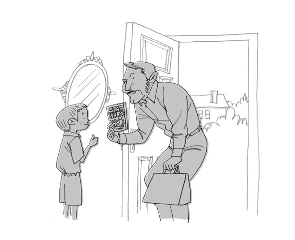

| [音声DL付]究極の英語リスニング Vol.4 6000語レベルで1万語[ネイティブが話す6000語] 究極の英語リスニングシリーズ | |
| 株式会社アルク | |
| (2010) | |
参照項目から元の箇所に戻るには、お使いのビューワーの仕様に従ってください。または一旦目次を表示し、戻りたい箇所の近くの見出しをタップして戻ってください。
■ Foreword
はじめに
6000語レベルの語彙力で、
リアルな英文に対応できる!
『究極の英語リスニングVol.4 6000語レベルで1万語』は、アルクの「標準語彙水準12000」（Standard Vocabulary List、SVL 12000）をベースにしたリスニング教材「究極の英語リスニング」Vol.1～3の続編です。本書は、「よりリアルなネイティブスピーカー同士のやりとりを聞く」ことを目的としています。
本書の英文は、SVLのレベル1～6（初・中級レベル）の単語だけ＊で構成されています。使用語彙は6000語と限られるものの、ネイティブがよく使う表現ばかり。ただし、日常的に使われる語だからこそ、同じ形をしていても品詞が異なったり、多くの意味があったり、使う語の組み合わせで意味が変わったりと、一筋縄ではいかないこともあります。
英文の内容は、家族や友人、同僚同士の会話はもちろん、商品の売り込み、観光地の紹介など多岐にわたります。また、米・加・英・豪の4カ国出身のナレーターによる吹き込みは、TOEIC®テストをはじめとして、耳にする機会の多い発音によるもの。リアルな響きに耳を慣らし、内容をきちんと理解して、リスニングに取り組むことを目標としてください。
＊固有名詞は除く
■ Contents
目次
■ Features
本書の特徴
1
中級6000語をカバーすれば、ネイティブに近づける！
SVL 12000
LEVEL 10~12
→超上級の3000語 怖いものなしの語彙マスター
LEVEL 7~9
→上級の3000語 英文雑誌がすらすら読める
LEVEL 4~6 ※本書のレベル
→中級の3000語 TOEIC®テストで高得点を狙う
LEVEL 1~3 ※本書のレベル
→下級の3000語 日本人英語学習者必須の英単語
標準語彙水準12000（SVL 12000）＊1は、日本人英語学習者にとって有用な英単語1万2000語を12段階にレベル分けした語彙リストです。本書で扱っている英文はすべてSVL 12000の初〜中級レベルに相当するLEVEL 1～6の範囲内の単語を使用して書かれています＊2。
LEVEL 4～6の単語の中には難しいものもありますが、ネイティブスピーカーであれば日常生活でよく耳にする単語ばかりなので、この機会にぜひなじんでおきましょう。
＊1 SVL収録単語については、既刊「究極の英単語」シリーズ、あるいは「標準語彙水準SVL 12000単語一覧」（http://www.alc.co.jp/eng/vocab/svl/list.html）をご参照ください。
＊2 固有名詞は除く。
2
バリエーション豊かな英文を収録！
本書に収録されている英文は全部で40本。「日常生活」「旅行」「ビジネス」「長文ナレーション」の4つのジャンルで、さまざまな場面の英文に遭遇します。また、長さ・速さ・発音などの面でもバリエーション豊かで、飽きずに取り組んでいただけます。
それぞれの英文は、速さや長さによって3段階の難易度に分けられています。ご自身の実力に合った英文から取り組むのもいいでしょう。じっくりと耳を澄ませて、どんなことが語られているのか聞き取ってみましょう。
3
3つのMODEでキッチリ聞き取り！
本書では１つの英文に対し、以下の３つのMODEを用意しています。

ヒントなしで英文を聞きます。何も見ずに英文を聞いて、内容が把握できるか確認しましょう。
↓

語彙ヒントを見て、分からない語句を確認してから英文に取り組みます。
↓
日本語訳を見て、内容を理解してから英文を聞きます。
MODE 1で聞き取れれば、その英文は卒業。でも、中には一度では聞き取れないものもあるかもしれません。そんなときは、繰り返し聞いたり、MODE 2や3のヒントを頼りに聞いたりしてみましょう。あきらめずに繰り返し聞くことで、英語に耳が慣れ、少しずつ聞き取れる部分が増えてきます。最初は難易度が低い英文から取り組み、少しずつ取り組む英文のレベルを上げることで、英文の聞き取り能力をアップしてください。
■ How to use
本書の使い方
▶語数
取り上げる英文の総語数です。
▶難易度
取り上げる英文の難易度です。以下の3段階に分かれています。
★☆☆：易。130WPM（１分間に130語）未満のスピードで読まれている、200語未満の英文です。
★★☆：普通。130WPM以上、165WPM未満のスピードで読まれている300語未満の英文です（130WPM未満でも、200語～300語の英文はここに分類されます）。
★★★：難。165WPM以上のスピードで読まれている英文です（165WPM未満でも、300語以上の英文は、ここに分類されます）。
▶状況
取り上げる英文の状況や背景を説明しています。
▶チャレンジMODE
ヒントなし
何も見ずに英文を聞くMODEです。一度で大まかな内容が把握できなければ、何度か聞いても構いません。内容を把握できたと思ったら、「聞き取れた？ 確認してみよう」に答えてみましょう。
語彙ヒント
定型表現などを紹介しています。MODE 1で英文理解の妨げとなった語句を確認してから、もう一度英文を聞いてください。その後、MODE 1では分からなかった「確認してみよう」の質問に答えましょう。
和訳ヒント
MODE 1と2では内容が理解できなかった場合、和訳を見て英文の内容を理解します。その後で、もう一度英文を聞き、答えを導ける部分が聞き取れた場合に、「確認してみよう」の質問に答えましょう。
▶音声
ダウンロードした音声を使用する部分は
DLvol.4_01 のように、ダウンロードした音声と同じトラック名で表示しています。該当のトラックを再生して学習してください。
▶聞き取れた？ 確認してみよう
MODE 1で聞いた英文をどの程度理解できているか、Q&A形式で確認します。質問は3つ。答えは英語で書き取りましょう。つづりが分からなければ、カタカナでもOKです。
▶話されていた英文はコレだ!
英文のトランスクリプション（音声を文字で書き起こしたもの）です。各単語がどのように発音されていたのか、文字を見ながら音声を聞いて、確認しましょう。下線部は「聞き取れた？ 確認してみよう」の答えを導ける部分です。
▶解答例
「聞き取れた？ 確認してみよう」の解答例と訳です。
無料ダウンロード音声について
本書に対応するMP3音声は、すべて無料でダウンロードしていただけます。
音声ダウンロードの方法
※PC専用のサイトです。まずはこちらにアクセス！
アルク ダウンロードセンター
http://www.alc.co.jp/dl/
（2015年2月時点の情報。今後詳細が変更になる可能性があります）
① 「ダウンロードリスト」の「英語」の中から、「究極の英語リスニング vol.4 無料ダウンロード音声」をクリック。
② 申し込みフォームに必要事項をご記入の上送信。
③ メールで「ダウンロードページURL」の案内が届きます。
④ 届いたURLにアクセスして、圧縮ファイルをダウンロードしてください。
ダウンロード音声ファイルについて
圧縮ファイルを解凍ソフトで展開の上、iTunesなどの音声再生ソフトで取りこんでご利用ください。音声再生ソフトでのファイルの取り込み方法や携帯音楽プレーヤーでの利用方法については、ソフトやプレーヤーに付属するマニュアルでご確認ください。
音声ファイルは、音声再生ソフトで次のように表示されます。
出版社名（アーティスト名）：「ALC PRESS INC.」と表示。
書名（アルバム名）：『究極の英語リスニング vol.4』
ダウンロードした音声のトラック名は
［vol.4_01］のように、［巻数_トラック番号］のルールで表示されます。本書の該当のトラック番号を確認して再生し、学習してください。
第１章
CHAPTER 1
日常会話に耳を澄ませよう
まずは、日常的な場面で耳にする英語を聞いて力試し。
第1章では、家族同士や店員との日々の会話をはじめ、
ボランティア団体の説明なども聞き取ります。
どんなことが話されているのか、耳を澄ませて聞いてみましょう。
第１章
日常会話に耳を澄ませよう
語数：143／聞き取り難易度：★☆☆
語数：157／聞き取り難易度：★☆☆
語数：111／聞き取り難易度：★★☆
語数：122／聞き取り難易度：★★☆
語数：169／聞き取り難易度：★★☆
語数：111／聞き取り難易度：★★☆
語数：180／聞き取り難易度：★★☆
語数：178／聞き取り難易度：★★★
語数：180／聞き取り難易度：★★★
語数：173／聞き取り難易度：★★★
語数：203／聞き取り難易度：★★★
語数：187／聞き取り難易度：★★★
語数：235／聞き取り難易度：★★★
語数：183／聞き取り難易度：★★★
語数：246／聞き取り難易度：★★★
語数：302／聞き取り難易度：★★★
第１章 日常会話に耳を澄ませよう
01新しいショッピングセンター
語数：143／難易度：★☆☆
夫婦が住む町に新しいショッピングセンターができることに。妻はうれしそうですが、夫の反応は......？
MODE1 ヒントなしでチャレンジ！
２人はどんな施設を話題にしているのだろうか。一度で内容を把握できなかったら、繰り返し音声を聞いてみよう。
DLvol.4_01
◉ 聞き取れた？ 確認してみよう
以下の質問に答えて、どの程度内容を聞き取れたか確認。解答はできるだけ英語で書こう（つづりが分からない場合はカタカナでもOK）。
① 夫は新しいショッピングセンターの情報を何から得た？
② 夫が面白そうだと思った施設は？（3つ）
③ 妻の買い物欲に対し、夫は何をすると言っている？
Unit01 新しいショッピングセンター
MODE2 語彙を確かめてチャレンジ！
聞き取りづらい語句や、定型表現などに目を通してから、もう一度音声を聞いてみよう。内容が確認できたら、再度「確認してみよう」に挑戦！
□shopping complex: ショッピングセンター
□Fairfield: フェアフィールド（架空の地名）
□be supposed to do: ～することになっている、～するはずである
□game arcade: ゲームセンター
□ice skating: アイススケート
□negative: 否定的な
□Do-It-Yourself store: ホームセンター
□athletic center: アスレチックセンター、スポーツクラブ
□appealing: 魅力的な
□What about ～?: ～はどうなんですか。
□tons of ～: たくさんの～、山ほどの～
□beauty parlor: 美容院
□passion: 熱意、愛着
DLvol.4_01
◉ 聞き取れた？ 確認してみよう
以下の質問に答えて、どの程度会話の内容を聞き取れたか確認。解答はできるだけ英語で書こう（つづりが分からない場合はカタカナでもOK）。
① 夫は新しいショッピングセンターの情報を何から得た？
② 夫が面白そうだと思った施設は？（3つ）
③ 妻の買い物欲に対し、夫は何をすると言っている？
Unit01 新しいショッピングセンター
MODE3 和訳を読んでチャレンジ！
どんな内容の会話だったのか、和訳に目を通して確認。その後、もう一度音声を聞いて、「確認してみよう」の答えとなる部分が聞き取れたら、それを書き出してみよう。
妻：フェアフィールドに新しいショッピングセンターがオープンするって知ってた？
夫：うん、そのことなら新聞で読んだよ。店だけじゃなくてカフェもたくさんできるはずなんだね。
妻：それだけじゃないわよ！ 家族のそれぞれに向けたものができる予定なのよ。子ども向けには、おもちゃ屋さん、ペットショップ、ゲームセンター、それにアイススケート場ができるわ。
夫：それはあまり楽しそうじゃないけど。
妻：そんなに否定的にならないでよ。あなた向けには、コンピューター専門店にホームセンター、スポーツクラブもできるのよ。
夫：その方が魅力的だね。君はどうなんだい？
妻：私のことはご心配なく。ほかにも、デパートでしょ、たくさんの洋服屋さん、靴屋さん、ギフトショップ、お花屋さん、美容院、それに趣味のお店ができるんだもの。
夫：君は本当に買い物が好きだよね。君のクレジットカードを隠さなくっちゃ！
DLvol.4_01
◉ 聞き取れた？ 確認してみよう
以下の質問に答えて、どの程度会話の内容を聞き取れたか確認。解答はできるだけ英語で書こう（つづりが分からない場合はカタカナでもOK）。
① 夫は新しいショッピングセンターの情報を何から得た？
② 夫が面白そうだと思った施設は？（3つ）
③ 妻の買い物欲に対し、夫は何をすると言っている？
Unit01 新しいショッピングセンター
◉ 話されていた 英文はコレだ！
最後に、会話のトランスクリプション（音声を文字で書き起こしたもの）を確認しよう。下線部が、「確認してみよう」の答えを導ける部分だ。
DLvol.4_01
Wife: Did you know they're opening a new shopping complex in Fairfield?
Husband:①Yes, I read about it in the newspaper. It's supposed to have a lot of cafés as well as stores.
W: That's not all! It will have something for everyone in the family. It will have a toy store, a pet shop, a game arcade and ice skating for the kids.
H: That doesn't sound like much fun.
W: Don't be so negative.②There will also be a computer store and a Do-It-Yourself store, and an athletic center for you.
H:②That's more appealing. What about you?
W: Don't worry about me. It will also have a department store and tons of clothing shops, shoe stores, gift shops, a flower shop, a beauty parlor and a hobby center.
H: You really do have a passion for shopping, don't you?③I'll have to hide your credit cards!
Unit01 新しいショッピングセンター
◉ 解答例
① 夫は新しいショッピングセンターの情報を何から得た？
He read about it in the newspaper.
（そのことを新聞で読んだ）
② 夫が面白そうだと思った施設は？（3つ）
a computer store（コンピューター専門店）、a Do-It-Yourself store（ホームセンター）、an athletic center（スポーツクラブ）
③ 妻の買い物欲に対し、夫は何をすると言っている？
He will hide her credit cards.
（妻のクレジットカードを隠す）
再チャレンジGO!
第１章 日常会話に耳を澄ませよう
02代わり映えしない日々
語数：157／難易度：★☆☆
最近定年退職したジャクソン氏は、隣人のエマと毎日会話をするのが楽しみ。今日の２人の話題は？
MODE1 ヒントなしでチャレンジ！
日々暇を持て余すジャクソン氏は、どんなことに興味を示しているだろうか。
DLvol.4_02
◉ 聞き取れた？ 確認してみよう
以下の質問に答えて、どの程度内容を聞き取れたか確認。解答はできるだけ英語で書こう。
① エマはジャクソン氏にどんなことをするように提案している？（3つ）
② ジャクソン氏は常々、何をしてみたいと思っていた？
③ ジャクソン氏はエマに何を頼んでいる？
Unit02 代わり映えしない日々
MODE2 語彙を確かめてチャレンジ！
聞き取りづらい語句や、定型表現などに目を通してから、もう一度音声を聞いてみよう。内容が確認できたら、再度「確認してみよう」に挑戦！
□be bored: 退屈している
□be stuck in ～: ～に縛られている、～から抜け出せない
□routine: 決まりきった習慣、日常
□fresh: 生き生きした、元気のいい
□volunteer: ボランティア活動をする
□musical instrument: 楽器
□there's an idea: いい考えがある
□I've always wanted to do: ずっと～したいと思っていた
□be crazy about ～: ～に夢中になっている
□private lesson: 個人レッスン
□I'd guess 〜: 〜だと思う
□Tuneful Music Academy: チューンフル音楽学校（架空の学校名）
□be confident: 確信する、きっと〜だと思う
□dull: 退屈な、味気ない
DLvol.4_02
◉ 聞き取れた？ 確認してみよう
以下の質問に答えて、どの程度内容を聞き取れたか確認してみよう。解答はできるだけ英語のまま書こう。
① エマはジャクソン氏にどんなことをするように提案している？（3つ）
② ジャクソン氏は常々、何をしてみたいと思っていた？
③ ジャクソン氏はエマに何を頼んでいる？
Unit02 代わり映えしない日々
MODE3 和訳を読んでチャレンジ！
どんな内容の会話だったのか、和訳に目を通して確認。その後、もう一度音声を聞いて、「確認してみよう」の答えとなる部分が聞き取れたら、それを書き出してみよう。
エマ：こんにちは、ジャクソンさん。お元気ですか。
ジャクソン氏：やあ、エマ。まあ、見ての通り、退屈してるんだよ。毎日が同じ。決まりきった日常に縛られている気がする。
エ：それは良くないですね。生き生きした生活を続けるために、何か新しいことを見つけなくちゃ。
ジ：例えば？
エ：そうですね、ボランティアしたりとか、新しい趣味を見つけたりしたらいいでしょうね。楽器を習うのなんてどうですか。
ジ：それなら1つ、いい考えがある。僕はずっとギターを習いたいと思っていたんだ。
エ：うちの娘がギターを習っているんですけど、先生に夢中なんですよ。個人レッスンを受けていて。
ジ：どんな先生なんだい？
エ：若いですね。25歳ぐらいだと思います。チューンフル音楽学校で勉強した人だから、かなり優秀なはずですよ。
ジ：お嬢さんのレッスンを1回、見学しに行ってもいいかな？ どんな先生か見てみたいんだ。
エ：友達を連れていっていいか聞いてみますね。あの先生はきっと気にしないと思いますけど。
ジ：ありがとう！ きっとこれが僕の退屈な人生を変えるのに必要なことなんだろうね。
DLvol.4_02
◉ 聞き取れた？ 確認してみよう
以下の質問に答えて、どの程度内容を聞き取れたか確認してみよう。解答はできるだけ英語のまま書こう。
① エマはジャクソン氏にどんなことをするように提案している？（3つ）
② ジャクソン氏は常々、何をしてみたいと思っていた？
③ ジャクソン氏はエマに何を頼んでいる？
Unit02 代わり映えしない日々
◉ 話されていた 英文はコレだ！
最後に、会話のトランスクリプションを確認しよう。下線部が、「確認してみよう」の答えを導ける部分だ。
DLvol.4_02
Emma: Hi, Mr. Jackson. How's everything?
Mr. Jackson: Hello, Emma. Well, as you can see, I'm bored. Every day is the same. I feel like I'm stuck in a routine.
E: That's not good. You need to find something new to do to keep your life fresh.
J: Like what?
E: Well,①you could try volunteering, or finding a new hobby. How about learning a musical instrument?
J: Now, there's an idea.②I've always wanted to learn to play the guitar.
E: My daughter is learning the guitar, and she's crazy about her teacher. She's taking private lessons.
J: What's her teacher like?
E: He's young. I'd guess he's about 25. He studied at Tuneful Music Academy, so he must be pretty good.
J:③Can I come and watch one of your daughter's lessons? I want to see what he's like.
E: I'll ask if I can bring my friend. I'm confident that he won't mind.
J: Thanks! This could be just what I need to change my dull life.
Unit02 代わり映えしない日々
◉ 解答例
① エマはジャクソン氏にどんなことをするように提案している？（3つ）
volunteering（ボランティアをすること）、finding a new hobby（新しい趣味を見つけること）、learning a musical instrument（楽器を習うこと）
② ジャクソン氏は常々、何をしてみたいと思っていた？
He has always wanted to learn to play the guitar.
（彼はずっとギターを習いたいと思っていた）
③ ジャクソン氏はエマに何を頼んでいる？
If he can come and watch one of Emma's daughter's guitar lessons.
（エマの娘のギターのレッスンを１回、見学しに行ってもいいかどうか）
再チャレンジGO!
第１章 日常会話に耳を澄ませよう
03親子といえども好みは違う
語数：111／難易度：★★☆
娘が見ている映像にぎょっとした父親は、思わずリモコンを取り上げて一時停止ボタンを押しました。
MODE1 ヒントなしでチャレンジ！
娘はどんな映画を見ていたのだろうか。
DLvol.4_03
◉ 聞き取れた？ 確認してみよう
以下の質問に答えて、どの程度内容を聞き取れたか確認。解答はできるだけ英語で書こう。
① 娘が見ている映画の種類は？
② 娘が見ている映画に対する父親の反応は？
③ 父親はなぜ恋愛物語が好き？
Unit03 親子といえども好みは違う
MODE2 語彙を確かめてチャレンジ！
聞き取りづらい語句や、定型表現などに目を通してから、もう一度音声を聞いてみよう。内容が確認できたら、再度「確認してみよう」に挑戦！
□"The Revenge of the Devil Monsters from Hell":『地獄のデビル・モンスターの復讐』（架空の映画タイトル。revengeは「復讐」）
□horror movie: ホラー映画
□spot: 斑点、まだら
□kindergarten: 幼稚園
□disgusting: 気分の悪くなるような、実に嫌な
□besides: それに
□romance: 恋愛ものの
□Julia Roberts: ジュリア・ロバーツ（1967～。アメリカの女優。代表作に『プリティ・ウーマン』『エリン・ブロコビッチ』、ロンドンの書店主と恋に落ちる『ノッティングヒルの恋人』などがある）
□London: ロンドン（イギリスの首都）
□shopkeeper: 店主
□fall in love: 恋に落ちる
□fantasy: 空想の、想像の
□remote control: リモコン
DLvol.4_03
◉ 聞き取れた？ 確認してみよう
以下の質問に答えて、どの程度内容を聞き取れたか確認してみよう。解答はできるだけ英語のまま書こう。
① 娘が見ている映画の種類は？
② 娘が見ている映画に対する父親の反応は？
③ 父親はなぜ恋愛物語が好き？
Unit03 親子といえども好みは違う
MODE3 和訳を読んでチャレンジ！
どんな内容の会話だったのか、和訳に目を通して確認。その後、もう一度音声を聞いて、「確認してみよう」の答えとなる部分が聞き取れたら、それを書き出してみよう。
父親：何を見ているんだ？
娘：『地獄のデビル・モンスターの復讐』。
父：聞いた感じではホラー映画みたいだな。
娘：そうよ。あの、紫の斑点がある緑色の怪物がいるでしょ？ あれが今、幼稚園で小さい子どもを7人食べたところなの。
父：本当に嫌だね！ どうしてそんなものを見られるんだ？
娘：これは本当のことじゃないもの、パパ。それに、パパは退屈な恋愛物語しか見ないじゃない。
父：恋愛物語は現実にあり得るからいいんだ。実際に起きるかもしれない。
娘：あら、そう？ ジュリア・ロバーツがロンドンの本屋さんに入って店主と恋に落ちるなんてこと、あるの？
父：起こり得るとも。
娘：確かに起こるかもね、空想の世界なら。さあ、リモコンを返して。私は私の空想の世界に戻りたいから。
DLvol.4_03
◉ 聞き取れた？ 確認してみよう
以下の質問に答えて、どの程度内容を聞き取れたか確認してみよう。解答はできるだけ英語のまま書こう。
① 娘が見ている映画の種類は？
② 娘が見ている映画に対する父親の反応は？
③ 父親はなぜ恋愛物語が好き？
Unit03 親子といえども好みは違う
◉ 話されていた 英文はコレだ！
最後に、会話のトランスクリプションを確認しよう。下線部が、「確認してみよう」の答えを導ける部分だ。
DLvol.4_03
Father: What are you watching?
Daughter: "The Revenge of the Devil Monsters from Hell."
F:①That sounds like a horror movie.
D:①It is. Do you see that green monster with purple spots? He just ate seven little kids at a kindergarten.
F:②That's disgusting! How can you watch it?
D: It isn't real, Dad. Besides, you only watch boring romance stories.
F:③Romance stories are nice because they could be real. They could happen.
D: Oh, yeah? Julia Roberts walks into a bookstore in London and falls in love with the shopkeeper?
F: It could happen.
D: Sure it could, in a fantasy world. Now give me back the remote control. I want to go back to my fantasy world.
Unit03 親子といえども好みは違う
◉ 解答例
① 娘が見ている映画の種類は？
a horror movie
（ホラー映画）
② 娘が見ている映画に対する父親の反応は？
He thinks it's disgusting.
（本当に嫌だと思っている）
③ 父親はなぜ恋愛物語が好き？
Because romance stories could be real.
（恋愛物語は現実にあり得るから）
再チャレンジGO!
第１章 日常会話に耳を澄ませよう
04ママの味を求めるなら
語数：122／難易度：★★☆
ドライブをしていたら、ラジオから地元のレストランの宣伝が流れてきました。
MODE1 ヒントなしでチャレンジ！
宣伝されているのはどんなレストランだろうか。
DLvol.4_04
◉ 聞き取れた？ 確認してみよう
以下の質問に答えて、どの程度内容を聞き取れたか確認。解答はできるだけ英語で書こう。
① 宣伝されている店で出されるのはどんな料理？
② 手作りのデザートにはどんなものがある？（4つ）
③ この店からはどんな景色が見える？
Unit04 ママの味を求めるなら
MODE2 語彙を確かめてチャレンジ！
聞き取りづらい語句や、定型表現などに目を通してから、もう一度音声を聞いてみよう。内容が確認できたら、再度「確認してみよう」に挑戦！
□miss: ～がないのを寂しく思う
□Grandma Martha's Garden: グランマ・マーサズ・ガーデン（「マーサおばあちゃんの庭」という意味の架空のレストランの名前）
□a selection of ～: えりすぐりの～、～の品ぞろえ
□traditional: 伝統的な
□dish: 料理
□ingredient: 材料、原料
□crisp: パリッとした
□satisfying: 満足感を与えるような
□pot roast: ポットロースト（肉の表面を焼いてから鍋で蒸し焼きにした料理）
□one's choice of ～: お好みの～
□finish off: 締めくくる
□Bay State Drive: ベイステート大通り（架空の道路名）
□ample: 広々とした
□Lake Kikawa: キカワ湖（架空の湖の名前）
□seven days a week: 毎日、定休日なしで
DLvol.4_04
◉ 聞き取れた？ 確認してみよう
以下の質問に答えて、どの程度内容を聞き取れたか確認してみよう。解答はできるだけ英語のまま書こう。
① 宣伝されている店で出されるのはどんな料理？
② 手作りのデザートにはどんなものがある？（4つ）
③ この店からはどんな景色が見える？
Unit04 ママの味を求めるなら
MODE3 和訳を読んでチャレンジ！
どんな内容の宣伝だったのか、和訳に目を通して確認。その後、もう一度音声を聞いて、「確認してみよう」の答えとなる部分が聞き取れたら、それを書き出してみよう。
お母さんの家庭料理の特別な味が恋しくありませんか。それならば、家庭の味を求めて、グランマ・マーサズ・ガーデンにおいでください。マーサズでは、えりすぐりの、旬の新鮮な素材だけを使った昔ながらの料理をご提供しています。シャキシャキしたグリーンサラダで始まり、続いて満足感ある牛肉のポットローストに、お好みでゆでるか蒸すか焼くかした野菜を添えたディナーはいかがですか。ケーキ、パイ、クッキー、アイスクリームといった、マーサズのおいしい手作りデザートのどれかで締めくくれます。ベイステート大通りにある立地の良い当店には、広々とした駐車場と、山々とキカワ湖両方の美しい眺めが備わっています。マーサズは毎日休まず、朝食・ランチ・ディナーの時間に開店しています。ぜひお立ち寄りください。あなたのためのテーブルがお待ちしています。
DLvol.4_04
◉ 聞き取れた？ 確認してみよう
以下の質問に答えて、どの程度内容を聞き取れたか確認してみよう。解答はできるだけ英語のまま書こう。
① 宣伝されている店で出されるのはどんな料理？
② 手作りのデザートにはどんなものがある？（4つ）
③ この店からはどんな景色が見える？
Unit04 ママの味を求めるなら
◉ 話されていた 英文はコレだ！
最後に、宣伝のトランスクリプションを確認しよう。下線部が、「確認してみよう」の答えを導ける部分だ。
DLvol.4_04
Do you miss the special taste of your mother's home cooking? Well, come on down to Grandma Martha's Garden for a taste of home.①Martha's offers a selection of traditional dishes using only the freshest ingredients of the season. How about a dinner that starts with a crisp green salad, followed by a satisfying beef pot roast with your choice of boiled, steamed or baked vegetables?②You can finish off with any of Martha's delicious homemade desserts including cakes, pies, cookies and ice cream.③Our convenient location on Bay State Drive has ample parking and beautiful views of both mountains and Lake Kikawa. Martha's is open for breakfast, lunch and dinner, seven days a week. Come on by. Your table is waiting.
Unit04 ママの味を求めるなら
◉ 解答例
① 宣伝されている店で出されるのはどんな料理？
A selection of traditional dishes using only the freshest ingredients of the season.
（えりすぐりの、旬の新鮮な素材だけを使った昔ながらの料理）
② 手作りのデザートにはどんなものがある？（4つ）
cakes（ケーキ）、pies（パイ）、cookies（クッキー）、ice cream（アイスクリーム）
③ この店からはどんな景色が見える？
They have beautiful views of both mountains and Lake Kikawa.
（山々とキカワ湖両方の美しい眺めが備わっている）
再チャレンジGO!
第１章 日常会話に耳を澄ませよう
05ただ今、品切れ中
語数：169／難易度：★★☆
女性は、レシピ通りに材料をそろえようとスーパーへやってきましたが、ある商品が入荷待ちと聞き......。
MODE1 ヒントなしでチャレンジ！
店員は女性にどんな提案をしているだろうか。
DLvol.4_05
◉ 聞き取れた？ 確認してみよう
以下の質問に答えて、どの程度内容を聞き取れたか確認。解答はできるだけ英語で書こう。
① 女性が探している商品はいつ入荷する？
② 店員はどんな商品を薦めている？
③ 女性はなぜほかのスーパーにはほしい商品がないと考えている？
Unit05 ただ今、品切れ中
MODE2 語彙を確かめてチャレンジ！
聞き取りづらい語句や、定型表現などに目を通してから、もう一度音声を聞いてみよう。内容が確認できたら、再度「確認してみよう」に挑戦！
□French: フランスの
□blue cheese: ブルーチーズ（青かびで熟成させた強い風味のチーズ）
□sold out: 売り切れて、完売して
□on order: 注文中で、発注して
□May I suggest that ～?: ～してはいかがでしょうか。
□substitute A with B: BをAの代わりにする
□Italy: イタリア
□specific: 特定の、具体的な
□Fleur: フルール（フランス語で「花」を意味する架空のブランド名）
□taste: 〜な味がする［動詞］、試食［名詞］
□SpendMore Supermarket: スペンドモア・スーパー（「もっと金を使え」という意味の架空のスーパーの名前）
□doubt: ～を疑わしいと思う
□stock: ～を仕入れる、～を商品として置く
□fancy: 高級な、凝った
□half a pound: 半ポンド（poundは重量単位。1ポンドは約454グラム）
□Italian: イタリアの
DLvol.4_05
◉ 聞き取れた？ 確認してみよう
以下の質問に答えて、どの程度内容を聞き取れたか確認してみよう。解答はできるだけ英語のまま書こう。
① 女性が探している商品はいつ入荷する？
② 店員はどんな商品を薦めている？
③ 女性はなぜほかのスーパーにはほしい商品がないと考えている？
Unit05 ただ今、品切れ中
MODE3 和訳を読んでチャレンジ！
どんな内容の会話だったのか、和訳に目を通して確認。その後、もう一度音声を聞いて、「確認してみよう」の答えとなる部分が聞き取れたら、それを書き出してみよう。
女性：すみません、先週あったフランス産のブルーチーズはどこですか。
店員：申し訳ありません、お客さま。すべて売り切れました。取り寄せているところで、火曜日までには入るはずです。
女：火曜日！ でも、明日の晩のディナーパーティーに必要なのよ。
店：申し訳ありませんが、お客さま、あれは非常に人気の品でして。ほかのもので代用していただくことをお薦めしたいのですが。イタリア産のとてもいいブルーチーズがございますよ。
女：でも、私の使っているレシピはとても具体的なのよ。フルール・ブランドのものしか使ってはいけないって言うの。
店：こちらはフルールにとてもよく似た味なんです。どうぞご試食なさってください。
女：いいわ。そうねえ......ええ、とてもおいしいけど、でもやっぱりこれでいいのか分からないわ。
店：スペンドモア・スーパーで探してみてもいいでしょうが、あそこにあるかどうかは怪しいものです。
女：もちろんないでしょうね。ここが、この町で高級チーズを置いている唯一のお店ですもの。
店：ええと、ほかに何をご提案していいか分かりません。
女：分かった、分かったわ。そのイタリア産を半ポンドいただくわ。
店：ご心配なく。きっとこれで大丈夫なはずです。当店でのお買い上げ、ありがとうございます。
DLvol.4_05
◉ 聞き取れた？ 確認してみよう
以下の質問に答えて、どの程度内容を聞き取れたか確認してみよう。解答はできるだけ英語のまま書こう。
① 女性が探している商品はいつ入荷する？
② 店員はどんな商品を薦めている？
③ 女性はなぜほかのスーパーにはほしい商品がないと考えている？
Unit05 ただ今、品切れ中
◉ 話されていた 英文はコレだ！
最後に、会話のトランスクリプションを確認しよう。下線部が、「確認してみよう」の答えを導ける部分だ。
DLvol.4_05
Woman: Excuse me, but where's the French blue cheese you had last week?
Clerk: Sorry, madam. It's all sold out.①It's on order and should be here by Tuesday.
W: Tuesday! But I need it for a dinner party tomorrow night.
C: I'm sorry, madam, but that's a very popular item.②May I suggest that you substitute it with something else? I have a very nice blue cheese from Italy.
W: But the recipe I'm using is very specific. It says I should only use Fleur brand.
C: This one tastes very much like Fleur. Let me give you a taste.
W: OK. Well... Yes, it's very good but I just don't know.
C: You could try the SpendMore Supermarket but I doubt they'll have it.
W: Of course they won't have it.③This is the only store in town that stocks fancy cheeses.
C: Well, I don't know what else to suggest.
W: All right, all right. I'll take half a pound of the Italian one.
C: Don't worry. I'm sure it'll be fine. And thank you for shopping here.
Unit05 ただ今、品切れ中
◉ 解答例
① 女性が探している商品はいつ入荷する？
It should arrive in the store by Tuesday.
（火曜日までに入荷するはずである）
② 店員はどんな商品を薦めている？
He suggests a very nice blue cheese from Italy.
（イタリア産のとてもいいブルーチーズを薦めている）
③ 女性はなぜほかのスーパーにはほしい商品がないと考えている？
Because this is the only store in town that stocks fancy cheeses.
（ここが、この町で高級チーズを置いている唯一の店だから）
再チャレンジGO!
第１章 日常会話に耳を澄ませよう
06テストの準備は？
語数：111／難易度：★★☆
明日、試験があるという息子に母親はやきもき。
そんな母親を息子はうっとうしく思っているようです。
MODE1 ヒントなしでチャレンジ！
息子は母親にどんな反論をするのか、聞いてみよう。
DLvol.4_06
◉ 聞き取れた？ 確認してみよう
以下の質問に答えて、どの程度内容を聞き取れたか確認。解答はできるだけ英語で書こう。
① 息子は今、何をしている？
② 明日の試験の科目は？
③ 息子はなぜ今、勉強しなくてもいいと思っている？
Unit06 テストの準備は？
MODE2 語彙を確かめてチャレンジ！
聞き取りづらい語句や、定型表現などに目を通してから、もう一度音声を聞いてみよう。内容が確認できたら、再度「確認してみよう」に挑戦！
□biology: 生物学
□history: 歴史
□Shouldn't you be -ing?: ～しているべきではないのか。
□challenge: 力を試される課題、難題
□sample test: 模擬テスト
□do fine: 立派にやる、いい成績を取る
□do well: うまくいく、成績がいい
□blame: ～を責める、～のせいにする
DLvol.4_06
◉ 聞き取れた？ 確認してみよう
以下の質問に答えて、どの程度内容を聞き取れたか確認してみよう。解答はできるだけ英語のまま書こう。
① 息子は今、何をしている？
② 明日の試験の科目は？
③ 息子はなぜ今、勉強しなくてもいいと思っている？
Unit06 テストの準備は？
MODE3 和訳を読んでチャレンジ！
どんな内容の会話だったのか、和訳に目を通して確認。その後、もう一度音声を聞いて、「確認してみよう」の答えとなる部分が聞き取れたら、それを書き出してみよう。
母親：どうしてテレビを見てるの？
息子：どういう意味？
母：明日、生物学のテストがあるんじゃないの？
子：生物学と歴史ね。
母：勉強してなきゃいけないんじゃないの？
子：もう勉強したよ。
母：本当に、理解しなきゃいけないこと全部理解したの？
子：ママ......
母：ああいったテストはすごく難しいこともあるのよ。
子：ママ......
母：ママはいつも歴史を勉強するのが好きだったわ。
子：ママ......
母：でも生物学には本当に苦労したのよね。
子：ママ......
母：勉強するのがどれだけ大事か分かっているでしょ。
子：ママ......
母：勉強しないと、いい大学に入れないのよ。
子：ママ！ やめてよ！ 放課後に友達と一緒に勉強したし、模擬テストもやってみたんだってば。うまくやるよ。お願いだから落ち着いてくれる？
母：そう、分かったわ。だけど、もし成績が悪くても、ママのせいじゃありませんからね！
DLvol.4_06
◉ 聞き取れた？ 確認してみよう
以下の質問に答えて、どの程度内容を聞き取れたか確認してみよう。解答はできるだけ英語のまま書こう。
① 息子は今、何をしている？
② 明日の試験の科目は？
③ 息子はなぜ今、勉強しなくてもいいと思っている？
Unit06 テストの準備は？
◉ 話されていた 英文はコレだ！
最後に、会話のトランスクリプションを確認しよう。下線部が、「確認してみよう」の答えを導ける部分だ。
DLvol.4_06
Mother:①Why are you watching TV?
Son: What do you mean?
M: Don't you have a biology test tomorrow?
S:②Biology and history.
M: Shouldn't you be studying?
S: I studied already.
M: You're sure you know everything you need to know?
S: Mom...
M: Those tests can be really difficult, you know.
S: Mom...
M: I always liked studying history.
S: Mom...
M: But biology was really a challenge.
S: Mom...
M: You know how important it is to study.
S: Mom...
M: You'll never get into a good college if you don't study.
S: Mom! Stop it!③I studied with friends after school and we did a sample test. I'll do fine. Would you please relax?
M: Well, all right. But if you don't do well, don't blame me!
Unit06 テストの準備は？
◉ 解答例
① 息子は今、何をしている？
He is watching TV.
（テレビを見ている）
② 明日の試験の科目は？
Biology and history.
（生物学と歴史）
③ 息子はなぜ今、勉強しなくてもいいと思っている？
Because he studied with friends after school and they did a sample test.
（放課後に友達と一緒に勉強したし、模擬テストもやってみたから）
再チャレンジGO!
第１章 日常会話に耳を澄ませよう
07友達の結婚式
語数：180／難易度：★★☆
数カ月後に迫った友達の結婚式。手伝いだけのつもりが、２人の仕事はどんどん増えてしまい!?
MODE1 ヒントなしでチャレンジ！
2人は友達のためにどんな手配をしているのだろうか。
DLvol.4_07
◉ 聞き取れた？ 確認してみよう
以下の質問に答えて、どの程度内容を聞き取れたか確認。解答はできるだけ英語で書こう。
① ステイシーはどんな花を注文した？
② 会話をしている2人が準備する／したことは？（3つ）
③ 2人目の女性が予約するつもりなのはどんなバンド？
Unit07 友達の結婚式
MODE2 語彙を確かめてチャレンジ！
聞き取りづらい語句や、定型表現などに目を通してから、もう一度音声を聞いてみよう。内容が確認できたら、再度「確認してみよう」に挑戦！
□wedding planner: ウエディング・プランナー
□organized: 計画性のある
□on one's own: 自力で
□That's my point.: 私が言いたいのはそれなんだ。
□daisy: デイジー、ヒナギク
□Who ever heard of 〜: 〜なんて聞いたことある？、〜なんて聞いたこともない（反意表現）
□lily: ユリ
□wedding hall: 結婚式場
□Hep Cats: ヘップキャッツ（「ジャズ好きなやつら」という意味の架空のバンド名）
□classic jazz: スタンダードジャズ
□heavy metal: ヘビーメタル（金属的な激しい音を特徴とする音楽）
□hip hop: ヒップホップ（ラップやスクラッチなどを特徴とする音楽）
□Come on.: いいかげんにして、それはないでしょ（たしなめる表現）
□arrangement: 手配、準備
□at all: そもそも
DLvol.4_07
◉ 聞き取れた？ 確認してみよう
以下の質問に答えて、どの程度内容を聞き取れたか確認してみよう。解答はできるだけ英語のまま書こう。
① ステイシーはどんな花を注文した？
② 会話をしている2人が準備する／したことは？（3つ）
③ 2人目の女性が予約するつもりなのはどんなバンド？
Unit07 友達の結婚式
MODE3 和訳を読んでチャレンジ！
どんな内容の会話だったのか、和訳に目を通して確認。その後、もう一度音声を聞いて、「確認してみよう」の答えとなる部分が聞き取れたら、それを書き出してみよう。
女性1：私たちがステイシーの結婚式の計画の手伝いを引き受けちゃったなんて、信じられない。
女性2：プロのウエディング・プランナーはお金が掛かり過ぎるんだもの。それに、ステイシーがどれだけ無計画か、あなたも知ってるでしょ。彼女は絶対に自力でできないわよ。
女1：私が言いたいのはそこなのよ。私たちは手伝いをするはずなのであって、すべての仕事をするはずじゃないのよ。
女2：彼女だってお花の注文ならしたわよ。
女1：だけど、注文したのはデイジーよ！ 結婚式にデイジーなんて聞いたことある？ ユリやバラならいいけど、デイジーよ？
女2：ねえ、彼女の結婚式なのよ。もし彼女がデイジーにしたいなら、それでいいのよ。
女1：そうかもね。さてと、結婚式場の予約は私がしておいたし、バンドの予約はあなたがするのよね？
女2：ええ。ヘップキャッツを呼ぶつもり。スタンダードジャズのバンドよ。彼らの音楽に合わせてみんな踊れると思うの。
女1：ステイシーならたぶんヘビーメタルのバンドか、もっとひどければヒップホップのバンドを呼んでいたかもね。
女2：やめなさいよ。ステイシーは、計画性はないかもしれないけど、頭がおかしいわけじゃないんだから。
女1：はいはい。だけど、彼女に食べ物の手配は一切させられないわね。たぶんホットドッグとハンバーガーを頼むでしょうから。そもそも彼女に常識ってものが備わっているのか、本当に疑問だわ。
DLvol.4_07
◉ 聞き取れた？ 確認してみよう
以下の質問に答えて、どの程度内容を聞き取れたか確認してみよう。解答はできるだけ英語のまま書こう。
① ステイシーはどんな花を注文した？
② 会話をしている2人が準備する／したことは？（3つ）
③ 2人目の女性が予約するつもりなのはどんなバンド？
Unit07 友達の結婚式
◉ 話されていた 英文はコレだ！
最後に、会話のトランスクリプションを確認しよう。下線部が、「確認してみよう」の答えを導ける部分だ。
DLvol.4_07
Woman 1: I can't believe we agreed to help plan Stacy's wedding.
Woman 2: Professional wedding planners are too expensive. And you know how badly organized Stacy is. She'd never be able to do it on her own.
W1: That's my point. We're supposed to be helping, not doing all the work.
W2: She did order the flowers.
W1: But①she ordered daisies! Who ever heard of daisies for a wedding? Lilies or roses would be all right, but daisies?
W2: Hey, it's her wedding. If she wants daisies, she should have them.
W1: I guess so. Now,②I took care of the wedding hall reservation and you're going to book the band, right?
W2: Yes.③I'm going to book the Hep Cats. They're a classic jazz band. I think everyone will be able to dance to their music.
W1: Stacy probably would have booked a heavy metal band, or worse than that, a hip hop band.
W2: Come on. She might not be organized but she isn't crazy.
W1: OK, OK. But②we can't let her do any of the arrangements for the food. She'd probably order hot dogs and hamburgers. I really wonder if she has any common sense at all.
Unit07 友達の結婚式
◉ 解答例
① ステイシーはどんな花を注文した？
She ordered daisies.
（デイジーを注文した）
② 会話をしている2人が準備する／したことは？（3つ）
They took care of the wedding hall reservation.（結婚式場の予約をした）、They're going to book the band.（バンドの予約をする）、They will do arrangements for the food.（食べ物の手配をする）
③ 2人目の女性が予約するつもりなのはどんなバンド？
a classic jazz band（スタンダードジャズのバンド）
再チャレンジGO!
第１章 日常会話に耳を澄ませよう
08父と子だけで過ごす週末
語数：178／難易度：★★★

母親が留守になる週末に備えて、父親がこっそりと何かを準備しているようです。
MODE1 ヒントなしでチャレンジ！
父親と息子は、どんな週末を計画しているのだろうか。
DLvol.4_08
◉ 聞き取れた？ 確認してみよう
以下の質問に答えて、どの程度内容を聞き取れたか確認。解答はできるだけ英語で書こう。
① 母親は明日、なぜ不在にする？
② 父親は母親が不在の間、何をするつもりで「スター・ウォーズ」を借りてきた？
③ 2人は朝食に何を食べる？
Unit08 父と子だけで過ごす週末
MODE2 語彙を確かめてチャレンジ！
聞き取りづらい語句や、定型表現などに目を通してから、もう一度音声を聞いてみよう。内容が確認できたら、再度「確認してみよう」に挑戦！
□have ～ in mind: ～が頭にある、～を計画する
□"Star Wars": 「スター・ウォーズ」（1977年のSF大作映画『スター・ウォーズ』と、その前後のエピソードを映画化した計6作のシリーズ）
□rent: ～を借りる
□stay up all night: 徹夜する
□school night: 翌日学校のある夜
□cereal: シリアル
□clean up: 片づける、きれいに掃除する
□amazing: 驚くような、素晴らしい
□naughty: やんちゃな、行儀の悪い
DLvol.4_08
◉ 聞き取れた？ 確認してみよう
以下の質問に答えて、どの程度内容を聞き取れたか確認してみよう。解答はできるだけ英語のまま書こう。
① 母親は明日、なぜ不在にする？
② 父親は母親が不在の間、何をするつもりで「スター・ウォーズ」を借りてきた？
③ 2人は朝食に何を食べる？
Unit08 父と子だけで過ごす週末
MODE3 和訳を読んでチャレンジ！
どんな内容の会話だったのか、和訳に目を通して確認。その後、もう一度音声を聞いて、「確認してみよう」の答えとなる部分が聞き取れたら、それを書き出してみよう。
息子：ねえ、パパ、そこに何を持っているの？
父親：静かに！ これはママに見せたくないんだ。
子：それ何？
父：ママは明日からエドナおばさんのところに行くだろう？
子：うん。だから？
父：ママのいない間にちょっと楽しんでもいいと思ったんだ。
子：何を考えてるの？
父：ほら、お前が「スター・ウォーズ」が好きだって知っているから、全シリーズ借りてきたんだ。
子：やった！ それを見ながら徹夜してもいいよね。
父：パパもそう思っていたんだ。明日は土曜日だから次の日に学校に行く必要はないし。
子：夕ごはんにピザとアイスクリームを食べていい？
父：いけない理由は見当たらないね。
子：あと、朝ごはんはシリアルじゃなくてベーコンエッグね？
父：パパがどれだけベーコン好きか知っているだろう。
子：ベッドメークをしないで、汚れた靴下を床に置きっ放しにするのは？
父：ママが帰ってくるまでに片づけるなら、やりたいことを何でもしていいさ。
子：すごいや、パパ、パパがこんなにやんちゃになれるなんて知らなかったよ！
父：おい、パパだって昔は子どもだったんだ。それもかなりのいたずらっ子だったんだぞ。
子：パパのビールも少し飲ませてくれる？
父：ハッハッハ......それは駄目。
DLvol.4_08
◉ 聞き取れた？ 確認してみよう
以下の質問に答えて、どの程度内容を聞き取れたか確認してみよう。解答はできるだけ英語のまま書こう。
① 母親は明日、なぜ不在にする？
② 父親は母親が不在の間、何をするつもりで「スター・ウォーズ」を借りてきた？
③ 2人は朝食に何を食べる？
Unit08 父と子だけで過ごす週末
◉ 話されていた 英文はコレだ！
最後に、会話のトランスクリプションを確認しよう。下線部が、「確認してみよう」の答えを導ける部分だ。
DLvol.4_08
Son: Hey, Dad, what do you have there?
Father: Be quiet! I don't want your mother to see these.
S: What are they?
F:①Your mother's going to visit Aunt Edna from tomorrow, right?
S: Right. So?
F: I thought we could have some fun while she's gone.
S: What do you have in mind?
F: Well, I know you like "Star Wars", so I rented the whole series.
S: Great!②We can stay up all night watching them.
F:②That's what I was thinking. Tomorrow's Saturday so it isn't a school night.
S: Can we have pizza and ice cream for dinner?
F: I don't see why not.
S:③And bacon and eggs for breakfast instead of cereal?
F:③You know how much I love bacon.
S: How about not making our beds and leaving dirty socks on the floor?
F: As long as we clean up before she gets back, we can do whatever we want.
S: You're amazing, Dad, I didn't know you knew how to be so naughty!
F: Hey, I was a kid once, too. And I was pretty naughty.
S: Will you let me drink some of your beer?
F: Ha-ha... no.
Unit08 父と子だけで過ごす週末
◉ 解答例
① 母親は明日、なぜ不在にする？
Because she's going to visit Aunt Edna.
（エドナおばさんのところに行くから）
② 父親は母親が不在の間、何をするつもりで「スター・ウォーズ」を借りてきた？
They are going to stay up all night watching them.
（それを見ながら徹夜する）
③ 2人は朝食に何を食べる？
They will have bacon and eggs instead of cereal.
（シリアルじゃなくてベーコンエッグを食べる）
再チャレンジGO!
第１章 日常会話に耳を澄ませよう
09夫婦水入らず
語数：180／難易度：★★★

週明けの月曜日。スッキリした顔をしている男性にどんな週末を過ごしたのか、男性の友達が尋ねています。
MODE1 ヒントなしでチャレンジ！
2人目の男性は夫婦でどんな週末を過ごしたのだろうか。
DLvol.4_09
◉ 聞き取れた？ 確認してみよう
以下の質問に答えて、どの程度内容を聞き取れたか確認。解答はできるだけ英語で書こう。
① 2人目の男性はこの週末、誰とどこへ行った？
② その間、この男性の子どもの世話は誰がしていた？
③ 日曜日の朝、この男性は何をした？
Unit09 夫婦水入らず
MODE2 語彙を確かめてチャレンジ！
聞き取りづらい語句や、定型表現などに目を通してから、もう一度音声を聞いてみよう。内容が確認できたら、再度「確認してみよう」に挑戦！
□charming: 魅力的な
□inn: 宿
□and all that: その他いろいろ、などなど
□look after ～: ～の世話をする
□nap: うたた寝する
□fireplace: 暖炉
□royal: 王族の
□～ or something: ～か何か
□farmer's market: 農産物直売所
□drive back to 〜: 車で〜に戻る
□city: 都市、都会
□relaxed: くつろいだ、ゆったりした
□strained: 緊張した、張り詰めた
DLvol.4_09
◉ 聞き取れた？ 確認してみよう
以下の質問に答えて、どの程度内容を聞き取れたか確認してみよう。解答はできるだけ英語のまま書こう。
① 2人目の男性はこの週末、誰とどこへ行った？
② その間、この男性の子どもの世話は誰がしていた？
③ 日曜日の朝、この男性は何をした？
Unit09 夫婦水入らず
MODE3 和訳を読んでチャレンジ！
どんな内容の会話だったのか、和訳に目を通して確認。その後、もう一度音声を聞いて、「確認してみよう」の答えとなる部分が聞き取れたら、それを書き出してみよう。
男性1：週末はどうだった？
男性2：とても楽しかったんだ、実は。
男1：奥さんと一緒にどこかに出掛けたんだよね？
男2：うん。山の中に魅力的な宿があるんだ。以前はよく行っていたんだけどね。
男1：でも、仕事や子どもや、いろいろあるしな。
男2：その通りだよ。子どもたちの世話はうちの母に頼んだから、2人きりになったんだ。
男1：ロマンチックだね。
男2：本当にそうだったんだよ！ ほかに客はいなかったんだ。僕らが到着したとき、宿の主人は暖炉のそばのお気に入りのいすでうとうとしていたよ。夕食の給仕は完ぺきで、王族のカップルか何かみたいな気分だったな！ 夕食後はワイングラスを傾けながら暖炉のそばに座ってね。日曜の朝は森にハイキングに出掛けたよ。それから、車で都会に戻る前に、町の農産物の直売所に立ち寄ったんだ。
男1：今日はいつもよりずっと肩の力が抜けてるみたいだよ。
男2：ちょうど僕ら夫婦に必要なことだったんだな。
男1：そうだね、たまには自分自身のための時間を見つけることも忘れちゃいけないね。
男2：本当に。僕らの関係にちょっと緊張感があったんだ。2人のどちらにとっても良かったよ。
DLvol.4_09
◉ 聞き取れた？ 確認してみよう
以下の質問に答えて、どの程度内容を聞き取れたか確認してみよう。解答はできるだけ英語のまま書こう。
① 2人目の男性はこの週末、誰とどこへ行った？
② その間、この男性の子どもの世話は誰がしていた？
③ 日曜日の朝、この男性は何をした？
Unit09 夫婦水入らず
◉ 話されていた 英文はコレだ！
最後に、会話のトランスクリプションを確認しよう。下線部が、「確認してみよう」の答えを導ける部分だ。
DLvol.4_09
Man 1: How was your weekend?
Man 2: Really nice, actually.
M1:①You and your wife went away somewhere, right?
M2:①Yeah. There's a charming inn up in the mountains. We used to go there a lot.
M1: But there's work and the kids and all that.
M2: Exactly.②I asked my mother to look after our kids so it was just the two of us.
M1: Sounds romantic.
M2: It was! There weren't any other guests. When we got there, the owner of the inn was napping in his favorite chair by the fireplace. The dinner was served perfectly, and we felt like a royal couple or something! After dinner, we sat by the fire with a glass of wine.③Sunday morning, we went for a hike in the forest. Then we visited the farmer's market in town before we drove back to the city.
M1: And you seem a lot more relaxed today.
M2: It was just what we needed.
M1: Yes, you have to remember to find some time for yourself now and then.
M2: I agree. Our relationship was feeling a bit strained. It was good for both of us.
Unit09 夫婦水入らず
◉ 解答例
① 2人目の男性はこの週末、誰とどこへ行った？
He went to a charming inn up in the mountains with his wife.
（奥さんと一緒に山の中の魅力的な宿へ行った）
② その間、この男性の子どもの世話は誰がしていた？
The man's mother looked after them.
（男性の母親が子どもたちの世話をした）
③ 日曜日の朝、この男性は何をした？
He went for a hike in the forest with his wife.
（奥さんと一緒に森にハイキングに出掛けた）
再チャレンジGO!
第１章 日常会話に耳を澄ませよう
10うちの子の具合が悪いんです
語数：173／難易度：★★★
大切な家族の一員を抱いて、男性が動物病院へやってきました。様子をうかがってみましょう。
MODE1 ヒントなしでチャレンジ！
男性の愛犬には、どんな症状が出ているのだろうか。
DLvol.4_10
◉ 聞き取れた？ 確認してみよう
以下の質問に答えて、どの程度内容を聞き取れたか確認。解答はできるだけ英語で書こう。
① チェスターの様子はどうおかしい？
② チェスターの普段の食事はどんなもの？
③ チェスターの薬はどのように与える？
Unit10 うちの子の具合が悪いんです
MODE2 語彙を確かめてチャレンジ！
聞き取りづらい語句や、定型表現などに目を通してから、もう一度音声を聞いてみよう。内容が確認できたら、再度「確認してみよう」に挑戦！
□We haven't seen you in a while.: お久しぶりですね。
□Chester: チェスター（ここでは犬の名前）
□as a matter of fact: 実のところ、実を言うと
□all the time: いつも、ずっと
□Let's see.: どれどれ。、そうですね。
□be in a fight: けんかをする
□lead: リード、（犬をつなぐ）ひも
□clear: 傷や汚れのない、きれいな
□infection: 感染、感染症
□wet food: ウェットフード（缶やレトルトパックに入った、水分を含むペットフード）
□dry food: ドライフード（乾燥した固形のペットフード）
DLvol.4_10
◉ 聞き取れた？ 確認してみよう
以下の質問に答えて、どの程度内容を聞き取れたか確認してみよう。解答はできるだけ英語のまま書こう。
① チェスターの様子はどうおかしい？
② チェスターの普段の食事はどんなもの？
③ チェスターの薬はどのように与える？
Unit10 うちの子の具合が悪いんです
MODE3 和訳を読んでチャレンジ！
どんな内容の会話だったのか、和訳に目を通して確認。その後、もう一度音声を聞いて、「確認してみよう」の答えとなる部分が聞き取れたら、それを書き出してみよう。
女性：あら、こんにちは。お久しぶりですね。チェスターの具合はどう？
男性：僕もお目にかかれてうれしいです。実のところ、チェスターの具合はあまり良くないんです。
女：どこが悪いようですか。
男：いつも疲れている様子で、食が進まないんです。お気に入りのおもちゃで遊ぼうともしません。年齢のせいだと思いますか。
女：そうですねえ。まだ6歳ですからね、年齢ではないはずです。最近けんかはしましたか。
男：いいえ。どこへ行くにもリードを付けておきますから。
女：そうですか。ええと、目はきれいですし、歯も見たところ健康です。ああ、これが問題かもしれませんね。左耳がかなりひどい感染症を起こしています。
男：どれくらいひどいんですか。
女：ご心配なく。良くなるように、お薬をお出ししますよ。ウェットフードとドライフード、どちらを食べていますか。
男：両方です。朝ごはんにドライで、晩ごはんにウェットです。
女：では、お薬を晩ごはんに混ぜてあげてください。木曜日までに普段の調子に戻らなかったら、また連れていらしてください。
男：ありがとうございます、先生。
女：どういたしまして。
DLvol.4_10
◉ 聞き取れた？ 確認してみよう
以下の質問に答えて、どの程度内容を聞き取れたか確認してみよう。解答はできるだけ英語のまま書こう。
① チェスターの様子はどうおかしい？
② チェスターの普段の食事はどんなもの？
③ チェスターの薬はどのように与える？
Unit10 うちの子の具合が悪いんです
◉ 話されていた 英文はコレだ！
最後に、会話のトランスクリプションを確認しよう。下線部が、「確認してみよう」の答えを導ける部分だ。
DLvol.4_10
Woman: Hello there. We haven't seen you in a while. How is Chester?
Man: Yes, it's nice to see you. Chester isn't doing too well, as a matter of fact.
W: What seems to be the problem?
M:①He seems tired all the time and he's not eating much. He doesn't even want to play with his favorite toy. Do you think it's because of his age?
W: Let's see. He's only six, so it shouldn't be his age. Has he been in any fights lately?
M: No. I keep him on his lead whenever we go out.
W: OK. Well, his eyes are clear and his teeth look healthy. Oh, this could be the problem. He has a pretty bad infection in his left ear.
M: How bad?
W: Don't worry. I can give you some medicine that should take care of it. Does he eat wet or dry food?
M: Both.②Dry for breakfast, wet for dinner.
W:③Just mix the medicine into his dinner, then. If he doesn't return to normal by Thursday, bring him back in.
M: Thanks, doctor.
W: You're welcome.
Unit10 うちの子の具合が悪いんです
◉ 解答例
① チェスターの様子はどうおかしい？
He seems tired all the time and he's not eating much. He doesn't even want to play with his favorite toy.
（いつも疲れている様子で、食が進まない。お気に入りのおもちゃで遊ぼうともしない）
② チェスターの普段の食事はどんなもの？
He eats dry food for breakfast, wet food for dinner.
（朝ごはんにドライフードを、晩ごはんにウェットフードを食べる）
③ チェスターの薬はどのように与える？
Mix the medicine into his dinner.
（薬を晩ごはんに混ぜる）
再チャレンジGO!
第１章 日常会話に耳を澄ませよう
11結婚を機に
語数：203／難易度：★★★
結婚式を6カ月後に控えたカップル。結婚式の準備以外にも、やらなければいけないことがたくさんあります。
MODE1 ヒントなしでチャレンジ！
2人が結婚後の生活にどんなことをイメージしているのか、聞き取ってみよう。
DLvol.4_11
◉ 聞き取れた？ 確認してみよう
以下の質問に答えて、どの程度内容を聞き取れたか確認。解答はできるだけ英語で書こう。
① 2人が引っ越さなければいけない理由は？
② 男性は不動産についてどう思っている？
③ 女性は新しい家にどんな設備が欲しいと思っていた？
Unit11 結婚を機に
MODE2 語彙を確かめてチャレンジ！
聞き取りづらい語句や、定型表現などに目を通してから、もう一度音声を聞いてみよう。内容が確認できたら、再度「確認してみよう」に挑戦！
□commitment: 責任、約束
□be about to do: まさに～しようとしている
□commit ～ to ...: ......に～をささげる、ゆだねる
□devotion: 献身
□disaster: 惨事、ひどい状態
□job security: 職の安定、雇用確保
□be locked into ～: ～に拘束される
□real estate: 不動産
□investment: 投資
□factor: 要素、要因
□weigh: ～をはかりにかける、～を考慮する
□take into consideration ～: ～を考慮に入れる
□facility: 施設、設備
□tax rate: 税率
□handle: ～に対処する
□have got ～: ～を持っている、～がある（= have）
□available: 利用できる、入居できる
□inner city: 都心部
DLvol.4_11
◉ 聞き取れた？ 確認してみよう
以下の質問に答えて、どの程度内容を聞き取れたか確認してみよう。解答はできるだけ英語のまま書こう。
① 2人が引っ越さなければいけない理由は？
② 男性は不動産についてどう思っている？
③ 女性は新しい家にどんな設備が欲しいと思っていた？
Unit11 結婚を機に
MODE3 和訳を読んでチャレンジ！
どんな内容の会話だったのか、和訳に目を通して確認。その後、もう一度音声を聞いて、「確認してみよう」の答えとなる部分が聞き取れたら、それを書き出してみよう。
女性：ねえ、結婚したら引っ越さないといけないわね。私たちのアパートはどちらも、一緒に住むには狭すぎるわ。
男性：僕もそれは考えていたよ。家を買った方がいいんじゃないかと思うんだ。
女：ええっ！ それは責任重大よ。本当に私たちにその準備ができているって思う？
男：僕は全人生を君にささげようとしているんだよ。互いへの献身の象徴になると思うな。
女：その心配はしなくていいわ。私だってちゃんとあなたにゆだねているもの。でも、住宅市場は今ひどい状態よ。それに、最近はどんな人でも雇用の安定を手にしているとは言えないじゃない？ 私たち、銀行のローンに何年も拘束されることになるのよ。
男：だけど、不動産は普通、いい投資になるよ。それに、僕たちはすぐにも子どもが欲しいんだから。もっと広いスペースが必要になるし、子どもたちが安全に遊べる場所も欲しいよ。
女：検討する要素がたくさんあるわ。考慮に入れる必要があるのは、近所の学校、商業施設や公共施設、税率、通勤時間......
男：どれも対処できるさ。結婚式までまだ6カ月あるんだ。いくつか不動産業者に連絡してどんな物件があるのか見ればいいと思う。
女：そうね。私、前々から庭が欲しかったの。それに、都心部から抜け出せるとすてきよね。
DLvol.4_11
◉ 聞き取れた？ 確認してみよう
以下の質問に答えて、どの程度内容を聞き取れたか確認してみよう。解答はできるだけ英語のまま書こう。
① 2人が引っ越さなければいけない理由は？
② 男性は不動産についてどう思っている？
③ 女性は新しい家にどんな設備が欲しいと思っていた？
Unit11 結婚を機に
◉ 話されていた 英文はコレだ！
最後に、会話のトランスクリプションを確認しよう。下線部が、「確認してみよう」の答えを導ける部分だ。
DLvol.4_11
Woman: You know, we're going to have to move after we get married.①Both of our apartments are too small to live in together.
Man: I've been thinking about that, too. I think we should buy a house.
W: Wow! That's a big commitment. Are you sure we're ready for that?
M: I'm about to commit my entire life to you. I think it would be a symbol of our devotion to each other.
W: Don't worry about that. I'm certainly committed to you. But the housing market is a disaster right now. And how much job security does anyone have these days? We'll be locked into a loan from the bank for years.
M: But②real estate is usually a good investment. Besides, we want to have kids right away. We'll need more space and I want a place where they can play safely.
W: There are a lot of factors to weigh. We have to take into consideration local schools, shopping and public facilities, tax rates, travel time to work...
M: We can handle all that. We've still got six months before the wedding. I think we should contact some real estate agents and see what's available.
W: All right.③I have always wanted a garden. And it would be nice to get out of the inner city.
Unit11 結婚を機に
◉ 解答例
① 2人が引っ越さなければいけない理由は？
Because both of their apartments are too small to live in together.
（彼らのアパートはどちらも、一緒に住むには狭すぎるから）
② 男性は不動産についてどう思っている？
Real estate is usually a good investment.
（不動産は普通、いい投資になる）
③ 女性は新しい家にどんな設備が欲しいと思っていた？
She has always wanted a garden.
（前々から庭が欲しかった）
再チャレンジGO!
第１章 日常会話に耳を澄ませよう
12インターネットで再会
語数：187／難易度：★★★
ずっと音信不通だった友達と連絡が取れるようになった女性がうれしそうに夫に報告しています。
MODE1 ヒントなしでチャレンジ！
女性はどうやって旧友を見つけたのだろうか。
DLvol.4_12
◉ 聞き取れた？ 確認してみよう
以下の質問に答えて、どの程度内容を聞き取れたか確認。解答はできるだけ英語で書こう。
① 男性は話題になっている女性と面識はある？
② 女性はかつての同級生を見つけるために何をした？
③ 女性と同級生は現在、どのように連絡を取り合っている？
Unit12 インターネットで再会
MODE2 語彙を確かめてチャレンジ！
聞き取りづらい語句や、定型表現などに目を通してから、もう一度音声を聞いてみよう。内容が確認できたら、再度「確認してみよう」に挑戦！
□over the years: 長年にわたって
□site:（インターネットの）サイト
□Facebook: フェイスブック（インターネット上の交流ツールであるソーシャルネットワーキングサービスのひとつ）
□register: 登録する
□type in ～: ～をキーで打ち込む、～を入力する
□graduate: 卒業する
□there ～ is: ほら～があった（探していたものを見つけたときの表現）
□right away: すぐに
□connect with ～: ～と関係を持つ、～と気持ちが通じる
DLvol.4_12
◉ 聞き取れた？ 確認してみよう
以下の質問に答えて、どの程度内容を聞き取れたか確認してみよう。解答はできるだけ英語のまま書こう。
① 男性は話題になっている女性と面識はある？
② 女性はかつての同級生を見つけるために何をした？
③ 女性と同級生は現在、どのように連絡を取り合っている？
Unit12 インターネットで再会
MODE3 和訳を読んでチャレンジ！
どんな内容の会話だったのか、和訳に目を通して確認。その後、もう一度音声を聞いて、「確認してみよう」の答えとなる部分が聞き取れたら、それを書き出してみよう。
女性：私の昔の友達のテレサのこと覚えている？
男性：まあ、会ったことはないけど、君から長い間、彼女の話をずいぶんと聞かされてきたからね。知り合いみたいな気分だよ。
女：ついにまた彼女を見つけたのよ！
男：どうやって見つけたんだい？
女：フェイスブックっていうサイトがあってね。人探しに使えるのよ。それに、もしあなたがそこに登録したら、ほかの人があなたを探すのに使うこともできるの。
男：で、彼女が登録していた？
女：そうなの。彼女の名前と、私たちの高校の名前と、卒業年を入力したら、そこに彼女がいたのよ。
男：それはうれしいだろうね。彼女の写真もあったの？
女：ええ、とてもうれしいわ。それに、ええ、写真もあったわ。彼女の顔はかなり変わっていたけど、でも考えてもみてよ、もう30年会っていなかったんだもの。
男：じゃあ、このサイトを使って交流できるんだね。
女：その通り。サイト上でメッセージのやり取りをしているのよ。
男：それはいいね。君が長年、彼女を探していたことは僕も知っているよ。
女：素晴らしいわ。お互いに高校以来いろいろな経験をしてきたけど、たちまち、また仲のいい友達に戻れたわ。
男：どんなときでも、旧友とつながりを持つのはいいことだよ。
DLvol.4_12
◉ 聞き取れた？ 確認してみよう
以下の質問に答えて、どの程度内容を聞き取れたか確認してみよう。解答はできるだけ英語のまま書こう。
① 男性は話題になっている女性と面識はある？
② 女性はかつての同級生を見つけるために何をした？
③ 女性と同級生は現在、どのように連絡を取り合っている？
Unit12 インターネットで再会
◉ 話されていた 英文はコレだ！
最後に、会話のトランスクリプションを確認しよう。下線部が、「確認してみよう」の答えを導ける部分だ。
DLvol.4_12
Woman: Do you remember my old friend Teresa?
Man: You know,①I've never met her, but you've talked about her enough over the years. I feel like I know her.
W: I finally found her again!
M: How did you do that?
W:②There's a site called Facebook. You can use it to look for people. And if you register, other people can use it to look for you.
M: And she's registered?
W: Yes.②I typed in her name and the name of our high school and the year we graduated, and there she was.
M: You must be happy. Was there a picture of her?
W: Yes, I am very happy. And yes, there was a picture. She looks really different, but remember that it's been almost 30 years since we've seen each other.
M: So you can use this site to communicate.
W: Right.③We've been sending messages back and forth on the site.
M: That's great. I know you've been looking for her for a long time.
W: It's amazing. We've both had a lot of experiences since high school, but we became good friends again right away.
M: It's always good to connect with old friends.
Unit12 インターネットで再会
◉ 解答例
① 男性は話題になっている女性と面識はある？
He has never met her.
（会ったことはない）
② 女性はかつての同級生を見つけるために何をした？
She typed in her friend's name and the name of their high school and the year they graduated on a site called Facebook.
（フェイスブックというサイトで友達の名前と、自分たちの高校の名前と、卒業年を入力した）
③ 女性と同級生は現在、どのように連絡を取り合っている？
They've been sending messages back and forth on the site.
（サイト上でメッセージのやり取りをしている）
再チャレンジGO!
第１章 日常会話に耳を澄ませよう
13この緑の野菜は何？
語数：235／難易度：★★★
沖縄料理店で郷土料理に挑戦している男性。
ある素材の独特の風味に興味を持ったようです。
MODE1 ヒントなしでチャレンジ！
男性は材料についてどんな質問をしているだろうか。
DLvol.4_13
◉ 聞き取れた？ 確認してみよう
以下の質問に答えて、どの程度内容を聞き取れたか確認。解答はできるだけ英語で書こう。
① 男性は、どんな食材に興味を示した？
② その食材の下ごしらえで忘れてはいけないことは？
③ その食材はどこで買える？
Unit13 この緑の野菜は何？
MODE2 語彙を確かめてチャレンジ！
聞き取りづらい語句や、定型表現などに目を通してから、もう一度音声を聞いてみよう。内容が確認できたら、再度「確認してみよう」に挑戦！
□How is everything going?: すべて順調ですか。、いかがですか。
□bitter melon: ニガウリ、ゴーヤー（「苦いウリ」を英語に直訳したもの）
□yet: にもかかわらず、それでも
□go well with ～: ～にうまく調和する、～に合う
□have trouble -ing: ～するのに苦労する、なかなか～できない
□go ～: ～しに行く
□here it is.: ここにあります。、さあこれです。
□alien: 異星人の、宇宙人の
□cucumber: キュウリ
□amusing: 面白い、愉快な
□be loaded with ～: ～が詰め込まれている、～がたっぷり含まれている
□vitamin: ビタミン（発音は[váitəmin]）
□prepare: ～を調理する
□rub ～ with ...: ～に......をこすり付ける、～に......をすり込む
□thoroughly: 完全に、十分に
□cut ～ up: ～を細かく切る
□precaution: 事前の忠告
DLvol.4_13
◉ 聞き取れた？ 確認してみよう
以下の質問に答えて、どの程度内容を聞き取れたか確認してみよう。解答はできるだけ英語のまま書こう。
① 男性は、どんな食材に興味を示した？
② その食材の下ごしらえで忘れてはいけないことは？
③ その食材はどこで買える？
Unit13 この緑の野菜は何？
MODE3 和訳を読んでチャレンジ！
どんな内容の会話だったのか、和訳に目を通して確認。その後、もう一度音声を聞いて、「確認してみよう」の答えとなる部分が聞き取れたら、それを書き出してみよう。
女性：いかがですか。ほかに何かお持ちしましょうか。
男性：何もかもおいしいよ、ありがとう。この料理は本当に素晴らしいね。この緑色の野菜は確かに食べたことがないんだけど。これは何？
女：これは日本語でゴーヤーと言います。英語ではどう呼ぶのか分かりませんが、ある常連のお客さまは「苦いメロン」と呼んでいましたよ。
男：そう、その人がそう言ったのも分かるな。確かに苦い。それでいて、たれの塩味とよく合うね。
女：お気に召していただけてよかったです。なかなか食べられないという人もいるんです、特に初めて食べてみたときには。
男：料理する前はどんな形をしているんだい？
女：少々お待ちください、厨房から取ってきます......こちらです。
男：おや、これはとても変わっているね。宇宙人のキュウリって感じだ。
女：それは面白い表現ですね。そんな表現は初めて聞きました。いろんなビタミンがたっぷり詰まっているのでとても健康にいいんですよ。
男：この料理は簡単に作れる？
女：はい。ただ、ゴーヤーを切った後、塩もみをしてからよく洗い流すことを忘れないようにしてください。そうすると苦味が減ります。
男：ご忠告ありがとう。どこで見つけられるだろう？ スーパーで買える？
女：もちろん。もともとはゴーヤーが一般的だったのは沖縄と九州だけだったのですが、最近では日本のどこでも、地元のスーパーで見つけられますよ。
男：良かった。今度買い物に行ったらスーパーで探してみるよ。
DLvol.4_13
◉ 聞き取れた？ 確認してみよう
以下の質問に答えて、どの程度内容を聞き取れたか確認してみよう。解答はできるだけ英語のまま書こう。
① 男性は、どんな食材に興味を示した？
② その食材の下ごしらえで忘れてはいけないことは？
③ その食材はどこで買える？
Unit13 この緑の野菜は何？
◉ 話されていた 英文はコレだ！
最後に、会話のトランスクリプションを確認しよう。下線部が、「確認してみよう」の答えを導ける部分だ。
DLvol.4_13
Woman: How is everything going? Can I get you anything else?
Man: Everything is delicious, thank you. This dish is really wonderful.①I'm sure I've never tasted this green vegetable before. What is it?
W:①It's calledgoya in Japanese. I'm not sure how you say it in English, but one of our regular guests called it "bitter melon."
M: Well, I can understand why he said that. It really is bitter, yet it goes well with the salty taste of the sauce.
W: I'm glad you like it. Some people have trouble eating it, especially the first time they try it.
M: What does it look like before it's cooked?
W: Just a moment, I'll go get one from the kitchen... here it is.
M: Oh, that is really unusual. It looks like an alien cucumber.
W: That's an amusing description. I've never heard it described like that before. It is loaded with vitamins, so it's very healthy.
M: Is this dish easy to prepare?
W: Yes, but②you must remember to rub thegoya with salt and wash it thoroughly after you cut it up. That helps reduce the bitter flavor.
M: Thanks for the precaution. Where can I find them? Can I buy them at a supermarket?
W: Sure. Originallygoya was only popular in Okinawa and Kyushu, but these days③you can find them at local supermarkets all over Japan.
M: Great. I'll look out for them at the market next time I go shopping.
Unit13 この緑の野菜は何？
◉ 解答例
① 男性は、どんな食材に興味を示した？
The green vegetable he has never tasted before.
（食べたことのない緑の野菜）、goya（ゴーヤー）
② その食材の下ごしらえで忘れてはいけないことは？
To rub thegoya with salt and wash it thoroughly after you cut it up.
（ゴーヤーを切った後、塩もみをしてからよく洗い流すこと）
③ その食材はどこで買える？
You can find them at local supermarkets all over Japan.
（日本のどこでも、地元のスーパーで見つけられる）
再チャレンジGO!
第１章 日常会話に耳を澄ませよう
14誰に会ったと思う!?
語数：183／難易度：★★★
朝から虫の居所が悪いクリス。仲良しの同僚を見つけて、その思いをぶちまけています。
MODE1 ヒントなしでチャレンジ！
クリスはなぜ朝から機嫌が悪いのだろうか。
DLvol.4_14
◉ 聞き取れた？ 確認してみよう
以下の質問に答えて、どの程度内容を聞き取れたか確認。解答はできるだけ英語で書こう。
① クリスはどこで知り合いに会った？
② その知り合いとクリスはかつて、どんな関係だった？
③ クリスは、今晩どうしたいと言っている？
Unit14 誰に会ったと思う!?
MODE2 語彙を確かめてチャレンジ！
聞き取りづらい語句や、定型表現などに目を通してから、もう一度音声を聞いてみよう。内容が確認できたら、再度「確認してみよう」に挑戦！
□run into ～: ～に偶然出会う
□haven't seen ～ in months: ～を何カ月も見掛けていない、～に久しぶりに会う
□The Ted Sanders: あのテッド・サンダース（theを付けて「あの」と強調する意味になる）
□accounting: 経理部
□used to ～: 以前～していた
□date: ～とデートする、～と付き合う
□more than ～: ～だけではない
□be in love with ～: ～にほれている、～が大好きだ
□break up: 別れる
□awful: ひどい、不愉快な
□just like that: 前触れもなく、いきなり
□I wish I could ～: ～できたらいいのに
□erase: ～を消し去る
□have an idea: アイデアがある、いいことを思いついた
□appreciate: ～に感謝する
DLvol.4_14
◉ 聞き取れた？ 確認してみよう
以下の質問に答えて、どの程度内容を聞き取れたか確認してみよう。解答はできるだけ英語のまま書こう。
① クリスはどこで知り合いに会った？
② その知り合いとクリスはかつて、どんな関係だった？
③ クリスは、今晩どうしたいと言っている？
Unit14 誰に会ったと思う!?
MODE3 和訳を読んでチャレンジ！
どんな内容の会話だったのか、和訳に目を通して確認。その後、もう一度音声を聞いて、「確認してみよう」の答えとなる部分が聞き取れたら、それを書き出してみよう。
女性1：ジェーン、聞いて。今朝、私が銀行で誰に偶然会ったか、信じられないと思うわよ。
女性2：おはよ、クリス。誰よ？
女1：テッド・サンダースよ。ずっと会っていなかったのに。
女2：あなたが前に付き合っていた、経理部のあのテッド・サンダース？
女1：そう。それも、ただ付き合っていただけじゃないわ。彼のこと本気で好きだったのよ。
女2：覚えているわ。でも、あなたたちがどうして別れたのかは、思い出せないけど。
女1：もう、ひどかったのよ！ 彼に、まじめな話がしたいって言われて。結婚を申し込まれるんだと思ったら、そうじゃなくて、ほかの女性に出会ってしまったって言うの。
女2：それでいきなり終わりになったの？
女1：そうよ。彼、その話はそれ以上しようとしなかった。
女2：でも、もし彼があなたを愛していなかったのなら、すぐに終わりにした方がよかったんじゃない？
女1：そうかもね。2人の恋の思い出を消してしまえればいいのにって思うわ。
女2：いい考えがあるわ。今晩、飲みに行きましょうよ。少なくとも今日の思い出ぐらいなら消せるかもしれないわ。
女1：ありがとう。それには感謝するけど、今夜は独りになりたい気分なの。明日行くのはどう？
女2：分かったわ。あなたに必要ということなら、私は何でもOKよ。
DLvol.4_14
◉ 聞き取れた？ 確認してみよう
以下の質問に答えて、どの程度内容を聞き取れたか確認してみよう。解答はできるだけ英語のまま書こう。
① クリスはどこで知り合いに会った？
② その知り合いとクリスはかつて、どんな関係だった？
③ クリスは、今晩どうしたいと言っている？
Unit14 誰に会ったと思う!?
◉ 話されていた 英文はコレだ！
最後に、会話のトランスクリプションを確認しよう。下線部が、「確認してみよう」の答えを導ける部分だ。
DLvol.4_14
Woman 1: Jane, listen.①You won't believe who I ran into at the bank this morning.
Woman 2: Morning, Chris. Who?
W1: Ted Sanders. I hadn't seen him in months.
W2:②The Ted Sanders from accounting that you used to date?
W1: Yes.②And it was more than just dating. I was in love with him.
W2: I remember. But I don't remember how you broke up.
W1: Oh, it was awful! He said he wanted to have a serious talk. I thought he was going to ask me to marry him, but instead he said he had met someone else.
W2: And just like that it ended?
W1: Yes. He didn't want to talk about it at all.
W2: But if he didn't love you, wasn't it better to end it right away?
W1: I guess so. I wish I could just erase the memory of our romance.
W2: I have an idea. Let's go out for drinks tonight. Maybe we can at least erase your memory of today.
W1: Thanks. I appreciate that, but③I think I want to be alone tonight. Maybe we can go out tomorrow?
W2: Sure. Whatever you need is OK with me.
Unit14 誰に会ったと思う!?
◉ 解答例
① クリスはどこで知り合いに会った？
At the bank.
（銀行で）
② その知り合いとクリスはかつて、どんな関係だった？
They used to date. She was in love with him.
（２人は付き合っていた。クリスは彼のことを本気で好きだった）
③ クリスは、今晩どうしたいと言っている？
She wants to be alone tonight.
（今夜は独りになりたい）
再チャレンジGO!
第１章 日常会話に耳を澄ませよう
15家族思いの結末
語数：246／難易度：★★★
昼休みを終えて、同僚とおしゃべりをしている女性は昨晩の夕ごはんにまつわる珍事を説明しています。
MODE1 ヒントなしでチャレンジ！
女性の家では昨晩、どんなことがあったのだろうか。
DLvol.4_15
◉ 聞き取れた？ 確認してみよう
以下の質問に答えて、どの程度内容を聞き取れたか確認。解答はできるだけ英語で書こう。
① 女性は昨晩、夕食に何を準備しようとしていた？
② 女性の娘は昨晩、何を持ち帰ってきた？
③ 女性の家では昨晩、何を食べた？
Unit15 家族思いの結末
MODE2 語彙を確かめてチャレンジ！
聞き取りづらい語句や、定型表現などに目を通してから、もう一度音声を聞いてみよう。内容が確認できたら、再度「確認してみよう」に挑戦！
□chop: ～を切る、～を刻む
□stew: シチュー
□oops: おっと、おやおや（失敗したときの表現）
□busy signal: 話し中の信号音
□go on: 続ける
□get in ～: ～に乗り込む
□meanwhile: その間に
□keep: 長持ちする、保存が利く
□That's it.: それで全部だ。
□teenager: 10代（13歳から19歳）の若者、ティーンエージャー
□be amazed: 驚く、びっくりする
DLvol.4_15
◉ 聞き取れた？ 確認してみよう
以下の質問に答えて、どの程度内容を聞き取れたか確認してみよう。解答はできるだけ英語のまま書こう。
① 女性は昨晩、夕食に何を準備しようとしていた？
② 女性の娘は昨晩、何を持ち帰ってきた？
③ 女性の家では昨晩、何を食べた？
Unit15 家族思いの結末
MODE3 和訳を読んでチャレンジ！
どんな内容の会話だったのか、和訳に目を通して確認。その後、もう一度音声を聞いて、「確認してみよう」の答えとなる部分が聞き取れたら、それを書き出してみよう。
女性：ゆうべ、とても信じてもらえないようなことがあったのよ。
男性：何があったんだい？
女：昨日は私、思ったより早く仕事が終わったから、スーパーに行って夕飯の買い物をしたの。
男：それのどこがそんなに面白いの？
女：まだ最後まで話してないわ。シチューに使う野菜を切っていたときに、牛肉を買っていないことに気づいたの。
男：おやおや。それはちょっと間抜けだね。
女：まあ、そうね、確かに。最後まで話をさせて。だから夫に買ってきてもらおうと思って電話をしてみたんだけど、ずっと話し中だったのよ。
男：興味深いね。誰と話していたんだろう？
女：夫が後で話してくれたわ。上司だったって。でもまだ続きがあるのよ。
男：失礼。どうぞ続けて。
女：ありがとう。だから私、車に乗ってまたスーパーに戻ったの。その間に、夫は家族全員分の中華料理を持って帰宅してたのよ。
男：じゃあシチューはどうするの？
女：その心配はいらないわ。シチューは保存が利くから。今晩食べるわ。でも、本当に面白かったことは、次に起きたことなのよ。
男：ふうん、何？
女：それで、中華料理を食べるために私が食卓の準備をしていたとき、娘がピザを買って帰ってきたの。
男：それで？
女：それだけよ！ 10代の子が家族みんなのために夕飯を買って帰るなんてことが、どれだけあるっていうの？ 夫も私もびっくりしちゃった。
男：で、これで余分な食べ物がずいぶんできちゃったね。
女：そうでもないわ。ゆうべは中華を食べて、それから朝ごはんにみんなでピザを食べたんだもの。
男：朝ごはんにピザ？ だから君、お昼にサラダを食べてたんだね！
DLvol.4_15
◉ 聞き取れた？ 確認してみよう
以下の質問に答えて、どの程度内容を聞き取れたか確認してみよう。解答はできるだけ英語のまま書こう。
① 女性は昨晩、夕食に何を準備しようとしていた？
② 女性の娘は昨晩、何を持ち帰ってきた？
③ 女性の家では昨晩、何を食べた？
Unit15 家族思いの結末
◉ 話されていた 英文はコレだ！
最後に、会話のトランスクリプションを確認しよう。下線部が、「確認してみよう」の答えを導ける部分だ。
DLvol.4_15
Woman: You'll never believe what happened last night.
Man: What happened?
W: I finished work earlier than expected yesterday, so I went to the supermarket and bought some things for dinner.
M: What's so interesting about that?
W: I'm not finished.①I was chopping the vegetables for a stew when I realized I hadn't bought any beef.
M: Oops. That was kind of stupid.
W: Well, yes, it was. But let me finish. So I tried to call my husband to ask him to get some but I kept getting a busy signal.
M: Interesting. Who could he have been talking to?
W: He told me later. It was his boss. But I haven't finished yet.
M: Sorry. Please go on.
W: Thank you. So I got in the car and went back to the supermarket. Meanwhile, my husband came home with Chinese food for the whole family.
M: So what are you going to do about the stew?
W: Don't worry about that. Stew keeps. We'll eat it tonight. But what happened next is the really interesting part.
M: Oh, what's that?
W: So I was setting the table for us to eat the Chinese food when②my daughter came home with a pizza.
M: And?
W: That's it! How often does a teenager bring home dinner for the family? My husband and I were both amazed.
M: And now you have a lot of extra food.
W: Not really.③We ate the Chinese last night and then we all had pizza for breakfast.
M: Pizza for breakfast! That's why you ate salad for lunch!
Unit15 家族思いの結末
◉ 解答例
① 女性は昨晩、夕食に何を準備しようとしていた？
a stew（シチュー）
② 女性の娘は昨晩、何を持ち帰ってきた？
Her daughter came home with a pizza.
（娘がピザを買って帰ってきた）
③ 女性の家では昨晩、何を食べた？
They ate the Chinese last night.
（ゆうべは中華を食べた）
再チャレンジGO!
第１章 日常会話に耳を澄ませよう
16子どもたちの未来のために
語数：302／難易度：★★★
あるボランティアの会合に多くの人が集まり、主催者が説明を始めました。
MODE1 ヒントなしでチャレンジ！
集まった人々は、どんなボランティアをするのだろうか。
DLvol.4_16
◉ 聞き取れた？ 確認してみよう
以下の質問に答えて、どの程度内容を聞き取れたか確認。解答はできるだけ英語で書こう。
① この話はどんな人に向けて行われている？
② この団体が行っているボランティア活動には具体的にどんなものが挙げられている？（2つ）
③ この団体はどのようにして活動資金を集めている？
Unit16 子どもたちの未来のために
MODE2 語彙を確かめてチャレンジ！
聞き取りづらい語句や、定型表現などに目を通してから、もう一度音声を聞いてみよう。内容が確認できたら、再度「確認してみよう」に挑戦！
□Tomorrow's Children: 明日の子どもたち（架空のボランティア団体の名称）
□volunteer: ～を自発的に提供する［動詞］、ボランティア［名詞］
□backbone: 根幹、重要要素
□hold ～ together: ～を団結させる
□function: 機能する
□brief: 手短な、簡潔な
□work: 機能する、作動する
□aim: ～を狙う、目的とする
□trash: ごみ、くず
□recycle: ～をリサイクルする
□physical: 物理的な
□make an arrangement with ～: ～と取り決めをする
□tutor: 家庭教師をする、個人指導をする
□needy: 困窮した、貧しい
□comprehension: 理解、把握
□concept: 概念
□dawn: 兆しが見える、分かり始める
□you're in for a treat: あなたをお楽しみが待っています
□raise fund: 募金活動を行う、資金を集める
□make ～ aware of ...: ～に......を意識させる
□transportation: 運賃
□face: ～に直面する
□participant: 参加者
□unpaid: 無報酬の
□sympathize with ～: ～に共感する
□take part in ～: ～に参加する
□name tag: 名札
□session: 会合、集会
□honestly: 正直に、心から
DLvol.4_16
◉ 聞き取れた？ 確認してみよう
以下の質問に答えて、どの程度内容を聞き取れたか確認してみよう。解答はできるだけ英語のまま書こう。
① この話はどんな人に向けて行われている？
② この団体が行っているボランティア活動には具体的にどんなものが挙げられている？（2つ）
③ この団体はどのようにして活動資金を集めている？
Unit16 子どもたちの未来のために
MODE3 和訳を読んでチャレンジ！
どんな内容の説明だったのか、和訳に目を通して確認。その後、もう一度音声を聞いて、「確認してみよう」の答えとなる部分が聞き取れたら、それを書き出してみよう。
「明日の子どもたち」の説明会にようこそ。皆さんは、私たちの活動に興味を示し、時間と労力を提供する検討をしてくださっている、という理由でこの会に招待されました。最初に言わせてください、「ありがとうございます」と。ボランティアはこの団体が成立するための重要要素です。皆さんや皆さんと同じようなほかの方々がいらっしゃらなければ、私たちは活動できないことでしょう。
この団体がどのような仕組みになっているか簡単に説明させてください。私たちは、より良い世の中とより健全なコミュニティーを作り上げることを目的に、さまざまなボランティア活動をしています。こうした活動の１つがごみの収集です。私たちはグループを作って公共の公園やその他の場所へ行き、ごみを拾って、空き缶や空き瓶のようにリサイクルできるものは何でもリサイクルします。これは環境にいいだけではありません。子どもたちが遊ぶことのできる、より安全で魅力的な物理的空間も提供できるのです。私たちは、貧しい子どもに個人指導をするという取り決めを学校と交わしています。教育が彼らのより良い未来の鍵であることを、私たちは皆知っています。もし皆さんが、難しい概念が理解でき始めたときに子どもの顔に浮かぶ表情をまだご覧になったことがなければ、これからうれしい経験が待っています。
私たちが行っているもう１つのことは、活動を支えるための資金集めです。一般の人々に私たちの活動を知ってもらうために公共のイベントでオリジナルグッズを販売し、売り上げによる収入は、交通費やごみ袋など私たちが直面する費用の支払いに充てられます。このプログラムへの参加者は、目的に賛同してくださった無報酬のボランティアになります。活動に参加することにまだ関心をお持ちでしたら、会の後で、私でも、ほかのブルーの名札を付けている誰にでも、声を掛けてください。私たちが力を合わせれば、明日の子どもたちのためのより良い世界を作り出せると、心から信じています。
DLvol.4_16
◉ 聞き取れた？ 確認してみよう
以下の質問に答えて、どの程度内容を聞き取れたか確認してみよう。解答はできるだけ英語のまま書こう。
① この話はどんな人に向けて行われている？
② この団体が行っているボランティア活動には具体的にどんなものが挙げられている？（2つ）
③ この団体はどのようにして活動資金を集めている？
Unit16 子どもたちの未来のために
◉ 話されていた 英文はコレだ！
最後に、説明のトランスクリプションを確認しよう。下線部が、「確認してみよう」の答えを導ける部分だ。
DLvol.4_16
Welcome to this introduction to Tomorrow's Children. You have all been invited to this meeting because①you expressed an interest in the work we do and are considering volunteering some of your time and effort to help us with it. First of all, let me say, "Thank you very much." Volunteers are the backbone that holds this organization together. Without you and other people like you, we couldn't function.
Let me give you a brief explanation of how this organization works. We do a variety of volunteer activities that aim to create a better world and a healthier community.②One such activity is collecting trash. We organize groups to go to public parks and other locations to pick up trash and recycle anything that can be recycled, such as empty cans and bottles. This is not only good for the environment. It also provides for safer and more attractive physical spaces where our children can play.②We make arrangements with schools to offer tutoring to needy children. We all know that education is the key to a better future for them. If you've never seen the look on a child's face when comprehension of some difficult concept finally dawns, you're in for a treat.
Another thing we do is raising funds to support our activities.③We sell original goods at public events to make the public aware of our activities, and the income from those sales pays for transportation, trash bags, and other expenses we face. Participants in this program are unpaid volunteers who sympathize with our aims. If you are still interested in taking part in our activities, please see me or any of the other people wearing blue name tags after this session. We honestly believe that if we work together, we can create a better world for tomorrow's children.
Unit16 子どもたちの未来のために
◉ 解答例
① この話はどんな人に向けて行われている？
People who have expressed an interest in the work the organization does and are considering volunteering some of their time and effort to help the organization.
（この団体の活動に興味を示し、時間と労力を提供する検討をしている人々）
② この団体が行っているボランティア活動には具体的にどんなものが挙げられている？（2つ）
collecting trash（ごみの収集）、making arrangements with schools to offer tutoring to needy children（貧しい子どもに個人指導をするという取り決め）
③ この団体はどのようにして活動資金を集めている？
They sell original goods at public events.
（公共のイベントでオリジナルグッズを販売している）
再チャレンジGO!
第２章
CHAPTER 2
旅行で遭遇するさまざまな場面
英語圏以外でもホテルのフロントや、観光案内所の係員と話す際は、英語のことが多いでしょう。
また、各地の観光地の案内テープなどは英語のものはたいていあります。
この章では、海外旅行に行ったつもりで現地の人との会話や、観光地の説明を聞いてみましょう。
第２章
旅行で遭遇するさまざまな場面
語数：150／聞き取り難易度：★★☆
語数：228／聞き取り難易度：★★☆
語数：314／聞き取り難易度：★★★
語数：262／聞き取り難易度：★★★
語数：286／聞き取り難易度：★★★
語数：369／聞き取り難易度：★★★
第２章 旅行で遭遇するさまざまな場面
17予約するの、忘れてた！
語数：150／難易度：★★☆
週末に予定している旅行の、宿泊予約を忘れていた妻。
夫に気づかれる前に何とかしなければいけません。
MODE1 ヒントなしでチャレンジ！
女性は無事、ホテルの予約を取れるのだろうか。
DLvol.4_17
◉ 聞き取れた？ 確認してみよう
以下の質問に答えて、どの程度内容を聞き取れたか確認。解答はできるだけ英語で書こう。
① 女性が宿泊の予約をしたい日はいつ？
② 男性はどんな方法で空室を確認している？
③ 男性は女性のためにこれから何をする？
Unit17 予約するの、忘れてた！
MODE2 語彙を確かめてチャレンジ！
聞き取りづらい語句や、定型表現などに目を通してから、もう一度音声を聞いてみよう。内容が確認できたら、再度「確認してみよう」に挑戦！
□Hotel Hamptons: ホテル・ハンプトンズ（架空のホテル名）
□How may I help you?: どのようなご用件ですか。
□make a reservation: 予約を入れる
□the last minute: ギリギリのタイミング、土壇場
□available: 入室できる、空いている
□book: 〜を予約する
□madam: 奥さま、お客さま（目上の女性に対する呼び掛け）
□May I suggest ～?: ～はいかがですか。
□Hillside Court Hotel: ヒルサイドコート・ホテル（架空のホテル名）
□block: 街区、ブロック
□rate: 料金
□competitive: 競合する、肩を並べる、負けない
□hold the line: 電話を切らずにいる、そのまま待つ
□give ～ a call: ～に電話をかける
DLvol.4_17
◉ 聞き取れた？ 確認してみよう
以下の質問に答えて、どの程度内容を聞き取れたか確認してみよう。解答はできるだけ英語のまま書こう。
① 女性が宿泊の予約をしたい日はいつ？
② 男性はどんな方法で空室を確認している？
③ 男性は女性のためにこれから何をする？
Unit17 予約するの、忘れてた！
MODE3 和訳を読んでチャレンジ！
どんな内容の会話だったのか、和訳に目を通して確認。その後、もう一度音声を聞いて、「確認してみよう」の答えとなる部分が聞き取れたら、それを書き出してみよう。
男性：おはようございます。ホテル・ハンプトンズでございます。ご用件を承ります。
女性：予約を入れたいのですが、お願いします。
男：予約のご希望日はいつですか。
女：ギリギリなのは分かっていますが、今週末、金曜と土曜の夜にダブルベッドの部屋の空きはありますか。
男：すぐにお調べいたします。ございませんね、あいにくながら。今週末は満室となっております。
女：ああ、そんな。確かですか。
男：はい、お客さま。
女：もう一度調べていただけます？
男：まことに申し訳ありませんが、お客さま、コンピューターはうそをつきませんので。
女：夫に殺されちゃうわ。何週間も前に私が予約を入れておくはずだったのに、忘れてしまったんです。
男：ヒルサイドコート・ホテルはいかがでしょうか。ここから2ブロックしか離れておりませんし、大変いいホテルです。
女：ホテル・ハンプトンズよりも料金がかかるんですか。
男：あちらの料金は当ホテルと同等でございます。このまま少しお待ちいただければ、私があちらに電話をしてみますが。
女：それは素晴らしいわ。本当にありがとう。
DLvol.4_17
◉ 聞き取れた？ 確認してみよう
以下の質問に答えて、どの程度内容を聞き取れたか確認してみよう。解答はできるだけ英語のまま書こう。
① 女性が宿泊の予約をしたい日はいつ？
② 男性はどんな方法で空室を確認している？
③ 男性は女性のためにこれから何をする？
Unit17 予約するの、忘れてた！
◉ 話されていた 英文はコレだ！
最後に、会話のトランスクリプションを確認しよう。下線部が、「確認してみよう」の答えを導ける部分だ。
DLvol.4_17
Man: Good morning. This is the Hotel Hamptons. How may I help you?
Woman: I'd like to make a reservation, please.
M: What dates would you like to reserve?
W: I know it's the last minute, but①do you have a double room available for this weekend, Friday and Saturday nights?
M: Let me just check. No, I'm sorry. We're fully booked this weekend.
W: Oh, no. Are you sure?
M: Yes, madam.
W: Could you please check again?
M: I'm very sorry, madam, but②the computer doesn't lie.
W: My husband is going to kill me. I was supposed to make the reservation weeks ago but I forgot.
M:③May I suggest the Hillside Court Hotel? It's only two blocks from here and very nice.
W: Is it more expensive than the Hotel Hamptons?
M: Their rates are competitive with ours. If you'll hold the line for a moment,③I'll give them a call.
W: That would be wonderful. Thank you so much.
Unit17 予約するの、忘れてた！
◉ 解答例
① 女性が宿泊の予約をしたい日はいつ？
This weekend, Friday and Saturday nights.
（今週末、金曜と土曜の夜）
② 男性はどんな方法で空室を確認している？
By using a computer.
（コンピューターを使って）
③ 男性は女性のためにこれから何をする？
He will make a call to the Hillside Court Hotel.
（ヒルサイドコート・ホテルに電話をかける）
再チャレンジGO!
第２章 旅行で遭遇するさまざまな場面
18当ホテルはいかがでしたか
語数：228／難易度：★★☆
ホテルの滞在を終えてチェックアウトをする男性。
何やら不満があるようでフロント係に訴えています。
MODE1 ヒントなしでチャレンジ！
男性は、滞在したホテルのどんな点が不満だったのだろうか。
DLvol.4_18
◉ 聞き取れた？ 確認してみよう
以下の質問に答えて、どの程度内容を聞き取れたか確認。解答はできるだけ英語で書こう。
① ホテルに滞在中、男性と妻は部屋のミニバーやスナックバスケットの何を利用した？
② 男性は何からホテルの部屋の情報を得ていた？
③ 男性は部屋のどんな点が不満だった？
Unit18 当ホテルはいかがでしたか
MODE2 語彙を確かめてチャレンジ！
聞き取りづらい語句や、定型表現などに目を通してから、もう一度音声を聞いてみよう。内容が確認できたら、再度「確認してみよう」に挑戦！
□check out of ～: ～をチェックアウトする
□mini bar: ミニバー（ホテルの客室に置かれた飲み物のセット）
□snack basket: スナックバスケット（つまみや菓子などの簡単な食べ物の詰め合わせ）
□to be honest: 正直に言うと
□Web: ウェブ、インターネット
□apologize for ～: ～に対して謝罪する
□in the best possible light: できる限り良く見えるように
DLvol.4_18
◉ 聞き取れた？ 確認してみよう
以下の質問に答えて、どの程度内容を聞き取れたか確認してみよう。解答はできるだけ英語のまま書こう。
① ホテルに滞在中、男性と妻は部屋のミニバーやスナックバスケットの何を利用した？
② 男性は何からホテルの部屋の情報を得ていた？
③ 男性は部屋のどんな点が不満だった？
Unit18 当ホテルはいかがでしたか
MODE3 和訳を読んでチャレンジ！
どんな内容の会話だったのか、和訳に目を通して確認。その後、もう一度音声を聞いて、「確認してみよう」の答えとなる部分が聞き取れたら、それを書き出してみよう。
男性：どうも。今からホテルをチェックアウトしたいのですが。
女性：かしこまりました、お客さま、少々お待ちください......お名前とお部屋番号をお願いします。
男：ジョンソンです、305号室に泊まりました。
女：ジョンソンさま......はい、ありました、305号室ですね。お部屋に問題がないか確認するため少々お時間をいただきます。部屋のミニバーやスナックバスケットから何かお取りになりましたか。
男：はい、私はボトルに入った水を1本とビールを1本飲みましたし、妻はビスケットを1袋食べたと思います。
女：ありがとうございます。ではそれを請求書に加算させていただきます。お部屋には何も問題はございませんでしたか。
男：それが、正直言って、期待していた通りとは言えませんでしたね。
女：どういうことでしょうか。
男：ウェブでは、部屋はもっと新しくて明るく見えたんですがね。私たちの部屋は昼間でも暗くて、古びたにおいがしていました。
女：それは申し訳ございませんでした、お客さま。サイトに全部の部屋の写真を載せることはできませんので。それに、写真がお泊まりになる部屋の外観と必ずしも合致するとは限らない、ということは確かに記載しております。
男：分かりますよ。できる限り良く見えるようにして宣伝したいわけですからね。ただ、もう少しいい部屋を期待していたもので。
女：ええと、それは申し訳ございませんでした、お客さま。こちらは、もしまたこちらにご宿泊しようと思われた際に当ホテルでご利用いただける、10パーセントの割引クーポンでございます。
DLvol.4_18
◉ 聞き取れた？ 確認してみよう
以下の質問に答えて、どの程度内容を聞き取れたか確認してみよう。解答はできるだけ英語のまま書こう。
① ホテルに滞在中、男性と妻は部屋のミニバーやスナックバスケットの何を利用した？
② 男性は何からホテルの部屋の情報を得ていた？
③ 男性は部屋のどんな点が不満だった？
Unit18 当ホテルはいかがでしたか
◉ 話されていた 英文はコレだ！
最後に、会話のトランスクリプションを確認しよう。下線部が、「確認してみよう」の答えを導ける部分だ。
DLvol.4_18
Man: Hi. We'd like to check out of the hotel now.
Woman: OK, sir, just a moment please... what's your name and room number, please?
M: It's Johnson, and we were in Room 305.
W: Mr. Johnson... yes, here you are, Room 305. We just need a few minutes to check your room to make sure everything is all right. Did you take anything from the mini bar or snack basket in the room?
M: Yes,①I had one bottle of water and one beer, and I think my wife had one packet of biscuits.
W: Thank you. I'll just add that to your bill. Were there any problems with your room?
M: Well, to be honest, it was not exactly what we were expecting.
W: What do you mean?
M:②On the Web the room looks much newer and brighter.③Our room was dark, even during the day, and it smelled old.
W: We apologize for that, sir. We're not able to put a picture of all the rooms on the site and we do mention that the picture might not exactly match the appearance of the room you stay in.
M: I understand. You want to advertise the hotel in the best possible light. I was just hoping for something better.
W: Well, I apologize for that, sir. Here is a 10 percent discount coupon that you can use at this hotel if you decide to stay with us again.
Unit18 当ホテルはいかがでしたか
◉ 解答例
① ホテルに滞在中、男性と妻は部屋のミニバーやスナックバスケットの何を利用した？
He had one bottle of water and one beer, and his wife had one packet of biscuits.
（男性はボトルに入った水を１本とビールを１本飲み、妻はビスケットを１袋食べた）
② 男性は何からホテルの部屋の情報を得ていた？
On the Web.
（ウェブで）
③ 男性は部屋のどんな点が不満だった？
The room was dark, even during the day, and it smelled old.
（部屋は昼間でも暗くて、古びたにおいがしていた）
再チャレンジGO!
第２章 旅行で遭遇するさまざまな場面
19カンボジアの象徴
語数：314／難易度：★★★
一部の区域では遺跡が樹木に覆われつつある
ある観光業者向けのイベントで男性が、カンボジアが誇る遺跡、アンコール・ワットを売り込んでいます。
MODE1 ヒントなしでチャレンジ！
アンコール・ワットはどんな歴史を持っているのだろうか。
DLvol.4_19
◉ 聞き取れた？ 確認してみよう
以下の質問に答えて、どの程度内容を聞き取れたか確認。解答はできるだけ英語で書こう。
① アンコール・ワットは元は何の聖地で、今は何の寺院？
② アンコール・ワットの壁にはどんな装飾が施されている？
③ カンボジアの人々にとってアンコール・ワットはどんな存在？
Unit19 カンボジアの象徴
MODE2 語彙を確かめてチャレンジ！
聞き取りづらい語句や、定型表現などに目を通してから、もう一度音声を聞いてみよう。内容が確認できたら、再度「確認してみよう」に挑戦！
□tourist attraction: 観光名所
□Cambodia: カンボジア
□Angkor Wat: アンコール・ワット（カンボジア北西部にあるアンコール遺跡を代表する、石造りの寺院）
□complex: 複合体、複合建築物
□Hindu: ヒンズー教の
□religious center: 信仰の中心地、聖地
□dedicated to ～: ～にささげられた、～を祭った
□Vishnu: ビシュヌ神（ヒンズー教の三大神の1つで、世界の維持をつかさどる）
□Buddhist: 仏教徒の、仏教の
□Khmer: クメール（9世紀から13世紀にカンボジアで栄えた王朝の名前。また、カンボジアの人口の9割を占める民族の名前）
□architecture: 建築、建築物
□state: 国の、公式の
□site: 場所
□neglect: ～を軽視する、～を放置する
□abandon: ～を放棄する、～を見捨てる
□Greek: ギリシャ人
□Roman: ローマ人
□French: フランスの
□architect: 建築家
□unity: 調和
□finely: 繊細に、精密に
□precise: 精密な、緻密な
□proportion: 釣り合い、調和
□carve: ～を彫る
□myth: 神話、伝説
□doorway: 出入り口
□restoration: 復元、修復
□carry out ～: ～を実行する
□conservation: 保存、保護
□remains: （複数形で）遺物、遺跡
□administrative: 行政の
□decay: 衰亡する、朽ちる
□World Heritage Site: 世界遺産
DLvol.4_19
◉ 聞き取れた？ 確認してみよう
以下の質問に答えて、どの程度内容を聞き取れたか確認してみよう。解答はできるだけ英語のまま書こう。
① アンコール・ワットは元は何の聖地で、今は何の寺院？
② アンコール・ワットの壁にはどんな装飾が施されている？
③ カンボジアの人々にとってアンコール・ワットはどんな存在？
Unit19 カンボジアの象徴
MODE3 和訳を読んでチャレンジ！
どんな内容の説明だったのか、和訳に目を通して確認。その後、もう一度音声を聞いて、「確認してみよう」の答えとなる部分が聞き取れたら、それを書き出してみよう。
カンボジアで最も人気のある観光名所は、12世紀初頭に建てられた寺院建築群、アンコール・ワットです。当初アンコール・ワットは、ビシュヌ神を祭ったヒンズー教の聖地でした。現在は仏教寺院です。クメール建築の高度な古典様式になっています。石造りのこの寺院は、塔と装飾の美しさと調和で知られています。12世紀には、これは国を代表する寺院であり、首都でもありました。18世紀後半に首都がほかの場所に移され、この地域は放置されましたが、決して完全に放棄されたことはありませんでした。
最初にアンコール・ワットを見た西洋人たちは驚きました。中には、ギリシャ人やローマ人の建築物に並ぶ美しさだと考える人もいました。あるフランス人建築家は、見事にバランスの取れた要素と、比率の緻密な配置を備えた、力と調和とスタイルのある作品だと述べました。壁には、花々や踊る人々や動物、戦闘シーン、ヒンズー神話の天国と地獄のイメージを彫刻した、大規模な装飾が施されています。
アンコール・ワットは400年にわたって発展してきました。多くの部分が草木の生長による損傷を受け、一部の区域では樹木が壁や出入り口を覆って伸びているのを今でも目にすることができます。20世紀後半に多大な修復作業が行われ、保存の努力は今も続いています。現在アンコールで見られる建造物、合計100以上の石造りの寺院は、壮大な宗教的、社会的、行政的都市の残存する遺物であり、そのほかの宮殿や公共施設や家屋といった建物は、木造であったためにとうの昔に朽ち果ててしまっています。
現在、毎年50万人以上の観光客が遺跡を訪れ、この魔法のような場所の静けさと調和を体験しています。カンボジア人は世界遺産であり国旗にも描かれたカンボジアの象徴、アンコール・ワットをとても誇りに思っています。
DLvol.4_19
◉ 聞き取れた？ 確認してみよう
以下の質問に答えて、どの程度内容を聞き取れたか確認してみよう。解答はできるだけ英語のまま書こう。
① アンコール・ワットは元は何の聖地で、今は何の寺院？
② アンコール・ワットの壁にはどんな装飾が施されている？
③ カンボジアの人々にとってアンコール・ワットはどんな存在？
Unit19 カンボジアの象徴
◉ 話されていた 英文はコレだ！
最後に、説明のトランスクリプションを確認しよう。下線部が、「確認してみよう」の答えを導ける部分だ。
DLvol.4_19
The most popular tourist attraction in Cambodia is Angkor Wat, a temple complex built in the early 12th century.①At first Angkor Wat was a Hindu religious center dedicated to the god Vishnu. Now it is a Buddhist temple. It is in the high classical style of Khmer architecture. Built of stone, the temple is known for the beauty and harmony of its towers and decorations. In the 12th century, it was a state temple and capital city. In the late 18th century, the capital was moved to a different site and the area was neglected, but never completely abandoned.
The first Western people to see Angkor Wat were amazed. Some of them thought it was as beautiful as anything built by the Greeks or Romans. One French architect said it is a work of power, unity and style with finely balanced elements and a precise arrangement of proportions.②Its walls have extensive decoration with carved flowers and dancing people and animals, battle scenes and images of heaven and hell from Hindu myths.
Angkor Wat developed over a period of 400 years. Many parts of it were damaged by plant and tree growth, and in some areas you can still see trees growing over walls and doorways. Much restoration work was carried out in the late 20th century and conservation efforts continue today. The structures one sees at Angkor today, more than 100 stone temples in all, are the surviving remains of a grand religious, social and administrative city whose other buildings, such as palaces, public buildings, and houses, were built of wood and are long since decayed and gone.
Today, more than half a million tourists visit the site every year to experience the peace and harmony of this magical place.③Cambodians are very proud of Angkor Wat, a World Heritage Site and③a symbol of Cambodia that appears on its national flag.
Unit19 カンボジアの象徴
◉ 解答例
① アンコール・ワットは元は何の聖地で、今は何の寺院？
At first Angkor Wat was a Hindu religious center dedicated to the god Vishnu. Now it is a Buddhist temple.
（当初アンコール・ワットは、ビシュヌ神を祭ったヒンズー教の聖地だった。現在は仏教寺院である）
② アンコール・ワットの壁にはどんな装飾が施されている？
It has extensive decoration with carved flowers and dancing people and animals, battle scenes and images of heaven and hell from Hindu myths.
（花々や踊る人々や動物、戦闘シーン、ヒンズー神話の天国と地獄のイメージを彫刻した、大々的な装飾が施されている）
③ カンボジアの人々にとってアンコール・ワットはどんな存在？
They are very proud of Angkor Wat. It's a symbol of Cambodia that appears on its national flag.
（アンコール・ワットをとても誇りに思っている。アンコール・ワットは国旗にも描かれたカンボジアの象徴である）
再チャレンジGO!
第２章 旅行で遭遇するさまざまな場面
20町のお薦めの場所を教えて
語数：262／難易度：★★★
初めて訪れた町で、男性は観光案内所へ向かいました。
係員にこの町の見所を尋ねるためです。
MODE1 ヒントなしでチャレンジ！
この町にはどんな見所があるのだろうか。
DLvol.4_20
◉ 聞き取れた？ 確認してみよう
以下の質問に答えて、どの程度内容を聞き取れたか確認。解答はできるだけ英語で書こう。
① 女性が男性に提案した2日間の過ごし方は？
② 3つの寺院を回ると、何を知ることができる？
③ 寺院を最も効率良く回るための交通機関は？
Unit20 町のお薦めの場所を教えて
MODE2 語彙を確かめてチャレンジ！
聞き取りづらい語句や、定型表現などに目を通してから、もう一度音声を聞いてみよう。内容が確認できたら、再度「確認してみよう」に挑戦！
□How can I help you?: いらっしゃいませ。、ご用件は何ですか。
□magnificent: 壮大な
□the Temple of the Sun: 太陽の寺院（架空の寺院名）
□the Temple of the Moon: 月の寺院（架空の寺院名）
□the Water Temple: 水の寺院（架空の寺院名）
□overall: 全体の、総合的な
□marvelous: 素晴らしい、見事な
□cathedral: 大聖堂
□get around: あちこち動き回る
□on a tight budget: 厳しい予算で
DLvol.4_20
◉ 聞き取れた？ 確認してみよう
以下の質問に答えて、どの程度内容を聞き取れたか確認してみよう。解答はできるだけ英語のまま書こう。
① 女性が男性に提案した2日間の過ごし方は？
② 3つの寺院を回ると、何を知ることができる？
③ 寺院を最も効率良く回るための交通機関は？
Unit20 町のお薦めの場所を教えて
MODE3 和訳を読んでチャレンジ！
どんな内容の会話だったのか、和訳に目を通して確認。その後、もう一度音声を聞いて、「確認してみよう」の答えとなる部分が聞き取れたら、それを書き出してみよう。
女性：こんにちは、ご用件をどうぞ。
男性：こんにちは、僕はこの町を訪れるのが初めてなので、何も知らないんです。観光できる場所を幾つか紹介してもらえますか。
女：もちろんです。どちらの方の観光に興味がおありですか、自然でしょうか、それとも史跡でしょうか。
男：そうですね、2日しかないのですが、できるだけたくさん見たいと思っています。
女：そういうことでしたら、今日は幾つか有名な寺院を訪ねて、それから明日は郊外で雄大な自然の風景をご覧になって過ごすことをお薦めします。
男：それは良さそうな計画ですね。今日は寺院、明日は自然。最初はどこへ行くのがいいでしょう？
女：こちらの地図をご覧いただきますと、太陽の寺院がこちら、月の寺院がこちら、水の寺院がこちらにあるのがお分かりになりますね。これらはこの町でも有名な三大寺院でして、建築様式の違いを概観できるでしょう。観光客の多くは、西地区にある15世紀の素晴らしい大聖堂も訪れています。
男：1つの寺院から次の寺院へはどうやって移動するんですか。それぞれがかなり離れているようですが。
女：あちこちを回るにはタクシーが一番早い手段でしょうが、予算が厳しい場合は市営バスがあります。バス停で待たなければならないので時間はかかります。
男：そうですね、僕は時間がそんなにはないので、少し余分にお金を使ってタクシーで行く方が良さそうですね。
女：それがいいですね。それに、郊外を訪れる明日は、お金をたくさん使う必要がまったくないはずです。
DLvol.4_20
◉ 聞き取れた？ 確認してみよう
以下の質問に答えて、どの程度内容を聞き取れたか確認してみよう。解答はできるだけ英語のまま書こう。
① 女性が男性に提案した2日間の過ごし方は？
② 3つの寺院を回ると、何を知ることができる？
③ 寺院を最も効率良く回るための交通機関は？
Unit20 町のお薦めの場所を教えて
◉ 話されていた 英文はコレだ！
最後に、会話のトランスクリプションを確認しよう。下線部が、「確認してみよう」の答えを導ける部分だ。
DLvol.4_20
Woman: Hello, how can I help you?
Man: Hi, this is my first time to visit this city and I don't know anything about it. Can you recommend some sites to see?
W: Certainly sir. What are you more interested in seeing, nature or historical sites?
M: Well, I only have two days but I'd like to see as much as I can.
W: In that case①I recommend you visit some famous temples today, and then spend tomorrow in the countryside seeing the magnificent natural scenery.
M: That sounds like a good plan: temples today, nature tomorrow. Where should I visit first?
W: If you look at this map, you'll see that the Temple of the Sun is here, the Temple of the Moon is here and the Water Temple is over here.②These are the three most popular temples in town and will give you a good overall sense of the different styles of architecture. Many tourists also visit the marvelous 15th century cathedral in the west district.
M: How do I get from one temple to the next? They seem pretty far away from each other.
W:③A taxi would be the fastest way to get around, but if you are on a tight budget, there are city buses. Those take more time because you have to wait at the bus stops.
M: Well I don't have that much time so I guess it would be better to spend a little more money and go by taxi.
W: That's a good idea. Besides, tomorrow when you go and visit the countryside, you won't have to spend very much at all.
Unit20 町のお薦めの場所を教えて
◉ 解答例
① 女性が男性に提案した2日間の過ごし方は？
She recommended to visit some famous temples today, and then spend tomorrow in the countryside seeing the magnificent natural scenery.
（今日は幾つか有名な寺院を訪ね、明日は郊外で雄大な自然の風景を見て過ごすことを薦めた）
② 3つの寺院を回ると、何を知ることができる？
They will give you a good overall sense of the different styles of architecture.
（建築様式の違いを概観できる）
③ 寺院を最も効率良く回るための交通機関は？
A taxi.
（タクシー）
再チャレンジGO!
第２章 旅行で遭遇するさまざまな場面
21ガイドブック片手に
語数：286／難易度：★★★
ある商品が欲しくて、隣町まで足を伸ばした女性は、お目当ての物がなくてガッカリしています。
MODE1 ヒントなしでチャレンジ！
女性はどのようにお目当ての物を手に入れるのだろうか。
DLvol.4_21
◉ 聞き取れた？ 確認してみよう
以下の質問に答えて、どの程度内容を聞き取れたか確認。解答はできるだけ英語で書こう。
① 女性は、何を探している？
② 店員は、自分ができることとして女性にどんな提案をしている？（2つ）
③ インターネットでの販売を利用した場合の送料の値引き条件は？
Unit21 ガイドブック片手に
MODE2 語彙を確かめてチャレンジ！
聞き取りづらい語句や、定型表現などに目を通してから、もう一度音声を聞いてみよう。内容が確認できたら、再度「確認してみよう」に挑戦！
□What can I do for you?: 何をお探しですか。
□on the shelves: 販売されて、店頭に並んで
□carry: ～を在庫として持っている、～を店に置く
□fly off the shelves: 飛ぶように売れる
□currently: 現在は
□out of stock: 在庫切れで
□can I interest you in ～?: ～はいかがでしょうか。
□ship: ～を出荷する、～を発送する
□option: 選択肢、選べる可能性
□bar: 棒状のかたまり、せっけんの1個
□shipping fee: 送料
□on the Net: インターネット上で
DLvol.4_21
◉ 聞き取れた？ 確認してみよう
以下の質問に答えて、どの程度内容を聞き取れたか確認してみよう。解答はできるだけ英語のまま書こう。
① 女性は、何を探している？
② 店員は、自分ができることとして女性にどんな提案をしている？（2つ）
③ インターネットでの販売を利用した場合の送料の値引き条件は？
Unit21 ガイドブック片手に
MODE3 和訳を読んでチャレンジ！
どんな内容の会話だったのか、和訳に目を通して確認。その後、もう一度音声を聞いて、「確認してみよう」の答えとなる部分が聞き取れたら、それを書き出してみよう。
女性：すみません、ちょっとよろしいですか。
男性：もちろんです、何をお探しですか。
女：ココナッツ・マンゴーせっけんを探しているんですが、店頭に見当たらないんです。
男：ああ、そうなんです。そのせっけんはいつもなら置いてあるのですが、最近は飛ぶように売れておりまして。ただ今在庫切れだと思います。
女：あら、そんな。それを買うためにわざわざここへ来たのに。このガイドブックで薦められているんです。
男：お持ちのガイドブックに載っているんですか。きっとそれが、ここへ来る日本人がこぞってあれを買う理由ですね。では、代わりにほかの物はいかがでしょうか。こちらにはさまざまな種類のせっけんがございますが。
女：いいえ、どうしてもココナッツ・マンゴーが良かったんです。追加注文はできるんですか。
男：追加注文はしているはずですが、来週初めまで届きません。
女：でも私はあさって出発するんです。どうしたらいいんでしょう？
男：ご希望であれば、届いた時点で喜んで発送いたします。あるいは、他店に電話をかけてほかのところにまだあるかどうか確かめることもできます。
女：そうですか。まあ、それが2つしかない選択肢だというのなら、とにかくいくつか注文して発送してもらうことにします。日本までの送料はおいくらですか。
男：国外発送には20ドル申し受けております。
女：まあ。それはかなりの金額ですね。ほかに方法はないんですか。
男：それで思い出しました。このせっけんはインターネットでも販売しております。そちらの方が注文が簡単だと思います。これだけの人気商品ですから決して在庫切れにはしないはずです。それに、20ドル以上の注文をすると送料がお安くなります。
女：それはいい考えだわ。教えてくれてありがとう。
男：とんでもありません。とても人気のあるせっけんですから、きっとお気に召すと思いますよ。
DLvol.4_21
◉ 聞き取れた？ 確認してみよう
以下の質問に答えて、どの程度内容を聞き取れたか確認してみよう。解答はできるだけ英語のまま書こう。
① 女性は、何を探している？
② 店員は、自分ができることとして女性にどんな提案をしている？（2つ）
③ インターネットでの販売を利用した場合の送料の値引き条件は？
Unit21 ガイドブック片手に
◉ 話されていた 英文はコレだ！
最後に、会話のトランスクリプションを確認しよう。下線部が、「確認してみよう」の答えを導ける部分だ。
DLvol.4_21
Woman: Excuse me, can you help me?
Man: Certainly, what can I do for you?
W:①I'm looking for coconut mango soap, but I don't see it on your shelves.
M: Oh, yes, we usually carry that soap, but recently it's been flying off the shelves. I think it's currently out of stock.
W: Oh, no. I made a special trip here to buy it. It's recommended in this guidebook.
M: It's in your guidebook? That must be why all the Japanese who come here buy it. Well, can I interest you in something else instead? We have many different kinds of soaps here.
W: No, I was really hoping for the coconut mango. Is it possible to order some more?
M: I believe we did order more, but it won't be arriving until the beginning of next week.
W: But I'm leaving the day after tomorrow. What should I do?
M: If you want,②we'd be happy to ship it to you once it arrives. Or,②I can call around to our other stores to see if anyone else still has it.
W: I see. Well, if those are my only two options, I guess I'll just order a few bars and have you ship them to me. How much is the shipping fee to Japan?
M: We ask $20 for overseas shipping.
W: Oh. That's quite a lot. Isn't there any other way?
M: That reminds me. We also sell these soaps on the Net. Why don't you order them that way? They're so popular I'm sure that they'll never be out of stock. And③if you order more than $20 worth, the shipping fee will be discounted.
W: That's a good idea. Thanks for the advice.
M: No problem. They're very popular soaps and I'm sure you'll like them.
Unit21 ガイドブック片手に
◉ 解答例
① 女性は、何を探している？
She's looking for coconut mango soap.
（ココナッツ・マンゴーせっけんを探している）
② 店員は、自分ができることとして女性にどんな提案をしている？（2つ）
He can ship the soap to her once it arrives.（せっけんが届いた時点で発送できる）、He can call around to their other stores to see if anyone else still has the soap.（他店に電話をかけてほかのところにまだそのせっけんがあるかどうか確かめることができる）
③ インターネットでの販売を利用した場合の送料の値引き条件は？
If you order more than $20 worth.
（20ドル以上の注文をすれば）
再チャレンジGO!
第２章 旅行で遭遇するさまざまな場面
22お巡りさん、助けて！
語数：369／難易度：★★★
慌てた様子の女性が、パトロール中の警官を見つけて走り寄ってきました。何が起きたのでしょうか。
MODE1 ヒントなしでチャレンジ！
女性はどんな被害に遭ったのだろうか。
DLvol.4_22
◉ 聞き取れた？ 確認してみよう
以下の質問に答えて、どの程度内容を聞き取れたか確認。解答はできるだけ英語で書こう。
① 女性はどこでひったくりにあった？
② 女性が犯人について確実に思い出せたことは？
③ 警官は女性に、まず何をするようアドバイスしている？（2つ）
Unit22 お巡りさん、助けて！
MODE2 語彙を確かめてチャレンジ！
聞き取りづらい語句や、定型表現などに目を通してから、もう一度音声を聞いてみよう。内容が確認できたら、再度「確認してみよう」に挑戦！
□officer: お巡りさん（呼び掛け）
□motorcycle: バイク
□purse: ハンドバッグ
□identification: 身分証明書
□cemetery: 墓地
□get a good look at 〜: 〜をよく見る
□grab: ～をひったくる
□eggplant: ナス
□remarkable: 目を引くような
□catch: ～を見て取る、～が分かる
□license plate: ナンバープレート
□be frightend: びっくりする
□know one ～ from another: ～の見分けがつく
□Coach: コーチの（コーチはアメリカのバッグ・服飾の高級ブランド）
□social security card: ソーシャル・セキュリティー・カード（アメリカの身分証明書）
□day planner: システム手帳
□do the best one can: 最善を尽くす
□have luck -ing: 運よく～できる
□count on ～: ～を頼りにする
DLvol.4_22
◉ 聞き取れた？ 確認してみよう
以下の質問に答えて、どの程度内容を聞き取れたか確認してみよう。解答はできるだけ英語のまま書こう。
① 女性はどこでひったくりにあった？
② 女性が犯人について確実に思い出せたことは？
③ 警官は女性に、まず何をするようアドバイスしている？（2つ）
Unit22 お巡りさん、助けて！
MODE3 和訳を読んでチャレンジ！
どんな内容の会話だったのか、和訳に目を通して確認。その後、もう一度音声を聞いて、「確認してみよう」の答えとなる部分が聞き取れたら、それを書き出してみよう。
女性：お巡りさん、お願いですから助けてください。
警官：もちろんですよ、どうなさいました？
女：今、バイクに乗った人が私のハンドバッグを盗んだんです！
警：おけがは？
女：いえ、私は大丈夫です、でもお金や身分証明書が全部バッグに入っているんです。
警：分かりました、ちょっと落ち着いて、思い出せることを全部思い出してみてください。まず、それはどこで起きたんですか。
女：ここから2ブロックほど離れた、墓地の近くです。
警：バッグをひったくった人物をよく見ましたか。
女：実は、バイクには2人乗っていたと思うんです。1人が運転して、その後ろに乗った人が私のバッグをひったくったんです。
警：どんな外見でした？
女：後ろから近寄ってきたし、ヘルメットをかぶっていたので、顔は見えませんでした。あ、ヘルメットの１つはナスみたいな紫色でした。
警：なるほど。彼らが着ていた服の説明はできますか。
女：あっという間のことだったので、本当に覚えていません。何か黒いものを着ていたような......？ 目立つ特徴は何も。
警：バイクのナンバープレートの番号か、どんな種類のバイクだったか、見て分かりましたか。
女：さっきも言いましたが、あっという間だったし、すごくびっくりしたのでナンバープレートは見えませんでした。それに、私にはバイクの見分けがつきません。
警：スクータータイプでしたか、それとも普通の大きなバイク？
女：ああ。スクーターでした。
警：分かりました。どんなバッグでしたか。説明できますか。
女：これぐらいの大きさの茶色いコーチのバッグでした。
警：バッグに入っていた物は？
女：ええと......一番大きいのは財布です。お金がいくらかと、免許証と、ソーシャル・セキュリティー・カードと、銀行のカードとクレジットカード......何もかも入っていました！ それから、仕事のアイデアが全部書いてあるシステム手帳、それに、あっ！ ......鍵もです！
警：では、あなたが最初にすべきことは、クレジットカード会社と銀行に電話してカードの差し止めをすることですね。鍵については、ご自宅の鍵を交換することをお勧めします。
女：すぐにそうします！
警：どうやら、あなたが今できるのはそれぐらいですね。私たちも全力を尽くしますが、残念ながら、運良くそいつらを見つけ出せる可能性はあまりないと思います。
女：そうなんですか......。少なくともバッグは取り戻したいわ。お気に入りだったんです。頼りにしていますから。
警：頑張ってみます。
DLvol.4_22
◉ 聞き取れた？ 確認してみよう
以下の質問に答えて、どの程度内容を聞き取れたか確認してみよう。解答はできるだけ英語のまま書こう。
① 女性はどこでひったくりにあった？
② 女性が犯人について確実に思い出せたことは？
③ 警官は女性に、まず何をするようアドバイスしている？（2つ）
Unit22 お巡りさん、助けて！
◉ 話されていた 英文はコレだ！
最後に、会話のトランスクリプションを確認しよう。下線部が、「確認してみよう」の答えを導ける部分だ。
DLvol.4_22
Woman: Officer, can you help me please?
Officer: Sure madam, what's the problem?
W: Someone on a motorcycle just stole my purse!
O: Are you hurt?
W: No, I'm OK, but all my money and identification is in my bag.
O: All right, just relax and try to remember everything you can. First, where did it happen?
W:①About two blocks from here, near the cemetery.
O: Did you get a good look at the person who grabbed your bag?
W: Actually I think②there were two of them on a motorcycle. One person was driving and the one behind him grabbed my bag.
O: What did they look like?
W: I couldn't see their faces because they came from behind and because②they were wearing helmets. Oh,②one of the helmets was purple like an eggplant.
O: I see. Can you describe the clothes they were wearing?
W: It all happened so fast; I really don't remember. I think they were wearing something black...? Nothing remarkable.
O: Did you catch the license plate number of the motorcycle, or what kind of motorcycle it was?
W: Like I said, it happened too fast and I was so frightened that I couldn't see the plate, and I don't know one motorcycle from another.
O: Was it a scooter type, or a normal, big motorbike?
W: Oh.②It was a scooter.
O: OK. What kind of bag was it? Can you describe that?
W: It was a brown Coach bag about this big.
O: The things you had in the bag?
W: Let's see... A wallet was the biggest thing. There was some money, my license, social security card, a bank card and a credit card... everything was in it! I also had a day planner with all my ideas for work, and, oh! ...my keys!
O: Well,③the first thing you should do is call your credit card company and your bank and cancel your cards. For the keys, I recommend changing the locks at your home.
W: I'll do that immediately!
O: I'm afraid that's all you can do at the moment. We'll do the best we can, but unfortunately, I don't think we're going to have much luck finding them.
W: Is that so... I'd at least like to get my bag back. That was my favorite. I'll be counting on you.
O: We'll try.
Unit22 お巡りさん、助けて！
◉ 解答例
① 女性はどこでひったくりにあった？
About two blocks from here, near the cemetery.
（ここから２ブロックほど離れた墓地の近く）
② 女性が犯人について確実に思い出せたことは？
Two people on a motorcycle.（バイクには２人乗っていた）、They were wearing helmets, and one of the helmets was purple like an eggplant.（犯人はヘルメットをかぶっていて、ヘルメットの１つはナスみたいな紫色だった）、Their motorcycle was a scooter.（犯人のバイクはスクーターだった）
③ 警官は女性に、まず何をするようアドバイスしている？（2つ）
To call her credit card company and her bank and cancel her cards.（クレジットカード会社と銀行に電話してカードの差し止めをすること）、Changing the locks at her home.（自宅の鍵を交換すること）
再チャレンジGO!
第３章
CHAPTER 3
仕事の場面で飛び交う英語
最近は、仕事の場面でも英語を使うことが増えています。
製品の売り込みや社内会議が英語のこともあれば、
同僚とのちょっとした雑談まで英語のことも。
ここでは、そんな環境に身を置いたつもりで、
仕事にかかわる会話や説明を聞いてみましょう。
第３章
仕事の場面で飛び交う英語
語数：110／聞き取り難易度：★☆☆
語数：169／聞き取り難易度：★★☆
語数：169／聞き取り難易度：★★☆
語数：212／聞き取り難易度：★★☆
語数：170／聞き取り難易度：★★☆
語数：168／聞き取り難易度：★★★
語数：418／聞き取り難易度：★★★
語数：135／聞き取り難易度：★★★
語数：350／聞き取り難易度：★★★
語数：563／聞き取り難易度：★★★
語数：189／聞き取り難易度：★★★
語数：543／聞き取り難易度：★★★
第３章 仕事の場面で飛び交う英語
23新たなキャリアを求めるなら
語数：110／難易度：★☆☆
会社に向かう車の中で、ラジオをつけたところ地元の大学のコマーシャルが流れてきました。
MODE1 ヒントなしでチャレンジ！
大学ではどんなことが学べるのだろうか。
DLvol.4_23
◉ 聞き取れた？ 確認してみよう
以下の質問に答えて、どの程度内容を聞き取れたか確認。解答はできるだけ英語で書こう。
① ノウハウ大学の創設はいつ？
② ノウハウ大学は、どんな人向け？
③ ノウハウ大学で学べることは？
Unit23 新たなキャリアを求めるなら
MODE2 語彙を確かめてチャレンジ！
聞き取りづらい語句や、定型表現などに目を通してから、もう一度音声を聞いてみよう。内容が確認できたら、再度「確認してみよう」に挑戦！
□current: 今の
□take control of one's life: 自分の人生を自分で決める
□degree: 学位
□Know How University: ノウハウ大学（架空の大学名）
□found: ～を創設する
□engineering: 工学
□educational institution: 教育施設、教育機関
□campus: キャンパス、大学構内
□location: 位置、所在地
□flexible: 柔軟性のある
□accommodate: ～に必要なものを提供する、～に対応する
□A-to-B ratio: Bに対するAの割合
□electrical engineering: 電気工学 （本文中のelectricalからchemicalまではすべてengineeringにかかっている）
□mechanical engineering: 機械工学
□civil engineering: 土木工学
□chemical engineering: 化学工学
DLvol.4_23
◉ 聞き取れた？ 確認してみよう
以下の質問に答えて、どの程度内容を聞き取れたか確認してみよう。解答はできるだけ英語のまま書こう。
① ノウハウ大学の創設はいつ？
② ノウハウ大学は、どんな人向け？
③ ノウハウ大学で学べることは？
Unit23 新たなキャリアを求めるなら
MODE3 和訳を読んでチャレンジ！
どんな内容のコマーシャルだったのか、和訳に目を通して確認。その後、もう一度音声を聞いて、「確認してみよう」の答えとなる部分が聞き取れたら、それを書き出してみよう。
今の自分のキャリアに飽き飽きしていますか。違う何かをお探しですか。ノウハウ大学で学位を取って、自分の人生を自分で切り開きましょう。1962年創設のノウハウ大学は、この国で最も歴史の古い工学の教育機関です。国内各地のキャンパスと柔軟なスケジューリングにより、ノウハウ大学は現在仕事や学業に従事している方々の特別なニーズに対応できます。教官1人当たりの生徒数の少なさは、望む学位を取るために必要な配慮が得られることを意味します。ノウハウ大学では、電気工学、機械工学、土木工学、化学工学の課程と学位を受けられます。学資援助もあります。詳しくはwww.knowhow.eduをご覧ください。人生からもっと多くを得ましょう。ノウハウを手に入れましょう。
DLvol.4_23
◉ 聞き取れた？ 確認してみよう
以下の質問に答えて、どの程度内容を聞き取れたか確認してみよう。解答はできるだけ英語のまま書こう。
① ノウハウ大学の創設はいつ？
② ノウハウ大学は、どんな人向け？
③ ノウハウ大学で学べることは？
Unit23 新たなキャリアを求めるなら
◉ 話されていた 英文はコレだ！
最後に、コマーシャルのトランスクリプションを確認しよう。下線部が、「確認してみよう」の答えを導ける部分だ。
DLvol.4_23
Are you tired of your current career? Looking for something different? Take control of your life by getting a degree from Know How University.①Founded in 1962, Know How is the oldest engineering educational institution in the country. With campus locations around the state and flexible scheduling,②Know How can accommodate the special needs of people who are currently working or studying. Its low student-to-teacher ratio means you will get the attention you need to earn the degree you want.③Know How offers courses and degrees in electrical, mechanical, civil and chemical engineering. Financial assistance is available. Visit www.knowhow.edu for more information. Get more out of life. Get Know How.
Unit23 新たなキャリアを求めるなら
◉ 解答例
① ノウハウ大学の創設はいつ？
It was founded in 1962.
（1962年に創設された）
② ノウハウ大学は、どんな人向け？
It accommodates the special needs of people who are currently working or studying.
（現在仕事や学業に従事している方々の特別なニーズに対応できる）
③ ノウハウ大学で学べることは？
It offers courses and degrees in electrical, mechanical, civil and chemical engineering.
（電気工学、機械工学、土木工学、化学工学の課程と学位を受けられる）
再チャレンジGO!
第３章 仕事の場面で飛び交う英語
24飛び込み営業
語数：169／難易度：★★☆
新規顧客の獲得を課題とする男性が、ものは試しとある会社に電話をかけてみたところ......
MODE1 ヒントなしでチャレンジ！
男性は何を売り込もうとしているのだろうか。
DLvol.4_24
◉ 聞き取れた？ 確認してみよう
以下の質問に答えて、どの程度内容を聞き取れたか確認。解答はできるだけ英語で書こう。
① 男性の会社は何を販売している？
② 女性はなぜ男性の話に興味を示した？
③ 2人はいつ会う？
Unit24 飛び込み営業
MODE2 語彙を確かめてチャレンジ！
聞き取りづらい語句や、定型表現などに目を通してから、もう一度音声を聞いてみよう。内容が確認できたら、再度「確認してみよう」に挑戦！
□Office Forever: オフィス・フォーエバー（架空の会社名）
□office manager: 事務長、事務責任者
□line: 取扱品目、品ぞろえ
□supplies: 必需品、消耗品（この意味のときは必ず複数形）
□machinery: 機械類
□you name it: 思いつくものは何でも、どんなものでも
□I'd be happy to do: 喜んで～する、〜させてもらえるとうれしい
□come by ～: ～に立ち寄る
□annual: 年に一度の、年次の
□let's say: 例えば、言ってみれば
□work for ～: ～にとって都合がいい、～の予定に合う
□reception desk: 受付デスク
□check in with ～: ～で入館手続きをする、～の受付を済ませる
□security: 警備部
DLvol.4_24
◉ 聞き取れた？ 確認してみよう
以下の質問に答えて、どの程度内容を聞き取れたか確認してみよう。解答はできるだけ英語のまま書こう。
① 男性の会社は何を販売している？
② 女性はなぜ男性の話に興味を示した？
③ 2人はいつ会う？
Unit24 飛び込み営業
MODE3 和訳を読んでチャレンジ！
どんな内容の会話だったのか、和訳に目を通して確認。その後、もう一度音声を聞いて、「確認してみよう」の答えとなる部分が聞き取れたら、それを書き出してみよう。
男性：もしもし。私、オフィス・フォーエバーのジョン・ハミルトンと申します。事務責任者の方とお話できますでしょうか。
女性：それでしたら私です。スーザン・モーガンと申します。ご用件は何でしょうか。
男：こんにちは、モーガンさん。当社では、日常的消耗品や事務用品、オフィス機器といったオフィス向け製品の、心躍るような新しい品ぞろえをご用意しております。当社ではまた、オフィス家具も取りそろえてございます──デスク、いす、ファイルキャビネットなど。どんなものでもご用意しております。
女：それは確かに興味深い話ですね。今使っている納入業者の製品にはあまり満足できていなかったもので。
男：御社に立ち寄らせていただき、幾つかカタログとサンプル品をお見せできたらまことにありがたいのですが。いつならご都合がよろしいですか。
女：そうですね。明日は幾つか会議があるし、木曜日は年に一度の社内セミナーだわ。金曜日の午前中はいかがですか。
男：まったく問題ありません。いかがでしょう、10時では？
女：その時間なら私も大丈夫です。うちの受付デスクに寄って、警備部で入館手続きをしてください。あなたがおいでになることを伝えておきますから。
男：助かります。お目にかかるのを楽しみにしております。お時間をいただき、ありがとうございました。
女：では金曜日にお会いしましょう。
DLvol.4_24
◉ 聞き取れた？ 確認してみよう
以下の質問に答えて、どの程度内容を聞き取れたか確認してみよう。解答はできるだけ英語のまま書こう。
① 男性の会社は何を販売している？
② 女性はなぜ男性の話に興味を示した？
③ 2人はいつ会う？
Unit24 飛び込み営業
◉ 話されていた 英文はコレだ！
最後に、会話のトランスクリプションを確認しよう。下線部が、「確認してみよう」の答えを導ける部分だ。
DLvol.4_24
Man: Hello. This is John Hamilton of Office Forever. Could I speak to your office manager, please?
Woman: That's me. My name is Susan Morgan. What can I do for you?
M: Hello, Ms. Morgan.①My company is offering an exciting new line of office products, including daily supplies and office tools and machinery. We also offer a full line of office furniture ── desks, chairs, file cabinets. You name it, we have it.
W: That does sound interesting.②I haven't been fully satisfied with the products of our current supply company.
M: I'd be very happy to come by your office and show you some catalogs and samples. When would be good for you?
W: Let's see. I have several meetings tomorrow and Thursday is our annual corporate seminar.③How about Friday morning?
M: Perfect.③Let's say 10 o'clock?
W:③That works for me. Please come to our reception desk and check in with security. I'll tell them to expect you.
M: Great. I look forward to meeting you. Thank you for your time.
W: See you on Friday.
Unit24 飛び込み営業
◉ 解答例
① 男性の会社は何を販売している？
His company is offering an exciting new line of office products, including daily supplies and office tools and machinery. They also offer a full line of office furniture──desks, chairs, file cabinets.
（日常的消耗品や事務用品、オフィス機器といったオフィス向け製品の、心躍るような新しい品ぞろえを用意している。彼らはまた、デスク、いす、ファイルキャビネットなどのオフィス家具も取りそろえている）
② 女性はなぜ男性の話に興味を示した？
Because she's not fully satisfied with the products of her current supply company.
（今使っている納入業者の製品にはあまり満足できていないから）
③ 2人はいつ会う？
Friday morning at 10 o'clock.
（金曜日の午前中、10時に）
再チャレンジGO!
第３章 仕事の場面で飛び交う英語
25堂々巡り
語数：169／難易度：★★☆
ボブとサラ、ジョーが長時間にわたって会議をしています。
だんだん頭が働かなくなってきているようですが......
MODE1 ヒントなしでチャレンジ！
3人は何について話し合っているのだろうか。
DLvol.4_25
◉ 聞き取れた？ 確認してみよう
以下の質問に答えて、どの程度内容を聞き取れたか確認。解答はできるだけ英語で書こう。
① ボブによると、なぜ今は契約の件を話す必要がない？
② ジョーによると、契約の件を急がなければいけない理由は？
③ 話の最後に3人はどうすることにした？
Unit25 堂々巡り
MODE2 語彙を確かめてチャレンジ！
聞き取りづらい語句や、定型表現などに目を通してから、もう一度音声を聞いてみよう。内容が確認できたら、再度「確認してみよう」に挑戦！
□item: 項目、条項
□declining: 低下しつつある
□operation: 事業所
□Vancouver: バンクーバー（カナダ南西部の太平洋に面した港湾都市）
□work out ～: ～を計画する、～を練り上げる
□sign a contract: 契約を結ぶ
□conclude: ～を終結させる
□negotiation: 交渉、折衝
□union: 組合、協会
□vital: 極めて重要な、不可欠な
□legal department: 法務部
□representative: 代表者
□resolve: ～を解決する
□drag one's feet about ～: ～に消極的である、～を渋る
□take the initiative: 主導権を握る
□give ～ proof of ...: ～に......を証明する
□leadership ability: 指導力
□get nowhere: どうにもならない
□clear one's head: 頭をすっきりさせる、冷静になる
DLvol.4_25
◉ 聞き取れた？ 確認してみよう
以下の質問に答えて、どの程度内容を聞き取れたか確認してみよう。解答はできるだけ英語のまま書こう。
① ボブによると、なぜ今は契約の件を話す必要がない？
② ジョーによると、契約の件を急がなければいけない理由は？
③ 話の最後に3人はどうすることにした？
Unit25 堂々巡り
MODE3 和訳を読んでチャレンジ！
どんな内容の会話だったのか、和訳に目を通して確認。その後、もう一度音声を聞いて、「確認してみよう」の答えとなる部分が聞き取れたら、それを書き出してみよう。
ボブ：よし、次に話し合う項目は、バンクーバーの事業所の売り上げの落ち込みだ。
サラ：ちょっと待って、ボブ。輸入契約の細部を詰め終わっていないわ。
ボ：バンクーバーの状況の方がはるかに急を要すると思うんだ。契約は今月末まで締結する必要がないんだから。
サ：でも、協会との交渉をまとめるのに時間が必要よ。そうよね、ジョー？
ジョー：サラの言うとおりだと思う。この契約は極めて重要だし、法務部が必要書類を作成するのに時間がかかるだろう。
ボ：協会代表との話し合いは次の木曜日までないじゃないか。それに、バンクーバーの問題を解決しなければ、輸入するものがないんだから。
ジ：だけど、協会はこの契約には乗り気じゃないんだよ。僕たちが主導権を握っているんだって見せなければならないよ。そうすれば、僕たちの指導力を彼らに証明できるだろう。
サ：ねえ、みんな、これじゃらちが明かないわ。この会議に入ってもう3時間になるのよ。お昼休憩を取って頭をすっきりさせましょう。
ボ：そうだな。1時半にここに集まろう。
DLvol.4_25
◉ 聞き取れた？ 確認してみよう
以下の質問に答えて、どの程度内容を聞き取れたか確認してみよう。解答はできるだけ英語のまま書こう。
① ボブによると、なぜ今は契約の件を話す必要がない？
② ジョーによると、契約の件を急がなければいけない理由は？
③ 話の最後に3人はどうすることにした？
Unit25 堂々巡り
◉ 話されていた 英文はコレだ！
最後に、会話のトランスクリプションを確認しよう。下線部が、「確認してみよう」の答えを導ける部分だ。
DLvol.4_25
Bob: OK, the next item to be discussed is declining sales in our operations in Vancouver.
Sarah: Wait a minute, Bob. We haven't finished working out the details of the import contracts.
B: I think the Vancouver situation is much more urgent.①We don't have to sign the contracts until the end of the month.
S: But we need time to conclude the negotiations with the unions. Right, Joe?
Joe: I agree with Sarah.②The contracts are vital and it will take the legal department time to produce the necessary documents.
B: The meeting with the union representatives isn't until next Thursday. Besides, there won't be anything to import if we don't resolve the Vancouver issue.
J: But the union has been dragging its feet about the contracts. We have to show that we're taking the initiative. That will give them proof of our leadership ability.
S: Look, guys, we're getting nowhere. We've been in this meeting for three hours already.③Let's take a break for lunch and clear our heads.
B: You're right.③Let's meet back here at 1:30.
Unit25 堂々巡り
◉ 解答例
① ボブによると、なぜ今は契約の件を話す必要がない？
Because they don't have to sign the contracts until the end of the month.
（契約は今月末までサインする必要がないから）
② ジョーによると、契約の件を急がなければいけない理由は？
Because the contracts are vital and it will take the legal department time to produce the necessary documents.
（この契約は極めて重要だし、法務部が必要書類を作成するのに時間がかかるはずだから）
③ 話の最後に3人はどうすることにした？
They will take a break for lunch and clear their heads. They will meet back there at 1:30.
（お昼休憩を取って頭をすっきりさせる。１時半にそこに集まる）
再チャレンジGO!
第３章 仕事の場面で飛び交う英語
26異動の打診
語数：212／難易度：★★☆
上司に呼び出された同僚が戻ってきました。
男性はどんな話をしたのか気になるようです。
MODE1 ヒントなしでチャレンジ！
女性は上司からどんな話をされたのだろうか。
DLvol.4_26
◉ 聞き取れた？ 確認してみよう
以下の質問に答えて、どの程度内容を聞き取れたか確認。解答はできるだけ英語で書こう。
① 女性は、スティーブから何の話をされた？
② 女性は、なぜサム・ウィギンスが苦手？
③ 女性は、どうするつもり？
Unit26 異動の打診
MODE2 語彙を確かめてチャレンジ！
聞き取りづらい語句や、定型表現などに目を通してから、もう一度音声を聞いてみよう。内容が確認できたら、再度「確認してみよう」に挑戦！
□opening: 空き、欠員
□Research and Development department: 研究開発部
□transfer: ～を異動させる
□challenge oneself: 自分自身に挑戦する、自分の限界に挑戦する
□make a pass at ～: ～に言い寄る
□can't stand to do: ～することが耐えられない
□sober: 酔っていない、しらふの
□benefits: 手当て、福利厚生（この意味のときは複数形）
□plus: さらに、その上
□come along: 現れる
DLvol.4_26
◉ 聞き取れた？ 確認してみよう
以下の質問に答えて、どの程度内容を聞き取れたか確認してみよう。解答はできるだけ英語のまま書こう。
① 女性は、スティーブから何の話をされた？
② 女性は、なぜサム・ウィギンスが苦手？
③ 女性は、どうするつもり？
Unit26 異動の打診
MODE3 和訳を読んでチャレンジ！
どんな内容の会話だったのか、和訳に目を通して確認。その後、もう一度音声を聞いて、「確認してみよう」の答えとなる部分が聞き取れたら、それを書き出してみよう。
男性：スティーブとの話はどうだった？
女性：いいことと悪いことだったわ、実のところ。研究開発部に欠員があって、それを私にどうかと言ってくれたの。
男：そのどこが悪い話なんだい？ 君は何年も前からあそこへの異動を希望していただろう。
女：1つの問題は、その仕事が照明技術だっていうこと。私はその分野はあまり専門ではないから。
男：それは心配ないよ。学べばいいんだから。この会社には素晴らしい育成プログラムがあるんだ。それに、自分自身に挑戦するのはいいことだよ。
女：もう1つ問題があるの。サム・ウィギンスの直属の部下として働くことになりそうなの。
男：ああ。なるほど。
女：私が彼をどれほど嫌っているか知ってるでしょ。彼が会社のクリスマスパーティーで酔っ払って私に言い寄ってきて以来、彼と同じ部屋にいるのも我慢できないのよ。
男：彼も酒が入っていないときはまともだよ。その仕事は給料がぐんと上がるの？
女：少しだけ。それに、福利厚生は同じよ。その上、たぶんかなり残業をしなければいけないでしょうね。
男：じゃあどうするんだい？
女：ちょっと分からなくなっているの。スティーブは、2、3日考えていいって言ってくれたわ。
男：いい上司だよね。
女：私もそう思うわ。きっとこの話は断ることにすると思うわ。本当にやりたいことが出てくるまで、ここに残る方がいいと思うのよね。
DLvol.4_26
◉ 聞き取れた？ 確認してみよう
以下の質問に答えて、どの程度内容を聞き取れたか確認してみよう。解答はできるだけ英語のまま書こう。
① 女性は、スティーブから何の話をされた？
② 女性は、なぜサム・ウィギンスが苦手？
③ 女性は、どうするつもり？
Unit26 異動の打診
◉ 話されていた 英文はコレだ！
最後に、会話のトランスクリプションを確認しよう。下線部が、「確認してみよう」の答えを導ける部分だ。
DLvol.4_26
Man: How did your meeting with Steve go?
Woman: Good and bad, actually.①There's an opening in the Research and Development department and he offered it to me.
M: What's bad about that? You've wanted to get transferred there for years.
W: One problem is that the job is in lighting technology. I'm not really an expert in that area.
M: Don't worry about that. You'll learn. This company provides excellent training programs. And it's good to challenge yourself.
W: There's another problem. I would have to work directly under Sam Wiggins.
M: Oh. I see.
W: You know how much I dislike him. Ever since②he got drunk at the company Christmas party and made a pass at me, I can't stand to be in the same room with him.
M: He's all right when he's sober. Would the job pay a lot more money?
W: Only a little. And the benefits would be the same. Plus I would probably have to work a lot of overtime.
M: So what are you going to do?
W: I'm a little confused. Steve said I could think about it for a couple of days.
M: He's a good manager.
W: I agree.③I'm pretty sure I'm going to reject the offer. I think I'd prefer to stay here until something I really want to do comes along.
Unit26 異動の打診
◉ 解答例
① 女性は、スティーブから何の話をされた？
There's an opening in the Research and Development department and he offered it to her.
（研究開発部に欠員があって、それを彼女にどうかと言ってくれた）
② 女性は、なぜサム・ウィギンスが苦手？
Because he got drunk at the company Christmas party and made a pass at her.
（会社のクリスマスパーティーで酔っ払って彼女に言い寄ってきたから）
③ 女性は、どうするつもり？
She's pretty sure she's going to reject the offer. She'd prefer to stay there until something she really wants to do comes along.
（きっとこの話は断ることにすると思っている。本当にやりたいことが出てくるまで、そこに残る方がいいと思っている）
再チャレンジGO!
第３章 仕事の場面で飛び交う英語
27契約条件を確認
語数：170／難易度：★★☆
ある商品を製造する会社に勤める男性が、納品先の
担当者と契約の細かい部分を詰めようとしています。
MODE1 ヒントなしでチャレンジ！
2人はどんな条件を出し合っているのだろうか。
DLvol.4_27
◉ 聞き取れた？ 確認してみよう
以下の質問に答えて、どの程度内容を聞き取れたか確認。解答はできるだけ英語で書こう。
① 男性は、女性が提示している価格は業界の標準と比べてどうだと言っている？
② 女性が、自社の提示価格を適切と考えた根拠は？
③ 男性は、どのような保証を求めている？
Unit27 契約条件を確認
MODE2 語彙を確かめてチャレンジ！
聞き取りづらい語句や、定型表現などに目を通してから、もう一度音声を聞いてみよう。内容が確認できたら、再度「確認してみよう」に挑戦！
□be comfortable with ～: ～に満足である
□go over ～: ～を見直す、～を再検討する
□per unit: 単位当たり、1個当たり
□quantity: 数量
□guarantee: 保証、担保
□justify: ～を正当化する、～について納得させる
□sustain: ～を維持する、～を支える
□superior: 上司
□what if ～: もし～だったらどうですか
□clause: 条項、箇条
□as for ～: ～については
□delivery: 納入、引き渡し
□have a deal: 取引が成立する
□get back to ～: ～にあらためて連絡する
DLvol.4_27
◉ 聞き取れた？ 確認してみよう
以下の質問に答えて、どの程度内容を聞き取れたか確認してみよう。解答はできるだけ英語のまま書こう。
① 男性は、女性が提示している価格は業界の標準と比べてどうだと言っている？
② 女性が、自社の提示価格を適切と考えた根拠は？
③ 男性は、どのような保証を求めている？
Unit27 契約条件を確認
MODE3 和訳を読んでチャレンジ！
どんな内容の会話だったのか、和訳に目を通して確認。その後、もう一度音声を聞いて、「確認してみよう」の答えとなる部分が聞き取れたら、それを書き出してみよう。
男性：この契約条件でいいものかどうか、決めかねているんです。
女性：そう、では、ご満足いただけるまで項目を1つ1つ見直してみましょう。
男：分かりました。まずご提示いただいている1個当たりの価格ですが、この業界の水準より少し低いですね。
女：ですが、当社は非常にまとまった数を注文する予定です、少なくとも4000個、もしかしたらそれ以上を。
男：何かしらの保証をいただきたいんです。少なくとも1万個の注文をいただかない限り、必要な工場設備の変更を正当化できないんですよ。
女：市場がそれほどの数量を買い支えられるかどうか分かりません。上司に確認を取る必要がありますが、今後3年間で1万個の注文を保証するという条項を追加するとしたらどうでしょうか。
男：それなら応じられると思います。納品日についてですが、6週間はとても十分な時間とは言えません。8週間にしていただけませんか。
女：はい、それは受け入れ可能だと思います。
男：保証条項が入れられるのでしたら、取引は成立です。
女：良かった！ ２、３日のうちにあらためてご連絡いたします。
DLvol.4_27
◉ 聞き取れた？ 確認してみよう
以下の質問に答えて、どの程度内容を聞き取れたか確認してみよう。解答はできるだけ英語のまま書こう。
① 男性は、女性が提示している価格は業界の標準と比べてどうだと言っている？
② 女性が、自社の提示価格を適切と考えた根拠は？
③ 男性は、どのような保証を求めている？
Unit27 契約条件を確認
◉ 話されていた 英文はコレだ！
最後に、会話のトランスクリプションを確認しよう。下線部が、「確認してみよう」の答えを導ける部分だ。
DLvol.4_27
Man: I'm not sure I'm comfortable with the conditions in this contract.
Woman: Well, then, let's go over the items one by one until you are comfortable.
M: All right. First of all,①the per unit price you're offering is a bit below the standard in this industry.
W: But②we are ordering a very large quantity, at least 4,000 units and maybe more.
M: I'll need some kind of guarantee.③We can't justify making the necessary factory changes unless you order at least 10,000 units.
W: I'm not sure the market can sustain that kind of quantity. I'll have to check with my superiors, but what if we can add a clause guaranteeing orders for 10,000 units over the next three years?
M: I think I could accept that. As for the delivery date, six weeks is really not enough time. Could we make it eight weeks?
W: Yes, I think that will be acceptable.
M: If you can get that guarantee clause, we have a deal.
W: Great! I'll get back to you in a couple of days.
Unit27 契約条件を確認
◉ 解答例
① 男性は、女性が提示している価格は業界の標準と比べてどうだと言っている？
It's a bit below the standard in this industry.
（この業界の水準より少し低い）
② 女性が、自社の提示価格を適切と考えた根拠は？
Because they are ordering a very large quantity, at least 4,000 units and maybe more.
（少なくとも4000個、もしかしたらそれ以上のまとまった数を注文する予定だから）
③ 男性は、どのような保証を求めている？
An order of at least 10,000 units.
（少なくとも１万個の注文）
再チャレンジGO!
第３章 仕事の場面で飛び交う英語
28仕事ばかりしていると...
語数：168／難易度：★★★
残業が多く、疲れ気味の同僚を元気づけようと男性があるチケットを入手してきました。
MODE1 ヒントなしでチャレンジ！
2人は何のチケットを話題に挙げているのだろうか。
DLvol.4_28
◉ 聞き取れた？ 確認してみよう
以下の質問に答えて、どの程度内容を聞き取れたか確認。解答はできるだけ英語で書こう。
① 1人目の男性は何のどのようなチケットで同僚を誘った？
② 2人目の男性はなぜ一緒に行けないと言っている？
③ 1人目の男性は、チケットをどうする？
Unit28 仕事ばかりしていると...
MODE2 語彙を確かめてチャレンジ！
聞き取りづらい語句や、定型表現などに目を通してから、もう一度音声を聞いてみよう。内容が確認できたら、再度「確認してみよう」に挑戦！
□man: うわあ、へえ（強い感情や驚きなどを表す）
□court-side: コートサイドの、コートのすぐそばの
□No way!: まさか！
□tension: 緊張感
□have an idea: いい考えがある
□have trouble: トラブルを抱える
□have fun: 楽しむ
□do good: 役立つ、効果がある
DLvol.4_28
◉ 聞き取れた？ 確認してみよう
以下の質問に答えて、どの程度内容を聞き取れたか確認してみよう。解答はできるだけ英語のまま書こう。
① 1人目の男性は何のどのようなチケットで同僚を誘った？
② 2人目の男性はなぜ一緒に行けないと言っている？
③ 1人目の男性は、チケットをどうする？
Unit28 仕事ばかりしていると...
MODE3 和訳を読んでチャレンジ！
どんな内容の会話だったのか、和訳に目を通して確認。その後、もう一度音声を聞いて、「確認してみよう」の答えとなる部分が聞き取れたら、それを書き出してみよう。
男性1：なあ、明日の夜のバスケットボールの試合のチケットが1枚余分にあるんだ。行きたい？
男性2：うわあ、バスケが好きなのは知ってるだろうけど、スーザンに殺されちまうよ。
男1：だけど、コートサイドの席だぞ！
男2：まさか！
男1：本当だよ！ こんないい席、めったにお目にかかれるもんか。
男2：一度もないよ。だけど、残業続きだったものでね。最近、家で夕食もろくに取っていないんだ。
男1：でも、奥さんだって、君にのんびりする時間が必要だってことは分かってやらなきゃ。
男2：このところ2人の関係がかなりピリピリしているんだ。2人ともすごく忙しかったから。
男1：いい考えがある。このチケットを2枚とも君にあげるってのはどうだ、そうすればスーザンと一緒に行けるだろう？
男2：本当にそうしてくれるの？ 彼女もバスケットボールが好きなんだよ。
男1：ベッキーと僕もちょっと前にゴタゴタしてね、何かを一緒に楽しむ必要があることに気づいたんだ。僕は彼女を一緒にボウリングに連れて行って、彼女の方では僕を料理教室に参加させてくれた。すごく効果があったよ。
男2：すごい！ 君はいい友達だよ。これは大いに僕たち夫婦の仲に貢献してくれると思うよ。
DLvol.4_28
◉ 聞き取れた？ 確認してみよう
以下の質問に答えて、どの程度内容を聞き取れたか確認してみよう。解答はできるだけ英語のまま書こう。
① 1人目の男性は何のどのようなチケットで同僚を誘った？
② 2人目の男性はなぜ一緒に行けないと言っている？
③ 1人目の男性は、チケットをどうする？
Unit28 仕事ばかりしていると...
◉ 話されていた 英文はコレだ！
最後に、会話のトランスクリプションを確認しよう。下線部が、「確認してみよう」の答えを導ける部分だ。
DLvol.4_28
Man 1: Hey,①I have an extra ticket for the basketball game tomorrow night. Do you want to come?
Man 2: Man, you know I love basketball, but②Susan would kill me.
M1: But①these are court-side seats!
M2: No way!
M1: Yes! How often do you see seats this good?
M2: Never. But②I've been working a lot of overtime. I haven't been home for dinner much lately.
M1: But she must understand that you need some time to relax.
M2: There's been a lot of tension between us lately. We've both been really busy.
M1: I have an idea.③Why don't I give you both of these tickets and you and Susan can go together?
M2: Would you really do that? She loves basketball, too.
M1: Becky and I were having some trouble a while ago and we realized we needed to have some fun together. I made her go bowling with me and she made me take a cooking class. It really helped.
M2: Wow! You're a good friend. I think that would do us a lot of good.
Unit28 仕事ばかりしていると...
◉ 解答例
① 1人目の男性は何のどのようなチケットで同僚を誘った？
It's an extra ticket for the basketball game tomorrow night. They are court-side seats.
（明日の夜のバスケットボールの試合の余分なチケット。コートサイドの席である）
② 2人目の男性はなぜ一緒に行けないと言っている？
His wife would kill him because he has been working a lot of overtime and hasn't been home for dinner much lately.
（残業続きで最近、家で夕食もろくに取っていないため、妻に殺されてしまうから）
③ 1人目の男性は、チケットをどうする？
He will give his colleague both of the tickets so he and his wife can go together.
（このチケットを２枚とも同僚にあげる、そうすれば妻と一緒に行けるから）
再チャレンジGO!
第３章 仕事の場面で飛び交う英語
29私が考える成長戦略
語数：418／難易度：★★★
会社の売上を改善するための方策について男性がプレゼンテーションを始めました。
MODE1 ヒントなしでチャレンジ！
男性は、どんな提言をしているのだろうか。
DLvol.4_29
◉ 聞き取れた？ 確認してみよう
以下の質問に答えて、どの程度内容を聞き取れたか確認。解答はできるだけ英語で書こう。
① 話し手は、マーケットを拡大するためにどんなことに注力すべきだと言っている？
② 報告書の24ページ目には何が載っている？
③ 話し手は、フィリピンやマレーシアでは、どんなものが売れると言っている？
Unit29 私が考える成長戦略
MODE2 語彙を確かめてチャレンジ！
聞き取りづらい語句や、定型表現などに目を通してから、もう一度音声を聞いてみよう。内容が確認できたら、再度「確認してみよう」に挑戦！
□nowadays: 現在、昨今
□invest in ～: ～に投資する
□venture: ベンチャー、新興企業
□crisis: 危機
□hesitate to do: ～することをためらう、～することに二の足を踏む
□efficient: 効率的な、効果の高い
□deal with ～: ～に対処する
□presentation: プレゼンテーション、発表
□describe: 〜を表現する、述べる
□systematic: 体系的な
□advantage: 利点
□fundamental: 基礎的な、根本的な
□to date: 今まで、これまで
□take a role: 役割を果たす
□aggressive: 積極的な、果敢な
□depend on ～: ～に頼る
□India: インド
□China: 中国
□unique: 比べるもののない、またとない
□enlarge: ～を拡大する
□sales force: 販売人員、販売力
□device: 機器
□coordinate: ～を統括する、～を連係させる
□assignment: 割り当て、任命
□a range of: さまざまな、多岐にわたる
□put together ～: ～をまとめる
□recommendation: 勧告、提言
□read ～ through: ～を最後まで読む、～に目を通す
□XYZ software package: XYZソフトウエア・パッケージ（架空の商品名）
□address: ～に対応する
□specific: 仕様、細目
□quality: 高品質の
□Philippines: フィリピン
□Malaysia: マレーシア
□A as well as B: AおよびＢ、AのほかにBもまた
□fittings: 建具、付属品（この意味のときは複数形）
□finishing material: 仕上げ材
DLvol.4_29
◉ 聞き取れた？ 確認してみよう
以下の質問に答えて、どの程度内容を聞き取れたか確認してみよう。解答はできるだけ英語のまま書こう。
① 話し手は、マーケットを拡大するためにどんなことに注力すべきだと言っている？
② 報告書の24ページ目には何が載っている？
③ 話し手は、フィリピンやマレーシアでは、どんなものが売れると言っている？
Unit29 私が考える成長戦略
MODE3 和訳を読んでチャレンジ！
どんな内容のプレゼンテーションだったのか、和訳に目を通して確認。その後、もう一度音声を聞いて、「確認してみよう」の答えとなる部分が聞き取れたら、それを書き出してみよう。
誰もが承知しているように、現在、大手企業は新興ビジネスへの投資を不安がっています。経済危機が続く中、あらゆる改革に対して二の足を踏む企業がほとんどです。しかしそれはおそらく、今日の市場状況の現実に対処する最も効果的な方法とは言えないでしょう。このプレゼンテーションで私は、この状況への体系的な取り組み方をご紹介し、その利点をご説明します。
どんな企業も成長を続けなければならない、というのが事業の基本的なルールであり、そのための方法は、手を広げて新しい市場に参入し、新規事業を試すことです。この会社はこれまで、特に研究開発の分野で素晴らしい業績を収めてきましたが、販売分野ではもっと積極的な役割を果たす必要があります。そのためには、過去に頼るのではなく、未来を見据えねばなりません。アジアでは市場の可能性が無限です。インドと中国の著しい経済成長はまたとない機会を提供しています。従って、私は、国際販売力の拡大に力を注ぎ、よりグレードの高いコンピューターソフトと通信機器に投資することを提案いたします。ソフトウエアは販売努力のより良い連係に役立つでしょうし、通信の改善は無駄な時間の削減と円滑な仕事の割り当てにつながります。
私はこれらの分野のさまざまな専門家に相談し、この報告書の中で彼らの提言をリストにまとめました。皆さんそれぞれ1部お持ちですね。時間をかけて最後まで目を通していただきたいのですが、取りあえず24ページを開いていただくと、そこにお薦めのソフトウエアが載っています。当然ながら費用が問題となりますので、各品目を費用対効果のバランスに沿って並べてあります。XYZソフトウエア・パッケージを最初に載せたのは、それが最も安いからではなく、わが社が改善すべき組織要素と通信要素すべてに対応しているからです。私の背後のスクリーンに目を向けていただければ、このシステムがどう機能するのか詳細をご覧いただけます。
ここで、中国とインド両国のどの分野で家庭およびオフィスの成長が見込めるのかご覧ください。どちらの国でも、高品質の建築素材には限りない需要があります。フィリピンとマレーシアも拡大が望める地域です。家庭用家具とオフィス家具に加えて、カーペットやカーテンなどの付属品に代表されるインテリア商品でも売り上げの大きな可能性が見込めます。この新しいソフトウエアは営業組織だけでなく設計関連も支援することになるでしょう。
これらのファイルのコピーが欲しい方は、どうぞおっしゃってください。質問のある方はいらっしゃいますか。
DLvol.4_29
◉ 聞き取れた？ 確認してみよう
以下の質問に答えて、どの程度内容を聞き取れたか確認してみよう。解答はできるだけ英語のまま書こう。
① 話し手は、マーケットを拡大するためにどんなことに注力すべきだと言っている？
② 報告書の24ページ目には何が載っている？
③ 話し手は、フィリピンやマレーシアでは、どんなものが売れると言っている？
Unit29 私が考える成長戦略
◉ 話されていた 英文はコレだ！
最後に、プレゼンテーションのトランスクリプションを確認しよう。下線部が、「確認してみよう」の答えを導ける部分だ。
DLvol.4_29
As we are all aware, nowadays, major companies are afraid to invest in new business ventures. With the continuing economic crisis, most companies hesitate to make any changes at all, but this is probably not the most efficient method of dealing with the realities of today's market situation. In this presentation, I will describe a systematic approach to this situation and explain its advantages.
It's a fundamental rule of business that all companies must continue to grow, and the way to do that is to expand into new markets and experiment with new ventures. This company has done very well to date, particularly in the areas of research and development, but we need to take a more aggressive role in the sales area. To do so, we have to look to the future rather than depend on the past.①Market possibilities are endless in Asia. The growing economies of India and China offer unique opportunities. Therefore,①I suggest that we focus on enlarging our international sales force and invest in better grades of computer software and communications devices. The software will help us better coordinate our sales efforts, and better communication means less wasted time and easier assignment of tasks.
I have contacted a range of experts in these fields and put together a list of their recommendations in this report. Each of you has a copy of it. I hope you will take the time to read it through, but for now②let's turn to page 24 where you can see the recommended software. Naturally, cost is an issue, so I have arranged the items according to a balance between cost and efficiency. I listed the XYZ software package first, not because it's the cheapest option, but because it addresses all the organization and communication factors that we need to improve. If you'll look at the screen behind me, you can see the specifics of how the system works.
Here you can see where there are possibilities for growth in home and office improvement in both China and India. There is an endless need for quality building materials in both countries.③The Philippines and Malaysia are also areas where we could expand. I see great possibilities for sales of home and office furniture as well as fittings such as carpets and curtains and other finishing items. The new software will support organization of sales as well as design issues.
If anyone would like a copy of these files, please let me know. Does anyone have any questions?
Unit29 私が考える成長戦略
◉ 解答例
① 話し手は、マーケットを拡大するためにどんなことに注力すべきだと言っている？
He suggests that they focus on enlarging their international sales force in Asia.
（アジアの国際販売の人員拡大に力を注ぐことを提案している）
② 報告書の24ページ目には何が載っている？
The recommended software arranged according to a balance between cost and efficiency.
（各品目を費用対効果のバランスに沿って並べたお薦めのソフトウエア）
③ 話し手は、フィリピンやマレーシアでは、どんなものが売れると言っている？
Home and office furniture as well as fittings such as carpets and curtains and other finishing items.
（家庭用家具とオフィス家具に加えて、カーペットやカーテンなどの付属品に代表されるインテリア商品）
再チャレンジGO!
第３章 仕事の場面で飛び交う英語
30面接を終えて
語数：135／難易度：★★★
採用面接の担当となった2人。多くの人物と面接をしていますが、候補者は十人十色のようです。
MODE1 ヒントなしでチャレンジ！
女性が面接したのはどんな人物だったのだろうか。
DLvol.4_30
◉ 聞き取れた？ 確認してみよう
以下の質問に答えて、どの程度内容を聞き取れたか確認。解答はできるだけ英語で書こう。
① 女性が面接した人物の学歴は？
② 女性はその人物の人柄をどう感じた？
③ 男性は先週、どんな人を何人面接した？
Unit30 面接を終えて
MODE2 語彙を確かめてチャレンジ！
聞き取りづらい語句や、定型表現などに目を通してから、もう一度音声を聞いてみよう。内容が確認できたら、再度「確認してみよう」に挑戦！
□interview: 面接
□lack in ～: ～を欠く
□master's degree: 修士号
□fit in ～: ～に合う、～になじむ
□a great deal of ～: たくさんの～
□eager to do: ～するのに熱心な
□plus: 加えて、その上
□You can say that again.: まったくあなたの言う通りだ。
□disaster: 悲惨な事態
□college graduate: 大卒者、学士
□refreshing change: 新鮮な変化、気分転換
□assess: ～を評価する
□positively: 前向きに、好意的に
□be up to ～: ～に任されている、～の責任である
□review board: 審査委員会
DLvol.4_30
◉ 聞き取れた？ 確認してみよう
以下の質問に答えて、どの程度内容を聞き取れたか確認してみよう。解答はできるだけ英語のまま書こう。
① 女性が面接した人物の学歴は？
② 女性はその人物の人柄をどう感じた？
③ 男性は先週、どんな人を何人面接した？
Unit30 面接を終えて
MODE3 和訳を読んでチャレンジ！
どんな内容の会話だったのか、和訳に目を通して確認。その後、もう一度音声を聞いて、「確認してみよう」の答えとなる部分が聞き取れたら、それを書き出してみよう。
男性：面接はどうだった？
女性：悪くなかったわ。あの女性は若くて実務経験が足りないけれど、州立大学の修士号を持っていたのよ。
男：性格はどうだい？ ここになじめそうだと思う？
女：とても知性があるし、学ぼうという姿勢がすごくあるわね。それに、2、3度私のことを笑わせたのよ。
男：もっと頻繁にそういうことが起こればいいと思わない？
女：ほんと、その通り。今週のほかの面接はどれもひどいものだったのよ。
男：僕も今週、大学の新卒を3人面接したけど、3人とも何に関しても何も知らない様子だったな。
女：彼女は本当に、印象が違って新鮮だったのよ。
男：じゃあ、彼女をこの職に推薦するつもりかい？
女：そうね、私は彼女を好意的に評価したけれど、最終決定は私に任されていないから。今日の午後に審査委員会に報告を出すわ。
DLvol.4_30
◉ 聞き取れた？ 確認してみよう
以下の質問に答えて、どの程度内容を聞き取れたか確認してみよう。解答はできるだけ英語のまま書こう。
① 女性が面接した人物の学歴は？
② 女性はその人物の人柄をどう感じた？
③ 男性は先週、どんな人を何人面接した？
Unit30 面接を終えて
◉ 話されていた 英文はコレだ！
最後に、会話のトランスクリプションを確認しよう。下線部が、「確認してみよう」の答えを導ける部分だ。
DLvol.4_30
Man: How did the interview go?
Woman: Not bad. She was young, and lacking in work experience, but①she had a master's degree from the state university.
M: How about her personality? Do you think she would fit in here?
W:②She had a great deal of intelligence and seemed eager to learn. Plus she made me laugh a couple of times.
M: Don't you wish that happened more often?
W: You can say that again. All my other interviews this week were disasters.
M:③I interviewed three recent college graduates this week, and none of them seemed to know anything about anything.
W: She really was a refreshing change.
M: So would you recommend her for the position then?
W: Well, I've assessed her positively, but the final decision isn't up to me. I'll give my report to the review board later this afternoon.
Unit30 面接を終えて
◉ 解答例
① 女性が面接した人物の学歴は？
She has a Master's degree from the state university.
（州立大学の修士号を持っている）
② 女性はその人物の人柄をどう感じた？
She has a great deal of intelligence and seems eager to learn.
（とても知性があるし、学ぼうという姿勢がすごくある）
③ 男性は先週、どんな人を何人面接した？
He interviewed three recent college graduates and none of them seemed to know anything about anything.
（今週、大学の新卒を3人面接したが、3人とも何に関しても何も知らない様子だった）
再チャレンジGO!
第３章 仕事の場面で飛び交う英語
31これから2週間かけて...
語数：350／難易度：★★★
対等合併をもくろむ2社から、それぞれ実務レベルの代表者がセミナーを受けに来ています。
MODE1 ヒントなしでチャレンジ！
話し手はこれから2週間、何をすると言っているのだろうか。
DLvol.4_31
◉ 聞き取れた？ 確認してみよう
以下の質問に答えて、どの程度内容を聞き取れたか確認。解答はできるだけ英語で書こう。
① この先2回の会合では何が行われる？
② 話し手が、今後の話し合いの中で果たす役割は？
③ 今から10分間、誰が何をする？
Unit31 これから2週間かけて...
MODE2 語彙を確かめてチャレンジ！
聞き取りづらい語句や、定型表現などに目を通してから、もう一度音声を聞いてみよう。内容が確認できたら、再度「確認してみよう」に挑戦！
□preliminary: 準備の、事前の
□session: 集まり、会合
□outline: ～の概要を説明する
□in-depth: 掘り下げた、徹底的な
□isolate: ～を分離する、～を区別して扱う
□analyze: ～を分析する
□challenging: 手ごたえのある
□phase: 段階
□compromise: 妥協、歩み寄り
□neutral: 中立的な
□steer: ～のかじを取る
□conflict: 対立、衝突
□profitable: 有益な
□impose: ～を課す
□hands-off: 干渉しない
□mere: ほんの、ただの
□observer: オブザーバー、立会人
□dispute: 論争、議論
□optimistic: 楽観的な
□party: 関係者、当事者
□eventually: 最終的に
□resolution: 解決
□separate out: （差異）を明らかにする
□obstacle: 障害、妨害するもの
DLvol.4_31
◉ 聞き取れた？ 確認してみよう
以下の質問に答えて、どの程度内容を聞き取れたか確認してみよう。解答はできるだけ英語のまま書こう。
① この先2回の会合では何が行われる？
② 話し手が、今後の話し合いの中で果たす役割は？
③ 今から10分間、誰が何をする？
Unit31 これから2週間かけて...
MODE3 和訳を読んでチャレンジ！
どんな内容の説明だったのか、和訳に目を通して確認。その後、もう一度音声を聞いて、「確認してみよう」の答えとなる部分が聞き取れたら、それを書き出してみよう。
タイソンさん、クライドさん、この予備交渉会合においでいただきありがとうございます。それぞれの立場を説明した書面報告の交換が済みましたから、状況の実践的議論へと進み始める時間です。この先、週に一度の2回にわたる会合では、それぞれの会社の立場を分かつ主な違いについて掘り下げて見ていきます。これは作業の中でも簡単な部分です、というのも、どこであなた方が意見を異にしているのか、かなりはっきりと見えているからです。われわれの課題は主に、この不一致の各要素を個別に分けて分析することになるでしょう。
これから約2週間後には、この一連の作業でもさらに難しい段階に入ります。違いが理解できたところで、共通の素地を探す努力をします。これにはおよそ1カ月かかるかもしれません。そして、両者を意見の一致に導く解決策を目指して進んでいくに当たっては、ある程度の柔軟性と歩み寄りが必要になるでしょう。中立的なお手伝いとしての私の仕事は、無駄な衝突を避け、有益な意見一致に近づけるよう、交渉のかじ取りをすることです。交渉の初期段階では、私が話し合いに口を出しすぎるとお感じになるかもしれません。私はお2人に時間の制約を課すでしょう。また、つらい決断をするようお願いをすることでしょう。どうか最初のうちは私にご辛抱くださいとだけお願いします。合意に近づくにつれ、私は次第に不干渉の姿勢を取るようになります。もしすべてが順調に進めば、最後の2回か3回の会合では、私は単なる立会人となるでしょう。
ところで、こうした企業間の意見対立に何十件も関わってまいりましたが、ここでの私は非常に楽観的であると申し上げておきます。あなた方よりもはるかに深刻な意見の不一致を抱えた当事者同士が最後にはともに満足できる解決へと至るのを、私は見てきております。ですから、この件でも、成功が期待できないわけがありません。大切なのは、両者の違いを明らかにし、1つ1つ取り組むことです。では全体像から始めましょう。それぞれ10分間かけて、今後の最も重大な障害と思われるものを説明していただきたいと思います。あなたから始めてください、タイソンさん。
DLvol.4_31
◉ 聞き取れた？ 確認してみよう
以下の質問に答えて、どの程度内容を聞き取れたか確認してみよう。解答はできるだけ英語のまま書こう。
① この先2回の会合では何が行われる？
② 話し手が、今後の話し合いの中で果たす役割は？
③ 今から10分間、誰が何をする？
Unit31 これから2週間かけて...
◉ 話されていた 英文はコレだ！
最後に、会話のトランスクリプションを確認しよう。下線部が、「確認してみよう」の答えを導ける部分だ。
DLvol.4_31
Mr. Tyson, Ms. Clyde, thanks for coming to this preliminary negotiation session. Now that you have exchanged written reports outlining your positions, it's time to begin moving toward a practical discussion of matters.①Over the next two of our weekly discussion sessions, we will take an in-depth look at the key differences that divide the positions taken by your two companies. This is going to be the easy part of our work, since we have a fairly clear picture of where you disagree. Our task will mainly be one of isolating and analyzing the elements of that disagreement.
About two weeks from now, we'll begin a more challenging phase of this process. Once we understand our differences, we will work on finding common ground. That could take about a month, and it will require some flexibility and compromise as we work toward solutions that can bring you together to an agreement.②As a neutral helper, my job will be to steer the negotiations away from useless conflict and toward profitable agreement. In the early stages of negotiation, you may feel that I am interrupting the discussion too much. I will impose deadlines on you. And I will ask you to make painful decisions. I only ask that you have patience with me early on. As you move closer and closer to agreement, I will take an increasingly hands-off approach. If all goes well, I will become a mere observer of the final two or three sessions.
By the way, after having worked on dozens of these kinds of disputes between companies, I can tell you that I'm very optimistic here. I've seen parties with much more serious disagreements than yours eventually come to a resolution that both sides found satisfying. So I see no reason why we shouldn't expect success here. The key will be to separate out your differences and work on them one by one. So let's begin with the overall picture.③I'd like to have each of you take 10 minutes to explain the most important obstacles you see before us. We'll start with you, Mr. Tyson.
Unit31 これから2週間かけて...
◉ 解答例
① この先2回の会合では何が行われる？
They will take an in-depth look at the key differences that divide the positions taken by their two companies.
（それぞれの会社の立場を分かつ主な違いについて掘り下げて見ていく）
② 話し手が、今後の話し合いの中で果たす役割は？
As a neutral helper her job will be to steer the negotiations away from useless conflict and toward profitable agreement.
（中立的なお手伝いとして、無駄な衝突を避け、有益な意見一致に近づけるよう、交渉のかじ取りをすること）
③ 今から10分間、誰が何をする？
Mr. Tyson will explain the most important obstacles he sees before them.
（タイソンさんが今後の最も重大な障害と思われるものを説明する）
再チャレンジGO!
第３章 仕事の場面で飛び交う英語
32返品をお願いします
語数：563／難易度：★★★
オンラインショッピングで購入した商品が予想と異なっていた男性が電話をかけています。
MODE1 ヒントなしでチャレンジ！
男性は、何を注文して、どんな間違いがあったのだろうか。
DLvol.4_32
◉ 聞き取れた？ 確認してみよう
以下の質問に答えて、どの程度内容を聞き取れたか確認。解答はできるだけ英語で書こう。
① 男性が購入したかったカメラの色と、実際に届いたカメラの色は？
② 女性の店で注文する際、どんな商品なら買い物ポイントによる値引きが可能？
③ 何があれば男性は家の近くの店で返品できる？（2つ）
Unit32 返品をお願いします
MODE2 語彙を確かめてチャレンジ！
聞き取りづらい語句や、定型表現などに目を通してから、もう一度音声を聞いてみよう。内容が確認できたら、再度「確認してみよう」に挑戦！
□Pic-Tone: ピクトン（架空の会社名）
□catalog store: カタログ販売店、通信販売専門店
□Customer Service: カスタマーサービス、お客さま相談室
□handy: 手元にある、近くの
□purchase: ～を購入する
□Pic-Tone Heron x-25 digital: ピクトン・ヘロンx-25デジタル（架空の商品名）
□custom: 特別注文の
□finish: 仕上げ、仕上げ塗装
□That's the thing.: それが問題だ。
□distinctly: はっきりと、明確に
□detailing: 細部装飾
□order form: 注文フォーム
□on top of ～: ～に加えて
□frequent-customer: 得意客の、常連客の
□make sure: 確認する
□valid: 有効な
□have ～ in stock: ～を在庫として持っている
□rush: 〜を素早く行う、急いで〜する
□click: 〜をクリックする
□in a rush: 急いで、慌てて
□the former: 前者
□packaging: 包装、梱包
□drop ～ off: ～を置いていく
□Clemens Electronics Superstore: クレメンス大型電気店（架空の店名）
□World Computer Outlet: ワールド・コンピューター・アウトレット（架空の店名）
□You have a great day.: ごきげんよう。（電話を切るときなどのあいさつ）
DLvol.4_32
◉ 聞き取れた？ 確認してみよう
以下の質問に答えて、どの程度内容を聞き取れたか確認してみよう。解答はできるだけ英語のまま書こう。
① 男性が購入したかったカメラの色と、実際に届いたカメラの色は？
② 女性の店で注文する際、どんな商品なら買い物ポイントによる値引きが可能？
③ 何があれば男性は家の近くの店で返品できる？（2つ）
Unit32 返品をお願いします
MODE3 和訳を読んでチャレンジ！
どんな内容の会話だったのか、和訳に目を通して確認。その後、もう一度音声を聞いて、「確認してみよう」の答えとなる部分が聞き取れたら、それを書き出してみよう。
女性：ピクトン通信販売カスタマーサービスです、マーニーが承ります。ご用件は何でしょうか。
男性：もしもし、電話しているのは、おたくのカタログから注文したピクトン・デジタルカメラのことです。カメラは届いたんですが、注文したものとちょっと違うんです。
女：かしこまりました。注文番号はお手元にございますか。詳しく調べるのに、それがあると助かるのですが。
男：はい。084759WBです。
女：分かりました。そうですね。ドン・レイノルズさまですね？
男：はい。そうです。で、注文したのは最新のピクトンのデジタルカメラです。
女：承知しました。はい。私の目の前にお客さまの注文情報が出ています。ピクトン・ヘロンx-25デジタルをご購入ですね。間違いございませんか。
男：はい。それで、カメラは郵送で受け取りました。そこは問題ありません。ただ、僕はそれを、少し値段が上乗せされる、例の特注色のバリエーションの1つで注文したんですよ。
女：こちらの情報では、お客様は標準の黒色仕上げを注文なさったことになっております。
男：そこが問題なんですよ。僕がうちのコンピューターを使って注文をした時、コンピューター画面上で注文フォームの「特注の細部装飾」の項目を見ていたことをはっきり覚えています。それで「オーシャングリーン」のカラーオプションを選ぶボックスにチェックを入れました。標準カメラ価格230ドルに加えて8ドルかかることになっていたと思います。
女：ええと、こちらのデータによりますと、お客さまからは標準の黒色の注文を受けて、クレジットカードに210ドルの請求がされております。
男：そうです。20ドル分のお得意さまポイントがあったと思います。必ずカメラの値引きに使わなければと思っていました。
女：なるほど。分かりました。当店の通販ポイント値引きプログラムは、在庫のある標準品だけに適用されます。オーシャングリーンのカメラは特別仕様品でした。ですから、その購入にポイントを適用することはできなかったのです。直前になって注文の変更をしたご記憶はありますか──おそらく支払い手続きの間にでも。
男：ええ。実は、コンピューター画面を見飽きてしまって。それに、子どもたちが僕を呼んでいたので、かなりせきたてられていたんです。ちょうど「購入を完了する」ボタンを押そうとしたところで、コンピューターが注文に関して何かの決定をするよう尋ね始めて。僕は急いでいたので、よく見ないで「OK」「OK」「OK」とクリックしてしまいました。
女：2つの選択肢のどちらを選ぶか尋ねていたのだと思います。標準の黒の商品で値引きを利用することもできました。あるいは、特注品のオーシャングリーンのバージョンで全額お支払いいただくこともできました。
男：ああ、じゃあ、気をつけて見ないまま前者を選んだに違いないですね。あのう、このカメラは贈り物で、色がとても大事なんです。返品するには遅すぎますか。
女：そんなことはございません、お客さま。元通り梱包して返送していただければ結構です。クレジットカードの請求を取り消すか、支払った金額を返金いたします。
男：郵便局まで行って返送しなければいけませんか。
女：クレメンス大型電気店またはワールド・コンピューター・アウトレットの各店舗のサービスカウンターまでお持ちいただいても結構です。
男：分かりました。ありがとう。そうします。家の近くにワールド・コンピューターがありますから。
女：ただ、元の梱包とレシートを必ずお持ちになってくださいね、お客さま。
男：そうします。ありがとう。
女：今日はこのほかに何かお役に立てることはございますでしょうか、レイノルズさま。
男：いいえ。これだけです。
女：ありがとうございました。ごきげんよう、レイノルズさま。
DLvol.4_32
◉ 聞き取れた？ 確認してみよう
以下の質問に答えて、どの程度内容を聞き取れたか確認してみよう。解答はできるだけ英語のまま書こう。
① 男性が購入したかったカメラの色と、実際に届いたカメラの色は？
② 女性の店で注文する際、どんな商品なら買い物ポイントによる値引きが可能？
③ 何があれば男性は家の近くの店で返品できる？（2つ）
Unit32 返品をお願いします
◉ 話されていた 英文はコレだ！
最後に、会話のトランスクリプションを確認しよう。下線部が、「確認してみよう」の答えを導ける部分だ。
DLvol.4_32
Woman: Pic-Tone Catalog Store Customer Service, this is Marnie speaking. How may I help you?
Man: Hello, I'm calling about a Pic-Tone digital camera that I ordered from your catalog. I received a camera, but it's not exactly the one that I ordered.
W: I see. Do you have your order number handy? That will help me get the details.
M: Yes. It's 084759WB.
W: OK. Let's see here. Mr. Don Reynolds?
M: Yes. That's me. And it was the latest Pic-Tone digital camera that I ordered.
W: OK. Yes. I have your order information here in front of me. You purchased the Pic-Tone Heron x-25 digital. Is that right?
M: Yes. And I received the camera in the mail. No problem there. It's just that I ordered it with one of those special custom color variations that cost a little extra.
W: My information shows that①you ordered it in standard black finish.
M: That's the thing. When I placed the order using my computer, I distinctly remember looking at the "Custom Detailing" section of the order form on my computer screen. And①I checked the box to select the "ocean green" color option. I think it was supposed to cost an extra $8 on top of the standard camera price of $230.
W: Well, according to my data, we received an order from you for standard black, and $210 was charged to your credit card.
M: Right. I think I had $20 worth of frequent-customer points, and I wanted to make sure I used them to get a discount on the camera.
W: OK. I see the problem.②Our catalog shopping point discount program is only valid for standard products that we have in stock. The Ocean Green camera was a special custom-order item. So points could not be applied to that purchase. Do you remember changing your order at the last minute ── perhaps during the payment process?
M: Yes. Actually, I was getting tired of staring at my computer screen. And my kids were calling to me, so I was pretty rushed. Just as I was about to click the "COMPLETE PURCHASE" button, the computer started asking me to make some decisions about my order. I was in a rush, so I just clicked "OK," "OK," "OK" without looking too carefully.
W: I think you were being asked to choose between two options. You could have used your points for a discount on the standard black item, or you could have paid full price for the custom-ordered Ocean Green version.
M: Ah, so without paying attention, I must have chosen the former. Well, the camera is a gift, and the color is really important. Is it too late to return it?
W: Not at all, sir. As long as you can mail it back to us in the original packaging. We'll cancel the charge to your credit card or return your payment.
M: I have to go to the post office and mail it to you?
W: You can also drop it off at the service counter of any Clemens Electronics Superstore or World Computer Outlet.
M: OK. Thanks. I'll do that. There's a World Computer right near my house.
W:③Just be sure you take the original packaging and the receipt with you, sir.
M: Will do. Thanks.
W: Is there anything else I can help you with today, Mr. Reynolds?
M: No. That's it.
W: Thank you very much. You have a great day, Mr. Reynolds.
Unit32 返品をお願いします
◉ 解答例
① 男性が購入したかったカメラの色と、実際に届いたカメラの色は？
He ordered the "ocean green" color option, but he received the standard black one.
（「オーシャングリーン」のカラーオプションを注文したが、標準の黒色仕上げのものを受け取った）
② 女性の店で注文する際、どんな商品なら買い物ポイントによる値引きが可能？
It is only valid for standard products that they have in stock.
（在庫のある標準品だけに適用される）
③ 何があれば男性は家の近くの店で返品できる？（2つ）
the original packaging（元の梱包）、the receipt（レシート）
再チャレンジGO!
第３章 仕事の場面で飛び交う英語
33飛行機が飛ばないなんて！
語数：189／難易度：★★★
出張先に向かうため、男性は空港へやってきましたが、悪天候のため飛行機が欠航になってしまいました。
MODE1 ヒントなしでチャレンジ！
男性は何を使って出張先へ向かうのだろうか。
DLvol.4_33
◉ 聞き取れた？ 確認してみよう
以下の質問に答えて、どの程度内容を聞き取れたか確認。解答はできるだけ英語で書こう。
① 男性がレンタカーを使えないのはなぜ？
② バスを使う場合、目的地への到着時間は？
③ 天気予報によると、明日以降の天気は？
Unit33 飛行機が飛ばないなんて！
MODE2 語彙を確かめてチャレンジ！
聞き取りづらい語句や、定型表現などに目を通してから、もう一度音声を聞いてみよう。内容が確認できたら、再度「確認してみよう」に挑戦！
□Denver: デンバー（コロラド州の州都）
□cancel: ～を欠航にする
□apparently: 見たところ、どうやら
□due to ～: ～が理由で、～のために
□public transportation: 公共交通機関
□would prefer ～ to ...: ......よりも～を選ぶ
□hospitality desk: 接客デスク、サービスカウンター
□clear: 晴れる
□fly: 飛行機で行く
□weather forecast: 天気予報
□call for ～: ～を予報する
□be stuck with ～: ～を支持し続ける、～にこだわる
DLvol.4_33
◉ 聞き取れた？ 確認してみよう
以下の質問に答えて、どの程度内容を聞き取れたか確認してみよう。解答はできるだけ英語のまま書こう。
① 男性がレンタカーを使えないのはなぜ？
② バスを使う場合、目的地への到着時間は？
③ 天気予報によると、明日以降の天気は？
Unit33 飛行機が飛ばないなんて！
MODE3 和訳を読んでチャレンジ！
どんな内容の会話だったのか、和訳に目を通して確認。その後、もう一度音声を聞いて、「確認してみよう」の答えとなる部分が聞き取れたら、それを書き出してみよう。
男性：すみません、ちょっとよろしいですか。
女性：どうなさいました？
男：私が乗るデンバー行きのフライトが欠航になったと今アナウンスがあったんです。
女：どうやら、悪天候のためたくさんのフライトが欠航になっているようですね。
男：ええ。そこ（デンバー）まで行く方法はほかにありますか。
女：レンタカーを借りて運転していくことができますが。
男：ああ。あいにく免許証を家に置いてきてしまいました。
女：分かりました、公共交通機関をお調べしましょう。今夜7時半に出発して明日の朝8時45分に到着するバスがあります。
男：長い時間バスに乗るんですね。
女：列車もあります。6時間しかかかりませんが、明日まで出発しません。
男：一晩中バスに乗るよりはホテルに宿泊したいですね。
女：あちらにサービスカウンターがございます。あちらでお部屋をお探しできますよ。
男：それに、たぶん朝になれば天気も晴れて飛行機が使えるでしょう。
女：天気予報では、週末まで大雨と霧が続くだろうと言っていました。
男：やっぱり列車にしておこうと思います。あさってデンバーで大事な会議があるんです。
女：そうですか、うまくいくといいですね。
男：ご協力ありがとう。本当に助かりました。
女：どういたしまして。
DLvol.4_33
◉ 聞き取れた？ 確認してみよう
以下の質問に答えて、どの程度内容を聞き取れたか確認してみよう。解答はできるだけ英語のまま書こう。
① 男性がレンタカーを使えないのはなぜ？
② バスを使う場合、目的地への到着時間は？
③ 天気予報によると、明日以降の天気は？
Unit33 飛行機が飛ばないなんて！
◉ 話されていた 英文はコレだ！
最後に、会話のトランスクリプションを確認しよう。下線部が、「確認してみよう」の答えを導ける部分だ。
DLvol.4_33
Man: Excuse me, can you help me?
Woman: What's the problem?
M: They just announced that my flight to Denver has been canceled.
W: Apparently a lot of flights have been canceled due to the bad weather.
M: Yes. Is there any other way to get there?
W: You could rent a car and drive there.
M: Oh. Unfortunately,①I left my license at home.
W: OK, let me check public transportation.②There's a bus that leaves tonight at 7:30 and arrives tomorrow morning at 8:45.
M: That's a long time to sit on a bus.
W: There's also a train. It only takes six hours but it doesn't depart until tomorrow.
M: I'd prefer staying at a hotel to sitting on a bus all night.
W: There's a hospitality desk right over there. They can find you a room.
M: And maybe the weather will clear by morning and I'll be able to fly.
W:③The weather forecast called for continuing heavy rain and fog until the weekend.
M: I guess I'm stuck with the train. I have an important meeting in Denver the day after tomorrow.
W: Well, good luck with that.
M: Thank you for your help. I really appreciate it.
W: You're welcome.
Unit33 飛行機が飛ばないなんて！
◉ 解答例
① 男性がレンタカーを使えないのはなぜ？
Because he left his license at home.
（免許証を家に置いてきてしまったから）
② バスを使う場合、目的地への到着時間は？
Tomorrow morning at 8:45.
（明日の朝8時45分）
③ 天気予報によると、明日以降の天気は？
It called for continuing heavy rain and fog until the weekend.
（週末まで大雨と霧が続くと予報した）
再チャレンジGO!
第３章 仕事の場面で飛び交う英語
34新米社長の憂鬱
語数：543／難易度：★★★
先代のころから社長秘書を務める女性は、2代目の扱いも慣れたもの。社長の心配の種を次々と解消していきます。
MODE1 ヒントなしでチャレンジ！
社長は、なぜ秘書を呼んだのだろうか。
DLvol.4_34
◉ 聞き取れた？ 確認してみよう
以下の質問に答えて、どの程度内容を聞き取れたか確認。解答はできるだけ英語で書こう。
① 社長が秘書に相談しようとした問題は何？
② 秘書が全部門長会議を不要と考える理由は？
③ 秘書は社長に、何にもっと注意を払ってほしい？
Unit34 新米社長の憂鬱
MODE2 語彙を確かめてチャレンジ！
聞き取りづらい語句や、定型表現などに目を通してから、もう一度音声を聞いてみよう。内容が確認できたら、再度「確認してみよう」に挑戦！
□emergency: 緊急事態
□prepare oneself for ～: ～に備える、～を覚悟する
□aluminum: アルミニウム
□sheeting: 板、薄板
□grind to a halt: きしみながら停止に至る、ゆっくりと停止する
□stable: 安定した
□go ahead and ～: あえて～する、思い切って～する
□disaster: 悲惨な状況
□take action: 行動を取る、措置を講じる
□bold: 大胆な
□call: ～を招集する
□drop: ～を中断する
□supply chain management: サプライチェーン・マネジメント、供給プロセス管理（開発から原料調達・製造・配送・販売に至る一連の流れを合理的に管理すること）
□consultant: コンサルタント
□shortage: 不足
□authorize: ～の権限を与える
□name ～ ...: ～を......に指名する
□get it: 分かる、理解する
□actually: それどころか、むしろ
□might want to do: ～するのがいいでしょう、～してはどうでしょうか
□pay attention to 〜: 〜に注意を払う、気を配る
□press conference: 記者会見
□tournament: トーナメント、大会
□remark: 発言、コメント
□go on: 始める、登場する
□material: 資料
□with ～ in mind: ～を念頭において、～を考慮して
□vague: あいまいな
□one-on-one: 1対1の
□come up: 現れる、発生する
□run: ～を経営する
□Quite so.: まったくその通りです。
DLvol.4_34
◉ 聞き取れた？ 確認してみよう
以下の質問に答えて、どの程度内容を聞き取れたか確認してみよう。解答はできるだけ英語のまま書こう。
① 社長が秘書に相談しようとした問題は何？
② 秘書が全部門長会議を不要と考える理由は？
③ 秘書は社長に、何にもっと注意を払ってほしい？
Unit34 新米社長の憂鬱
MODE3 和訳を読んでチャレンジ！
どんな内容の会話だったのか、和訳に目を通して確認。その後、もう一度音声を聞いて、「確認してみよう」の答えとなる部分が聞き取れたら、それを書き出してみよう。
男性：ウィルソンさん。僕のオフィスまで来てくれ。今すぐ！ 緊急事態だ。
女性：ミスター・コンラッド、電話に向かって話す必要はございませんわ。私はデスクにはおりません。こうやってお部屋の入り口におりますから。
男：ああ、本当だ。入って。座って。ショックだろうから覚悟して聞いてくれ。どうやら、今月はいつものアルミ板の納入が遅れるらしい。アルミ板の定期的な安定供給がなければわが社の製造業務が停止に追い込まれることは、君ももちろんしっかり理解しているよね？
女：はい。とてもよく理解しております。2日前、私が勝手ながら──
男：悲惨な事態を回避するために、迅速かつ大胆な措置を講じなくては。すぐに、社内の全部門長会議を招集するんだ。今やっていることをすべて中断するように僕が命じたと伝えてくれ。
女：本当に必要になりましたら、喜んでそうさせていただきますわ。ですが、まずご承知おきいただきたいのですが、必要なアルミニウムの供給は私が別ルートで手配しておきました。それがちょうど間に合うはずです。
男：君が？
女：はい。私は定期的に供給プロセス管理コンサルタントと会っておりまして、先週、不足を防ぐための対策を講じました。
男：僕、君にそんな権限を与えた？
女：公式にはいただいておりませんが。
男：僕、その供給プロセス管理のことは話してもらったっけ？
女：昨年お父さまが引退してあなたを社長に指名なさる前から、わが社は時折このアルミ板の問題に直面しておりました。ですから私は別ルートのネットワークを開拓したのです。ちょうど、それがどう機能するか示したこの覚書をお渡しするつもりでした。
男：なるほど。うん。よくやってくれた。どうやら今回は災難を回避したようだね。
女：それより、航空業界で使われる機器の新製品ラインを発表なさる、明日の記者会見の方にもっと注意を払った方がよろしいのではないかと思います。
男：ああ、そのことを忘れていたよ。記者会見しなきゃ駄目かな？ 明日はゴルフの大会があるんだ。ほかにできる人いないの？
女：あなたは社長なんですよ。10時に始まる1時間の会見を手配しました。ゴルフのお約束は11時半から3時15分までですから、ゴルフ場までお連れする車を会見場に用意しておきます。
男：僕は自分の幸運のゴルフクラブがないとゴルフができないんだよ。
女：磨いてカントリークラブに置いておくよう手配しておきました。クラブは社長のために待機する手はずとなっております。
男：でも、でも......記者会見で何を話すんだい？
女：発言内容をこちらにご用意しました。それに、お出になる前に、メディア対策のコーチがあなたに30分時間を割いてくれます。準備万端となるはずですわ。
男：これは20ページもある資料だよ。明日までに全部は覚えられない。
女：最初のページは、あなたを念頭に置いて私が書いた要約です。明日までにそれを覚えれば、完ぺきに行動することができます。残りは参考資料と背景情報ですが、明日は私がその大半に対処します。
男：なるほど。じゃあ最初のページを読んでおくよ。質問をされたら？
女：あいまいかつ魅力的になさってください、前回同様に。あなたはそれにかけてはとてもお上手ですわ。発表後に1対1のインタビューが何件かありますが、私がご一緒して、難しい質問が出てきたら対処します。
男：やれやれ、助かるよ。君は本当に完ぺきな秘書だね。僕1人だけじゃ、この会社を簡単には動かしていけないんだよなあ。
女：さようでございますわね。お父さまもよく私にそうおっしゃっておられました。
DLvol.4_34
◉ 聞き取れた？ 確認してみよう
以下の質問に答えて、どの程度内容を聞き取れたか確認してみよう。解答はできるだけ英語のまま書こう。
① 社長が秘書に相談しようとした問題は何？
② 秘書が全部門長会議を不要と考える理由は？
③ 秘書は社長に、何にもっと注意を払ってほしい？
Unit34 新米社長の憂鬱
◉ 話されていた 英文はコレだ！
最後に、会話のトランスクリプションを確認しよう。下線部が、「確認してみよう」の答えを導ける部分だ。
DLvol.4_34
Man: Ms. Wilson. Come to my office. Now! There's been an emergency.
Woman: Mr. Conrad, you don't need to speak into the phone. I'm not at my desk. I'm right here at your door.
M: Oh, right. Come in. Sit down. Prepare yourself for a shock.①It seems that our usual delivery of aluminum sheeting is going to be delayed this month. You do, of course, understand that our entire manufacturing operation will grind to a halt without a regular, stable supply of aluminum sheeting?
W: Yes sir. Very much so, sir. Two days ago, I went ahead and ──
M: In order to avoid a disaster, we must take quick, bold action. Call a meeting of all company department heads immediately. Tell them I ordered them to drop everything they're doing.
W: I'll be glad to do that if it's really necessary, sir. But first I just wanted you to know that②I've arranged for a supply of the aluminum we need from a different source. It'll be right on time.
M: You did?
W: Yes. I meet regularly with our supply chain management consultants, and we took action last week to avoid a shortage.
M: Did I authorize that?
W: Not officially.
M: Was I told about this supply chain management thing?
W: Before your father retired and named you company president last year, we sometimes faced this problem with aluminum sheeting. So I developed a network of different sources. I was just going to give you this memo showing how it works.
M: I got it. Yes. Very good. I suppose we avoided a disaster this time.
W: Actually,③I think that perhaps we might want to be paying more attention to the press conference tomorrow in which you'll announce our new line of devices used in the airline industry.
M: Oh, I'd forgotten about that. Do I have to give the press conference? I have a golf tournament tomorrow. Isn't there anyone else who can?
W: You are the company president. I've set up a one-hour conference beginning at 10 o'clock. Your golf appointment is from 11:30 to 3:15, and I'll have a car at the conference, ready to take you there.
M: I can't play golf without my lucky golf clubs.
W: I've arranged to have those polished and ready for you at the country club. They'll be waiting for you.
M: But, but... what do I say at the press conference?
W: I've prepared your remarks here. And your media coach will spend 30 minutes with you before you go on. You'll be perfectly well prepared.
M: This is 20 pages of material. I can't learn all this by tomorrow.
W: The top page is a summary that I wrote with you in mind. If you can remember that by tomorrow, you can act perfectly. The rest is reference and background information, most of which I'll be handling tomorrow.
M: I see. So I'll read the first page. What if they ask me questions?
W: Be vague and charming, just like last time. You're very good at that. There will be a few one-on-one interviews after your announcement, but I'll be there with you to handle any difficult ones that come up.
M: Man, thanks. You're really a perfect secretary. It's not easy running this company all by myself, you know.
W: Quite so, sir. That's something your father used to tell me often.
Unit34 新米社長の憂鬱
◉ 解答例
① 社長が秘書に相談しようとした問題は何？
It seems that their usual delivery of aluminum sheeting is going to be delayed this month.
（今月はいつものアルミ板の納入が遅れるらしい）
② 秘書が全部門長会議を不要と考える理由は？
Because she has arranged for a supply of the aluminum they need from a different source.
（必要なアルミニウムの供給を彼女が別ルートで手配しておいたから）
③ 秘書は社長に、何にもっと注意を払ってほしい？
The press conference tomorrow in which he'll announce their new line of devices used in the airline industry.
（航空業界で使われる機器の新製品ラインを発表する、明日の記者会見）
再チャレンジGO!
第４章
CHAPTER 4
英語で情報収集
本書の最後の章では、長いナレーションやアナウンスを
聞いてさまざまな情報を手に入れてみましょう。
ニュースや天気予報はもちろん、日本の観光地の
案内やお茶の歴史まで。情報収集も英語でできれば、
今まで以上に世界が広がります！
第４章
英語で情報収集
語数：272／聞き取り難易度：★★☆
語数：249／聞き取り難易度：★★☆
語数：378／聞き取り難易度：★★★
語数：227／聞き取り難易度：★★★
語数：513／聞き取り難易度：★★★
語数：776／聞き取り難易度：★★★
第４章 英語で情報収集
35世界一有名なデパート
語数：272／難易度：★★☆
ハロッズはイギリスでも有数の高級百貨店
テレビで観光案内の番組が流れています。今日のテーマはイギリスの老舗デパート、ハロッズです。
MODE1 ヒントなしでチャレンジ！
ハロッズではどんな商品が手に入るのだろうか。
DLvol.4_35
◉ 聞き取れた？ 確認してみよう
以下の質問に答えて、どの程度内容を聞き取れたか確認。解答はできるだけ英語で書こう。
① 1880年には、ハロッズではどんな物を販売していた？
② 1898年にハロッズがイングランドで初めて導入したものは？
③ クリスマスの時期になると、ハロッズではどんな飾り付けがされる？
Unit35 世界一有名なデパート
MODE2 語彙を確かめてチャレンジ！
聞き取りづらい語句や、定型表現などに目を通してから、もう一度音声を聞いてみよう。内容が確認できたら、再度「確認してみよう」に挑戦！
□Harrods: ハロッズ（イギリスのロンドンにある老舗デパート）
□Knightsbridge: ナイツブリッジ（ロンドンにある地名）
□site: 所在地、敷地
□perfume: 香水
□burn down: 焼け落ちる、全焼する
□England: イングランド
□escalator: エスカレーター
□department: 部門、売り場
□electronics: 電気製品
□high tea: ハイティー（午後のお茶の時間に出される軽い食事）
□exclusive: 高級な
□host: 〜を主催する
□shopping assistant: 店員
□food hall: 食品売り場
□pastry: ペストリー（菓子パンの一種）
□gorgeous: 豪華な、きらびやかな
□designer: デザイナーブランドの
DLvol.4_35
◉ 聞き取れた？ 確認してみよう
以下の質問に答えて、どの程度内容を聞き取れたか確認してみよう。解答はできるだけ英語のまま書こう。
① 1880年には、ハロッズではどんな物を販売していた？
② 1898年にハロッズがイングランドで初めて導入したものは？
③ クリスマスの時期になると、ハロッズではどんな飾り付けがされる？
Unit35 世界一有名なデパート
MODE3 和訳を読んでチャレンジ！
どんな内容の放送だったのか、和訳に目を通して確認。その後、もう一度音声を聞いて、「確認してみよう」の答えとなる部分が聞き取れたら、それを書き出してみよう。
ハロッズは世界でも最も大きく最も有名なデパートの1つです。ロンドンのナイツブリッジにあります。1849年に現在の場所に開店し、みるみる成長し始めました。1880年には100人の従業員を抱えていました。当時は、薬や香水、果物や野菜を売っていました。1883年に店舗が火事で全焼しましたが、すぐに再建され成長を続けました。1898年に、ハロッズはイングランドで最初のエスカレーターを導入しました。現在、毎年1500万人以上の客がこの店を訪れています。
ハロッズには300以上の売り場があり、幅広い商品とサービスを提供しています。客は、あらゆる世代向けの衣服、電気製品、スポーツ用品、宝飾品、飲食物、おもちゃ、贈答品、家具など、さまざまなものを買うことができます。店にはたくさんのレストランもあり、簡単なサンドイッチからハイティーを売る店もあれば、優雅なパーティーまで扱う、より高級な店もあります。個人専属店員や、ワイン専門家、仕立屋、理髪店、美容室、銀行、ドラッグストアもあります。巨大な食品売り場では今でも、肉類、チーズ、果物・野菜に加え、世界中から集まった各種コーヒー・紅茶、キャンディー、ケーキ、ペストリーもあります。おもちゃ売り場には、どんな人でも楽しめる何かがあります。ハロッズでは、普通の靴下1足から豪華なデザイナーブランドの腕時計まで、欲しいものが何でも見つかります。
ハロッズを訪れるのはいつも冒険ですが、行って最もわくわくする時期はクリスマスです。建物の外側はまばゆい明かりで覆われ、独特のウインドーのディスプレーを含め、至る所に特別な飾り付けが施されます。もちろん、子どもたちはサンタクロースと話をすることができますし、クリスマスパレードまであるのです。
DLvol.4_35
◉ 聞き取れた？ 確認してみよう
以下の質問に答えて、どの程度内容を聞き取れたか確認してみよう。解答はできるだけ英語のまま書こう。
① 1880年には、ハロッズではどんな物を販売していた？
② 1898年にハロッズがイングランドで初めて導入したものは？
③ クリスマスの時期になると、ハロッズではどんな飾り付けがされる？
Unit35 世界一有名なデパート
◉ 話されていた 英文はコレだ！
最後に、放送のトランスクリプションを確認しよう。下線部が、「確認してみよう」の答えを導ける部分だ。
DLvol.4_35
Harrods is one of the largest and most famous department stores in the world. It's located in Knightsbridge, London. It opened at its current site in 1849 and started to grow rapidly. By 1880 it had 100 employees.①At that time it sold medicine, perfume, and fruit and vegetables. The store burned down in 1883, but was quickly rebuilt and continued to grow.②In 1898, Harrods introduced England's first escalator. Now, over 15 million customers visit the store every year.
Harrods has over 300 departments and offers a wide range of products and services. Customers can buy clothing for people of all ages, electronics, sports equipment, jewelry, food and drinks, toys, gifts, furniture and many other things. The store also contains many restaurants that sell food from simple sandwiches to high teas while some of the more exclusive restaurants will also host elegant parties. There are personal shopping assistants and wine experts, a tailor, a barber shop, a beauty salon, a bank and a drug store. The huge food halls still offer fruit and vegetables plus a variety of meats and cheeses from around the world, as well as coffee and tea, candy, cakes, and pastries. The toy department has something for everyone. You can find anything you want at Harrods, from an ordinary pair of socks to a gorgeous designer watch.
Any visit to Harrods is an adventure, but the most exciting time to go is Christmas.③The outside of the building is covered with bright lights, and there are special decorations everywhere, including unique window displays. Of course, children can meet Santa Claus, and there is even a Christmas parade.
Unit35 世界一有名なデパート
◉ 解答例
① 1880年には、ハロッズではどんな物を販売していた？
It sold medicine, perfume, and fruit and vegetables.
（薬や香水、果物や野菜を売っていた）
② 1898年にハロッズがイングランドで初めて導入したものは？
It introduced England's first escalator.
（イングランドで最初のエスカレーターを導入した）
③ クリスマスの時期になると、ハロッズではどんな飾り付けがされる？
The outside of the building is covered with bright lights, and there are special decorations everywhere, including unique window displays.
（建物の外側はまばゆい明かりで覆われ、独特のウインドーのディスプレーを含め、至る所に特別な飾り付けが施される）
再チャレンジGO!
第４章 英語で情報収集
36音楽とニュース、天気予報
語数：249／難易度：★★☆
ニュースを聞こうとラジオをつけると、ちょうど4時からの番組が始まりました。
MODE1 ヒントなしでチャレンジ！
ラジオではどんなニュースが流れているだろうか。
DLvol.4_36
◉ 聞き取れた？ 確認してみよう
以下の質問に答えて、どの程度内容を聞き取れたか確認。解答はできるだけ英語で書こう。
① この番組ではどんな情報が流れる？（4つ）
② 警察は、火災の原因は何だと考えている？
③ 46号線で起きた事故の処理には、あとどれくらいかかる？
Unit36 音楽とニュース、天気予報
MODE2 語彙を確かめてチャレンジ！
聞き取りづらい語句や、定型表現などに目を通してから、もう一度音声を聞いてみよう。内容が確認できたら、再度「確認してみよう」に挑戦！
□WALC: WALC局（架空のラジオ局）
□of choice: 最適な
□hot: 流行の、最新の
□tune: メロディー、曲
□get ～ started: ～を始める
□bring ～ up to speed: ～が遅れを取らないようにする、～に必要な情報を提供する
□～-alarm fire: 消防出動レベル～の火事（火事の規模によって数字が増える。four-alarmは初動に加えて3度の応援要請が必要な大規模な火災）
□blaze: 炎を上げる、燃えさかる
□office complex: オフィスビル
□Shadyside: シェイディーサイド（架空の地名）
□estimated: 推計の、見積もりの
□firefighter: 消防士
□on the scene: 現場で
□suspect: ～ではないかと疑う
□fireworks: 花火
□investigate: 捜査する、調べる
□damp: 湿った、じめじめした
□freeze: 氷点下の温度
□part: 分かれる、別の場所に行く
□Route 46: 46号線（架空の道路名）
□Hamilton: ハミルトン（架空の地名）
□Scottsfield: スコッツフィールド（架空の地名）
□be headed: 向かっている
□spill: ～をこぼす、ばらまく
□indicate: 〜を述べる、示唆する
□mess: 散らかった状態
□sit back: 腰を落ち着ける
□snap one's fingers to: （音楽）に合わせて指を鳴らす
□up: 現れて、出番が来て
□"Run Away Boys!": 「ランナウェイ・ボーイズ！」（架空の曲名）
□recording artist: レコーディングアーティスト（スタジオ録音を中心に活動するミュージシャン）
□Michael James: マイケル・ジェームズ（架空のミュージシャンの名前）
DLvol.4_36
◉ 聞き取れた？ 確認してみよう
以下の質問に答えて、どの程度内容を聞き取れたか確認してみよう。解答はできるだけ英語のまま書こう。
① この番組ではどんな情報が流れる？（4つ）
② 警察は、火災の原因は何だと考えている？
③ 46号線で起きた事故の処理には、あとどれくらいかかる？
Unit36 音楽とニュース、天気予報
MODE3 和訳を読んでチャレンジ！
どんな内容の放送だったのか、和訳に目を通して確認。その後、もう一度音声を聞いて、「確認してみよう」の答えとなる部分が聞き取れたら、それを書き出してみよう。
ようこそWALCへ、今日と昨日の最高の曲をお望みのあなたのためのラジオ局です。私はDJのスティーブ・サンプソン、あなたの聞きたい音楽に加えて、最新ニュースやお天気、交通情報もお届けします。パーティーを始める前に、ニュース情報をお伝えしましょう。
レベル4の火事が昨夜シェイディーサイドのオフィスビル全体に燃え広がり、推計で50万ドルの損害を引き起こしました。建物とその内部すべては完全に焼け落ちました。消防士がただちに現場に向かいましたが、ほとんどなすすべがありませんでした。警察は、この火事の火元となったのは建物の裏で花火遊びをしていた人々ではないかと見ています。今後も捜査が続けられます。
天気は今週いっぱい寒くじめじめした状態が続くと予想され、土曜日の午後には雨の可能性もあります。日中の気温は低く、夜間は氷点下になる可能性もあるでしょう。ただ、月曜日の昼までには雲は途切れるので、仕事に戻るにはいい天気となるでしょう。
事故による大きな渋滞が、46号線のハミルトンからスコッツフィールドの間で遅延を引き起こしています。もしその方向に向かっているのでしたら、別のルートを取るようにしてください。州警察のジョン・ミルバーン氏によると、大型トラックが横転し、積荷を4車線にわたってばらまいたとのことです。彼は、この散乱した荷を片付けるにはさらに6時間以上かかるだろうと述べました。
ではのんびりとくつろいで、リズムに合わせて指を鳴らしたくなるような今日の音楽セレクションを楽しんでください。最初にお聞きいただくのは、私の大好きなレコーディングアーティスト、マイケル・ジェームズの「ランナウェイ・ボーイズ！」です。
DLvol.4_36
◉ 聞き取れた？ 確認してみよう
以下の質問に答えて、どの程度内容を聞き取れたか確認してみよう。解答はできるだけ英語のまま書こう。
① この番組ではどんな情報が流れる？（4つ）
② 警察は、火災の原因は何だと考えている？
③ 46号線で起きた事故の処理には、あとどれくらいかかる？
Unit36 音楽とニュース、天気予報
◉ 話されていた 英文はコレだ！
最後に、放送のトランスクリプションを確認しよう。下線部が、「確認してみよう」の答えを導ける部分だ。
DLvol.4_36
Welcome to WALC, your station of choice for the hottest tunes of today and yesterday. I'm DJ Steve Sampson bringing you①the music you want to hear plus the latest news, weather and traffic information. Before we get the party started, let me bring you up to speed on the news.
A four-alarm fire blazed throughout an office complex in Shadyside last night causing an estimated $500,000 in damages. The building and all of its contents were completely destroyed. Firefighters were on the scene immediately, but little could be done.②Police suspect the fire was started by people playing with fireworks behind the building. They are continuing to investigate.
The weather is expected to continue cold and damp throughout the weekend with a possibility of rain on Saturday afternoon. Expect low daytime temperatures with a possible freeze overnight. The clouds are likely to part by noon on Monday, though, so you'll have good weather for getting back to work.
A major traffic jam due to an accident is causing delays on Route 46 between Hamilton and Scottsfield. If you're headed in that direction, try taking a different route. Officer John Milburn of the state police said a large truck turned over, spilling its contents across four lanes.③He indicated that cleaning up the mess would take at least six more hours.
Now sit back, relax and enjoy today's selection of music to snap your fingers to. First up is "Run Away Boys!" by my favorite recording artist, Michael James.
Unit36 音楽とニュース、天気予報
◉ 解答例
① この番組ではどんな情報が流れる？（4つ）
the music you want to hear（あなたの聞きたい音楽）、the latest news（最新ニュース）、the weather information（天気情報）、the traffic information（交通情報）
② 警察は、火災の原因は何だと考えている？
They suspect the fire was started by people playing with fireworks behind the building.
（この火事の火元となったのは建物の裏で花火遊びをしていた人々ではないかと見ている）
③ 46号線で起きた事故の処理には、あとどれくらいかかる？
It would take at least six more hours.
（さらに6時間以上かかるだろう）
再チャレンジGO!
第４章 英語で情報収集
37広島で忘れてはいけないもの
語数：378／難易度：★★★
原爆ドームも世界遺産に登録されている
外国人向けの観光地の案内を聞いてみましょう。
今回のテーマは「広島」です。
MODE1 ヒントなしでチャレンジ！
広島にはどんな魅力があるのだろうか。
DLvol.4_37
◉ 聞き取れた？ 確認してみよう
以下の質問に答えて、どの程度内容を聞き取れたか確認。解答はできるだけ英語で書こう。
① 「広島」という名前の由来は？
② 現在の広島は、何の中心として栄えている？
③ 観光客が広島で見たり楽しんだりすることができるものは？（5つ）
Unit37 広島で忘れてはいけないもの
MODE2 語彙を確かめてチャレンジ！
聞き取りづらい語句や、定型表現などに目を通してから、もう一度音声を聞いてみよう。内容が確認できたら、再度「確認してみよう」に挑戦！
□expand: 〜を拡大する
□Mori Motonari: 毛利元就（1497～1571。中国地方を治めた戦国武将）
□skillful: 巧みな、熟練した
□policy: 政策
□Sengoku period: 戦国時代
□Mori Terumoto: 毛利輝元（1553～1625。戦国時代から江戸時代を生きた大名）
□urban: 都市の、都会の
□port city: 港湾都市
□nuclear bomb: 核爆弾
□Hiroshima Peace Memorial Park and Museum: 広島平和記念公園と資料館
□industrial equipment: 工業装置
□personnel: 人員
□fundamental technology: 基盤技術
□locate oneself: 本拠地を置く
□in addition to ～: ～に加えて
□negative heritage: 負の遺産
□symphony orchestra: 交響楽団
□attraction: 魅力、呼び物
□layer: 層、積み重ね
□ingredient: 材料
□characteristic: 特徴的な、特色のある
□optional: オプションの、任意の
□octopus: タコ
□rice cake: もち
□may want to do: ～してもいいだろう
□Hiroshima Toyo Carp: 広島東洋カープ（プロ野球セントラルリーグの球団）
□Sanfrecce Hiroshima: サンフレッチェ広島（Jリーグのサッカーチーム）
□streetcar: 路面電車
□rail service: 鉄道サービス、鉄道事業
□rank A as B: AをBに位置づける
DLvol.4_37
◉ 聞き取れた？ 確認してみよう
以下の質問に答えて、どの程度内容を聞き取れたか確認してみよう。解答はできるだけ英語のまま書こう。
① 「広島」という名前の由来は？
② 現在の広島は、何の中心として栄えている？
③ 観光客が広島で見たり楽しんだりすることができるものは？（5つ）
Unit37 広島で忘れてはいけないもの
MODE3 和訳を読んでチャレンジ！
どんな内容の案内だったのか、和訳に目を通して確認。その後、もう一度音声を聞いて、「確認してみよう」の答えとなる部分が聞き取れたら、それを書き出してみよう。
「広い島」という意味を持つ広島は、日本最大の島である本州の西部に位置します。この一帯はかつて毛利一族によって治められていました。この一族は16世紀に、巧みな政治で有名な毛利元就の下、勢力を拡大しました。広島の名は、元就の孫である毛利輝元が戦国時代に建てた美しい広島城に由来します。
明治時代に、この都市は主要な中心都市となり、やがて重要な港湾都市となりました。広島がおそらく世界で最も知られているのは、核爆弾で破壊された最初の都市としてでしょう。この都市は戦後再建されましたが、地元住民や訪問者に爆弾による破壊を思い出させるために、広島平和記念公園と資料館があります。
現在、広島は100万以上の人口を抱えています。自動車や自動車部品、工業機器が生産される工業中心地であり、その多くが外国に輸出されています。工業の規模の大きさから、広島には熟練した人員と基盤技術が集中しており、これが大きな理由となって多くの企業がこの都市に本拠地を置いています。
観光客にとっては、城や戦争の負の遺産のほかにも、広島にはプロの交響楽団や多くの博物館があります。この都市のもう1つの名物はお好み焼きですが、これはさまざまな材料が何層にも重なった一種のパンケーキです。実はお好み焼きが最も有名な場所は大阪ですが、広島バージョンはその材料に大きな特色があります。お好み焼きの材料は通常、卵とキャベツと薄切り豚肉またはベーコンです。好みで追加する材料には、タコ、エビ、チーズ、もちなどがあります。広島ではお好み焼きに麺まで入れるのです。どのお好み焼き店にも独自のスタイルがあり、客は好きな材料を頼むことができます。
スポーツ好きなら、広島東洋カープが野球の試合をするのを見たり、サッカーチームのサンフレッチェ広島を見たりするのもいいでしょう。これらの2チームは常勝ではありませんが、多くの広島市民が自分たちのチームとして愛しています。
市内を巡る移動は、路面電車やバス路線で簡単にできます。通常の鉄道サービスもあります。多くのガイドブックが広島を、世界で訪れるのに最も良い都市の1つに位置づけています。
DLvol.4_37
◉ 聞き取れた？ 確認してみよう
以下の質問に答えて、どの程度内容を聞き取れたか確認してみよう。解答はできるだけ英語のまま書こう。
① 「広島」という名前の由来は？
② 現在の広島は、何の中心として栄えている？
③ 観光客が広島で見たり楽しんだりすることができるものは？（5つ）
Unit37 広島で忘れてはいけないもの
◉ 話されていた 英文はコレだ！
最後に、案内のトランスクリプションを確認しよう。下線部が、「確認してみよう」の答えを導ける部分だ。
DLvol.4_37
Hiroshima, which means "wide island," is located in western Honshu, the largest of Japan's islands. The area was formerly governed by the Mori family. The family expanded its power in the 16th century under Mori Motonari, who was famous for his skillful policies.①The name Hiroshima comes from the beautiful Hiroshima castle built during the Sengoku period by Mori Terumoto, a grandson of Motonari.
During the Meiji period, the city became a major urban center and it soon became an important port city. Hiroshima is probably best known around the world for being the first city in history to be destroyed by a nuclear bomb. The city was rebuilt after the war, but the Hiroshima Peace Memorial Park and Museum stand to remind both natives and visitors of the destruction caused by the bomb.
Today, Hiroshima has a population of over one million people.②It is a center of industry where cars, car parts and industrial equipment are produced, much of which is exported to foreign countries. Because of the large amount of industry, Hiroshima has a large concentration of skilled personnel and fundamental technology, which is a major reason many businesses locate themselves in the city.
③For visitors, in addition to the castle and negative heritage of the war, Hiroshima has a professional symphony orchestra and many museums. Another attraction in the city isokonomiyaki, which is a local type of pancake with various layers of ingredients inside. Actually, Osaka is the most famous place forokonomiyaki, but the Hiroshima variation is known for its characteristic ingredients. These are typically egg, cabbage, and sliced pork or bacon. Optional ingredients include octopus, shrimp, cheese, and rice cakes. In Hiroshima, they even use noodles inokonomiyaki. Everyokonomiyaki restaurant has a particular style and customers can request the ingredients they prefer.
Sports fans may want to see the Hiroshima Toyo Carp play a baseball game, or go and watch the Sanfrecce Hiroshima soccer team. These two teams may not always win, but many people in Hiroshima love them because they are their team.
Transportation around the city is made easy by the streetcar and bus systems. There is also a regular rail service. Many guide books rank Hiroshima as one of the nicest cities in the world to visit.
Unit37 広島で忘れてはいけないもの
◉ 解答例
① 「広島」という名前の由来は？
The name Hiroshima comes from the beautiful Hiroshima castle built during the Sengoku period by Mori Terumoto, a grandson of Motonari.
（広島の名は、元就の孫である毛利輝元が戦国時代に建てた美しい広島城に由来する）
② 現在の広島は、何の中心として栄えている？
It is a center of industry where cars, car parts and industrial equipment are produced.
（自動車や自動車部品、工業機器が生産される工業中心地である）
③ 観光客が広島で見たり楽しんだりすることができるものは？（5つ）
the castle（城）、negative heritage of the war（戦争の負の遺産）、a professional symphony orchestra（プロの交響楽団）、many museums（多くの博物館）、okonomiyaki（お好み焼き）
再チャレンジGO!
第４章 英語で情報収集
38プラスチックスプーン博物館
語数：227／難易度：★★★
プラスチックスプーンを発明したのは、どんな人物でしょうか。博物館の案内を聞いてみましょう。
MODE1 ヒントなしでチャレンジ！
イーライ・スプーンベンダーはどんな人物だったのだろうか。
DLvol.4_38
◉ 聞き取れた？ 確認してみよう
以下の質問に答えて、どの程度内容を聞き取れたか確認。解答はできるだけ英語で書こう。
① イーライはどんな夢を持っていた？
② 見学者の右側には何が展示されている？
③ 最近のプラスチックスプーンの特徴は？
Unit38 プラスチックスプーン博物館
MODE2 語彙を確かめてチャレンジ！
聞き取りづらい語句や、定型表現などに目を通してから、もう一度音声を聞いてみよう。内容が確認できたら、再度「確認してみよう」に挑戦！
□the Museum of Plastic Spoons: プラスチックスプーン博物館（架空の博物館の名前）
□Eli Spoonbender: イーライ・スプーンベンダー（架空の人名。spoon-benderは「スプーンを曲げて成型する人、スプーン職人」といった意味）
□inspiration: インスピレーション、ひらめき
□refine: ～を改良する
□time-consuming: 時間のかかる
□mass-produced: 大量生産された
□objection: 反対、異議
□environmental: 環境の
□recycle: ～をリサイクルする、～を再生利用する
□have a seat: 席に着く、座る
□manufacture: 製造、加工
□on one's way out: （部屋などから）出ていくときに
DLvol.4_38
◉ 聞き取れた？ 確認してみよう
以下の質問に答えて、どの程度内容を聞き取れたか確認してみよう。解答はできるだけ英語のまま書こう。
① イーライはどんな夢を持っていた？
② 見学者の右側には何が展示されている？
③ 最近のプラスチックスプーンの特徴は？
Unit38 プラスチックスプーン博物館
MODE3 和訳を読んでチャレンジ！
どんな内容の案内だったのか、和訳に目を通して確認。その後、もう一度音声を聞いて、「確認してみよう」の答えとなる部分が聞き取れたら、それを書き出してみよう。
プラスチックスプーン博物館へようこそ。皆さまご存じの通り、プラスチックスプーンは私たちの日常生活にある便利で使いやすいものです。皆さまはご存じないかもしれませんが、プラスチックスプーンは1927年にイーライ・スプーンベンダーによって発明されました。イーライには、あらゆる人の生活を向上させるようなものを作り出したいという夢がありました。彼は何年も開発に取り組み、ついに成功を収めました。皆さまの左側に、若かりし日のイーライの写真がご覧いただけます。彼の目に宿るひらめきの表情にご注目ください。今度は、右側を向きますと、プラスチックスプーンの歴史の展示をご覧いただけます。プラスチックスプーンの品質が発達してきた年月の間に、製造工程がいかに改良されてきたのか、見て取れます。最初のプラスチックスプーンは時間のかかる方法で作られていましたが、現在では世界中の工場で大量生産されています。環境団体の抗議をきっかけに、現代のプラスチックスプーンは最新の進化を遂げ、今ではリサイクルが可能になっています。さて、おかけになってくつろいでいただきましたら、プラスチックスプーンの歴史と製造に関する短いフィルムをお見せしたいと思います。そして、お帰りの際は、ご自分の分の無料のプラスチックスプーンを忘れずにお受け取りになってください。これは当館から皆さまへの贈り物であり、「プラスチックスプーン博物館へのご来館ありがとうございます！」とお伝えする手だてでもあるのです。
DLvol.4_38
◉ 聞き取れた？ 確認してみよう
以下の質問に答えて、どの程度内容を聞き取れたか確認してみよう。解答はできるだけ英語のまま書こう。
① イーライはどんな夢を持っていた？
② 見学者の右側には何が展示されている？
③ 最近のプラスチックスプーンの特徴は？
Unit38 プラスチックスプーン博物館
◉ 話されていた 英文はコレだ！
最後に、案内のトランスクリプションを確認しよう。下線部が、「確認してみよう」の答えを導ける部分だ。
DLvol.4_38
Welcome to the Museum of Plastic Spoons. As you all know, plastic spoons are convenient and useful in our daily lives. What you may not know is that the plastic spoon was invented by Eli Spoonbender in 1927.①Eli had a dream that he could create something that would improve everyone's lives. He spent years working on his invention and finally found success. To your left, you can see a photograph of Eli as a young man. Note the look of inspiration in his eyes. Now, if you look to the right,②you'll see our display of the history of plastic spoons. You can see how the process was refined over the years as the quality of the plastic spoon developed. The first plastic spoons were made through a time-consuming process but now they are mass-produced in factories all over the world. Objections by environmental groups led to the latest development in the modern plastic spoons, and③these days they can be recycled. Now, if you'll all have a seat and make yourselves comfortable, we'd like to show you a short film about the history and manufacture of plastic spoons. And on your way out, don't forget to pick up your own free plastic spoon. This is our gift to you and a way of saying, "Thank you for visiting the Museum of Plastic Spoons!"
Unit38 プラスチックスプーン博物館
◉ 解答例
① イーライはどんな夢を持っていた？
Eli had a dream that he could create something that would improve everyone's lives.
（イーライには、あらゆる人の生活を向上させるようなものを作り出したいという夢があった）
② 見学者の右側には何が展示されている？
They will see a display of the history of plastic spoons.
（プラスチックスプーンの歴史の展示を見ることができる）
③ 最近のプラスチックスプーンの特徴は？
They can be recycled.
（リサイクルが可能である）
再チャレンジGO!
第４章 英語で情報収集
39世界中で親しまれる飲み物
語数：513／難易度：★★★
現在では洋の東西を問わず親しまれているお茶。
どのようにして世界中に広まったのでしょうか。
MODE1 ヒントなしでチャレンジ！
世界でお茶はどのように楽しまれているのだろうか。
DLvol.4_39
◉ 聞き取れた？ 確認してみよう
以下の質問に答えて、どの程度内容を聞き取れたか確認。解答はできるだけ英語で書こう。
① お茶の歴史は、いつ・どこで始まった？
② 平安時代に、お茶を口にできたのはどんな人？
③ イギリスのコーヒーハウスはなぜ「ペニー大学」とも呼ばれる？
Unit39 世界中で親しまれる飲み物
MODE2 語彙を確かめてチャレンジ！
聞き取りづらい語句や、定型表現などに目を通してから、もう一度音声を聞いてみよう。内容が確認できたら、再度「確認してみよう」に挑戦！
□ancient: 古代の
□according to ～: ～によると
□legend: 伝説、言い伝え
□emperor: 皇帝、天皇
□court: 皇帝一行、朝廷
□resulting: 結果として生じる
□refreshing: 元気を回復させる、気分をすっきりさせる
□Buddhist: 仏教の
□priest: 僧侶
□Heian period: 平安時代
□prize: ～を珍重する
□Kamakura period: 鎌倉時代
□Yeisai: 栄西（1141～1215。『喫茶養生記』という書物に茶の種類や効能を詳しく著した）
□imperial: 皇帝の、天皇の
□in time: 時がたつうちに、やがて
□Tea Ceremony: 茶道
□Lafcadio Hearn: ラフカディオ・ハーン（1950〜1904。ギリシャ生まれの作家。雑誌記者として来日し、その後英語教師の職を得て定住。1896年日本に帰化。採話集『怪談』などを著した）
□Koizumi Yakumo: 小泉八雲（ラフカディオ・ハーンの帰化後の日本名）
□no more than ～: ただ～にすぎない
□graceful: 優雅な、上品な
□Europe: ヨーロッパ
□Portuguese: ポルトガル人
□Britain: ブリテン島、イギリス
□tea garden: ティーガーデン（テーブルやいすを置いてお茶を楽しめるようにした庭園）
□afternoon tea: アフタヌーンティー（午後3時から5時ごろに、軽食とともに紅茶を楽しむ習慣）
□tea service: ティーセット、茶器一式
□coffee house: コーヒーハウス、喫茶店
□penny: ペニー（イギリスの最小通貨単位）
□engage in 〜: 〜に携わる
□black tea: ブラックティー（紅茶のほか、プーアール茶など一部の中国茶が含まれる）
□herb: ハーブ、香料植物
□process: ～を加工する
□idiom: 慣用句
□not on's cup of tea: 好みではない
DLvol.4_39
◉ 聞き取れた？ 確認してみよう
以下の質問に答えて、どの程度内容を聞き取れたか確認してみよう。解答はできるだけ英語のまま書こう。
① お茶の歴史は、いつ・どこで始まった？
② 平安時代に、お茶を口にできたのはどんな人？
③ イギリスのコーヒーハウスはなぜ「ペニー大学」とも呼ばれる？
Unit39 世界中で親しまれる飲み物
MODE3 和訳を読んでチャレンジ！
どんな内容の説明だったのか、和訳に目を通して確認。その後、もう一度音声を聞いて、「確認してみよう」の答えとなる部分が聞き取れたら、それを書き出してみよう。
茶の歴史は5000年以上前の古代中国に始まりました。言い伝えの1つによると、ある非常に賢い皇帝が、飲み水は清浄になるようすべて煮沸するように、と言い渡しました。ある日、皇帝一行が移動中に座って休みました。何人かの下働きたちが飲み水を沸かしていると、何かの葉がその中に落ちました。その結果できた液体はとても気分をすっきりさせるもので、こうしてお茶が発明されました。
お茶は中国で修行した仏僧によって日本に紹介されました。平安時代には既に知られていましたが、非常に高価だったので、天皇や一握りの裕福な人々だけが楽しんでいました。その当時、お茶は薬として珍重されていました。
鎌倉時代に、栄西という僧が茶に関する本を書き、非常に有名になりました。このため、彼は日本で「茶の父」として知られるようになりました。間もなく、お茶は朝廷内だけでなく、日本全国のあらゆる社会層で一般的になりました。やがて、日本の茶道が発達しました。小泉八雲ことラフカディオ・ハーンによると、茶道は長年の修養と鍛錬を必要とするが、それでいて、この芸術は1杯の茶をたてて出すことだけがすべてなのだと言います。彼によると、最も大切なことは、その所作が、できるだけ完ぺきで丁寧で上品で魅力的に行われることだといいます。
お茶がヨーロッパに渡ったのは、ポルトガル人が中国との貿易を始めたときです。最初はとても高価でしたが、輸入と売上が拡大するにつれて価格は下がり、17世紀後半には多くの商店で手に入るようになりました。お茶は18世紀初めまでにイギリスで広く一般的になり、多くの社会的・文化的発展が続いて起こりました。その中には、ティーガーデンやアフタヌーンティー、紅茶の茶器、それに、薄いサンドイッチやジャムを塗ったトースト、ペストリーといったお茶受け用の特別な食べ物も含まれます。そのころ、イギリスにはたくさんの「コーヒーハウス」がありました。コーヒーハウスと呼ばれたのはイギリスにお茶よりも先にコーヒーが渡来していたためですが、やがて主に紅茶が出されるようになりました。これらは「ペニー大学」とも呼ばれました。なぜなら、１ペニー払えばどんな人でもポット１杯の紅茶と新聞１部が手に入り、気の利いた会話に参加できたからです。チップの習慣はイギリスのティーガーデンで形成されました。熱いお茶を早く欲しいと思ったお客は、テーブル上の箱にコインを入れたのです。
今日も、お茶は世界中の多くの文化・社会の重要な一部として残っています。緑茶があり、ブラックティーがあり、ハーブティーがあります。お茶はホットでもアイスでも飲まれ、砂糖やミルクを入れたり入れなかったりもできます。さまざまな種類のお茶が、ケーキやクッキーやアイスクリームにまで加工されています。英語には、「It's not my cup of tea.」のようなお茶の慣用句まであります。このフレーズは、話し手が何かを好きではないという意味です。例えば、誰かに「バスケットボールをするのは好きですか」と聞かれて、その人がバスケットボールを好きでなければ、その人は「いいえ。私の好みではありません」と答えることができるのです。
DLvol.4_39
◉ 聞き取れた？ 確認してみよう
以下の質問に答えて、どの程度内容を聞き取れたか確認してみよう。解答はできるだけ英語のまま書こう。
① お茶の歴史は、いつ・どこで始まった？
② 平安時代に、お茶を口にできたのはどんな人？
③ イギリスのコーヒーハウスはなぜ「ペニー大学」とも呼ばれる？
Unit39 世界中で親しまれる飲み物
◉ 話されていた 英文はコレだ！
最後に、説明のトランスクリプションを確認しよう。下線部が、「確認してみよう」の答えを導ける部分だ。
DLvol.4_39
①The history of tea began in ancient China over 5,000 years ago. According to one of the legends, a very wise emperor said all drinking water should be boiled so that it would be clean. One day, the court was travelling and they sat down to rest. As some workers were boiling water to drink, some leaves fell into it. The resulting liquid was very refreshing and tea had been invented.
Tea was introduced to Japan by Buddhist priests who had studied in China. It was already known in the Heian period, but was so precious that②only the emperor and a few wealthy people could enjoy it. In those days, tea was prized as a medicine.
In the Kamakura period, a priest named Yeisai wrote a book about tea and it became very famous. Therefore, he became known as the "Father of Tea" in Japan. It soon became popular not only in the imperial court, but all over the country and in all sections of Japanese society. In time, the Japanese Tea Ceremony developed. Lafcadio Hearn, or Koizumi Yakumo as he was also known, said that the tea ceremony is an art that requires years of training and practice, yet the whole of this art is no more than the making and serving of a cup of tea. He said the most important matter is that the act be performed in the most perfect, most polite, most graceful, most charming manner possible.
Tea arrived in Europe when the Portuguese began trading with China. At first it was very expensive, but as imports and sales expanded, the price fell and by the late 17th century, it was available in most shops. Tea became wildly popular in Britain by the early 18th century and many social and cultural developments followed. These include tea gardens, afternoon tea, tea services and special tea foods such as thin sandwiches, toasted breads with jam and pastries. At the time there were many "coffee houses" in Britain. They were called coffee houses because coffee arrived in Britain before tea, but before long they were mainly serving tea.③They were also known as "Penny Universities" because for a penny, any man could get a pot of tea, a copy of the newspaper and engage in intelligent conversation. The custom of tipping developed in English tea gardens. If a customer wanted their tea to arrive quickly and still hot, he would drop a coin in a box on his table.
Today, tea remains an important part of many cultures and societies around the world. There are green teas, black teas and herb teas. Tea is drunk hot or iced, with or without sugar or milk. Different varieties of tea are processed into cakes, cookies and even ice cream. There are even tea idioms in English, such as, "It's not my cup of tea." This phrase means the speaker does not like something. For example, someone is asked, "Do you like to play basketball?" If that person doesn't like basketball, he or she can respond, "No. It's not my cup of tea."
Unit39 世界中で親しまれる飲み物
◉ 解答例
① お茶の歴史は、いつ・どこで始まった？
The history of tea began in ancient China over 5,000 years ago.
（茶の歴史は5000年以上前の古代中国に始まった）
② 平安時代に、お茶を口にできたのはどんな人？
Only the emperor and a few wealthy people.
（天皇や一握りの裕福な人々だけ）
③ イギリスのコーヒーハウスはなぜ「ペニー大学」とも呼ばれる？
Because for a penny, any man could get a pot of tea, a copy of the newspaper and engage in intelligent conversation.
（1ペニー払えばどんな人でもポット1杯の紅茶と新聞1部が手に入り、気の利いた会話に参加できたから）
再チャレンジGO!
第４章 英語で情報収集
40魅力いっぱいのシドニー
語数：776／難易度：★★★
授業でシドニーについて調べた学生たちがシドニーの魅力についてプレゼンテーションをしています。
MODE1 ヒントなしでチャレンジ！
シドニーはどんな人にどんな魅力があるのだろうか。
DLvol.4_40
◉ 聞き取れた？ 確認してみよう
以下の質問に答えて、どの程度内容を聞き取れたか確認。解答はできるだけ英語で書こう。
① シドニー市民にさまざまな民族出身者がいる理由は？
② オーストラリアの大学の世界での評価は？
③ 本物の民族料理を楽しみたければ、どこに行けばいい？（2つ）
Unit40 魅力いっぱいのシドニー
MODE2 語彙を確かめてチャレンジ！
聞き取りづらい語句や、定型表現などに目を通してから、もう一度音声を聞いてみよう。内容が確認できたら、再度「確認してみよう」に挑戦！
□wildlife: 野生生物
□scenery: 景観、景色
□Sydney: シドニー
□Australia: オーストラリア
□state capital: 州都
□New South Wales: ニューサウスウェールズ州
□Sydneysider: シドニーサイダー、シドニーっ子（シドニー住民が自分たちを呼ぶ呼び方）
□ethnic: 民族的な
□origin: 起源、ルーツ
□destination: 目的地、行き先
□immigrant: 移民、移住者
□the United Kingdom: イギリス
□World War II: 第2次世界大戦
□diverse: さまざまな、多様な
□Italy: イタリア
□Greece: ギリシャ
□Germany: ドイツ
□Holland: オランダ
□China: 中国
□New Zealand: ニュージーランド
□India: インド
□the Philippines: フィリピン
□Poland: ポーランド
□Lebanon: レバノン
□Iraq: イラク
□Vietnam: ベトナム
□Thailand: タイ
□South Africa: 南アフリカ
□the Pacific Islands: 太平洋諸島
□commerce: 商業
□tourism: 観光
□British: イギリスの
□colony: 植民地
□establish: ～を確立する、～を設置する
□lie: 位置する
□Sydney Harbor: シドニー湾
□sight: 見所、名所
□Sydney Opera House: シドニー・オペラハウス（特徴ある外観で有名な歌劇場）
□Harbor Bridge: ハーバーブリッジ（シドニー湾に南北に掛かる大きなアーチ橋）
□significance: 重要性、意義
□reflect: ～を反映する、～を示す
□Aboriginal: アボリジニの（アボリジニは、オーストラリアとその周辺の先住民）
□European: ヨーロッパの
□regard: ～を評価する
□be alive with ～: ～にあふれている、～で活気づいている
□vessel: 船
□outstanding: 傑出した、優れた
□Royal Botanic Gardens: 王立植物園
□charter: ～をチャーターする、～を貸し切りにする
□Clark: クラーク島（シドニー近郊にある島。以下Cockatooまで同じ）
□Shark: シャーク島
□Rodd: ロッド島
□Cockatoo: コカトゥー島
□Kings Cross: キングス・クロス（シドニー中心部の繁華街）
□Oxford Street: オックスフォード・ストリート（シドニー中心部の繁華街）
□Circular Quay: サーキュラー・キー（オペラハウスにほど近い海沿いの繁華街）
□replace: 〜に取って代わる
□after: ～を追い求めて、～を探して
□scatter: 〜をばらまく、まき散らす
□greater city: 都市圏、市とその周辺（厳密な行政区ではなく郊外まで含めたとらえ方）
□suburb: 郊外、近郊
□accommodation: 宿泊施設
□inexpensive: 安価な
DLvol.4_40
◉ 聞き取れた？ 確認してみよう
以下の質問に答えて、どの程度内容を聞き取れたか確認してみよう。解答はできるだけ英語のまま書こう。
① シドニー市民にさまざまな民族出身者がいる理由は？
② オーストラリアの大学の世界での評価は？
③ 本物の民族料理を楽しみたければ、どこに行けばいい？（2つ）
Unit40 魅力いっぱいのシドニー
MODE3 和訳を読んでチャレンジ！
どんな内容の説明だったのか、和訳に目を通して確認。その後、もう一度音声を聞いて、「確認してみよう」の答えとなる部分が聞き取れたら、それを書き出してみよう。
ヘザー：休暇を過ごすのにぴったりの場所をお探しですか。刺激的な都会生活と美しい海岸と珍しい野生生物と目を見張るような景色が好きなら、シドニーを訪れてはいかが？ まずはジョンがシドニーの総合的な情報をお伝えします。
ジョン：ありがとう、ヘザー。シドニーはオーストラリア最大の都市で、ニューサウスウェールズ州の州都です。人口は約440万人です。住民は「シドニーサイダー」と呼ばれますが、この都市は移民にとって主要な目的地なので、さまざまな民族の出身者がいます。人口の3分の1は海外で生まれているのです。当初、ほとんどの移住者はイギリスから来ていましたが、第2次世界大戦後には、イタリア、ギリシャ、ドイツ、オランダ、中国、ニュージーランド、インド、フィリピン、ポーランド、レバノン、イラク、ベトナム、タイ、南アフリカ、太平洋諸島といった、多様な国から来るようになりました。この都市は、商業、芸術、ファッション、文化、娯楽、教育、観光の国際的な中心地です。
シドニーはオーストラリア最初のイギリス植民地で、1788年に入植されました。この都市はシドニー湾を取り囲む丘陵地にあります。有名な見所には、シドニー・オペラハウスやハーバーブリッジ、それに、色鮮やかな海水に洗われる美しい砂浜があります。この地域は国立公園に囲まれ、たくさんの川や湾があります。湾内の島々は、文化的にも歴史的にも非常に大きな意義を持っています。アボリジニの重要な歴史を映し出すものもあれば、一方でヨーロッパの名残をとどめるものもあります。この都市は世界で最も美しい都市の1つとして知られています。理由の1つは、公園が多いため常に美しく緑があることです。穏やかな気候は年間を通じて観光客を引きつけています。
ヘザー：ありがとう、ジョン。たぶん皆さんの中には留学を考えている方もいるでしょう。シドニーも候補地の1つになり得ます。ケイトがシドニーの学校について説明します。
ケイト：はい。シドニーは留学生の行き先としても人気があります。オーストラリアの大学は高い評価を受けており、世界でもトップクラスの大学に挙げられています。シドニーと周辺地域には、留学生にとって幅広い選択肢が用意されています。シドニーをはじめニューサウスウェールズ各地の都市に英語の語学センターがあり、学生が英語を学ぶのに最適な場所となっています。英語を学ぶ理由が何であろうと、学生がその目的を達成するための手助けとなる多種多様なプログラムがそろっています。
ヘザー：ありがとう、ケイト。観光客であっても学生であっても、シドニーでできることはたくさんあります。多くの劇場やコンサートホールがあります。最も有名なのはシドニー・オペラハウスで、ここには広いコンサートホールと歌劇場、演劇場を含めた5つのホールがあります。シドニー湾はフェリーやヨットで活気にあふれています。湾内のヨットやクルーズ船の上でのんびりしましょう。クルーズに参加するか、でなければ、王立植物園で現地の植物や珍しい植物の素晴らしいコレクションを見ましょう。ヨットを借り切って湾内を帆走するか、でなければ湾沿いをゆっくり散歩しましょう。クラーク島、シャーク島、ロッド島、コカトゥー島の各島は、ピクニックしながら景色を楽しめる美しい場所です。これらはすべて、昼間の楽しみです。次は、真治が夜の楽しみ方──特にシドニーの食べ物と飲み物について話します。
真治：夜を楽しむのにシドニーで最も人気のある娯楽地には、キングス・クロス、オックスフォード・ストリート、サーキュラー・キーがあります。これらの区域にはどれも、さまざまなバーやナイトクラブやレストランがあります。都心部にも、たくさんの伝統的なパブやカフェやレストラン、それにライブハウスがあります。
シドニーの民族分布が、市内の実に素晴らしいレストランの多様性に反映されています。まだ残っているとはいえ、伝統的なステーキとポテトは、世界各国の食べ物に取って代わられています。もちろん、さまざまなシーフードも食べられますが、多種多様な民族料理もあるのです。本物の民族料理を実際に味わってみたい方々には、独自の「食物区」が都市圏中に点在しています。手に入る食べ物の種類は実に多く、必ずしも高価ではありません。どんな国の、ほぼどんな調理法の専門レストランでも、たいていは探し出すことができます。また、シドニー郊外ではほぼ毎週末のようにフードフェスティバルが開かれます。
ヘザー：最後に、私がシドニーの宿泊施設と交通機関の説明をします。もちろん、1泊15ドルしかかからない安い学生宿から、1泊1000ドル以上する高価でぜいたくなホテルまで、さまざまな宿泊施設があります。誰もが予算と必要条件に応じて宿泊する場所を見つけることができます。その上、公共交通機関で簡単に安くシドニー巡りをすることができます。観光客は、フェリーでも、鉄道でも、バスでもこの都市を楽しむことができます。優雅なオペラから気楽なバーベキューまで、シドニーにはどんな人にもうれしい何かがあるのです。
DLvol.4_40
◉ 聞き取れた？ 確認してみよう
以下の質問に答えて、どの程度内容を聞き取れたか確認してみよう。解答はできるだけ英語のまま書こう。
① シドニー市民にさまざまな民族出身者がいる理由は？
② オーストラリアの大学の世界での評価は？
③ 本物の民族料理を楽しみたければ、どこに行けばいい？（2つ）
Unit40 魅力いっぱいのシドニー
◉ 話されていた 英文はコレだ！
最後に、説明のトランスクリプションを確認しよう。下線部が、「確認してみよう」の答えを導ける部分だ。
DLvol.4_40
Heather: Are you looking for a great place for a vacation? If you like exciting city life, beautiful beaches, unusual wildlife and amazing scenery, why not visit Sydney, Australia? First, John will give you some general information about Sydney.
John: Thank you, Heather. Sydney is the largest city in Australia and the state capital of New South Wales. Its population is about 4.4 million people. Residents are called Sydneysiders and①have many different ethnic origins as the city is a major destination for immigrants. One third of its population was born overseas. Originally, most immigrants came from the United Kingdom, but after World War II, they started coming from diverse countries such as Italy, Greece, Germany, Holland, China, New Zealand, India, the Philippines, Poland, Lebanon, Iraq, Vietnam, Thailand, South Africa and the Pacific Islands. The city is an international center for commerce, arts, fashion, culture, entertainment, education and tourism.
Sydney was the site of the first British colony in Australia and it was established in 1788. The city lies on hills surrounding Sydney Harbor. Some famous sights are Sydney Opera House, Harbor Bridge, and the beautiful sand beaches which are washed by the colorful ocean water. The area is surrounded by national parks and has many rivers and bays. The islands in the harbor have great cultural and historical significance. Some reflect important Aboriginal history while others show a European past. The city is known as one of the most beautiful in the world. One reason is that there are many parks so it is always lovely and green. The mild climate attracts visitors all year round.
Heather: Thank you, John. Maybe some of you are thinking of studying abroad. Sydney could be one of your possible destinations. Kate is now going to tell you about the schools in Sydney.
Kate: OK. Sydney is also a popular destination for international students.②Australian universities are highly regarded and are ranked among the top universities in the world. Sydney and surrounding regions offer a wide range of options for international students. English language centers are located in Sydney and cities throughout New South Wales and offer ideal destinations for students to learn English. Whatever their reason for learning English, there is a wide variety of programs to assist students in achieving their goals.
Heather: Thank you, Kate. Whether you are a tourist or a student, there are lots of things to do in Sydney. There are many theaters and concert halls. The most famous is Sydney Opera House, which has five halls, including a large concert hall and opera and drama theaters. Sydney Harbor is alive with ferries and yachts. Relax on a yacht in one of the bays or on a cruise vessel. Join a cruise or see an outstanding collection of native and unusual plants at the Royal Botanic Gardens. Charter a yacht and sail around the harbor or go for a relaxing walk along the water's edge. The islands of Clark, Shark, Rodd and Cockatoo are beautiful places to enjoy the view while having a picnic. These are all fun things to do in the daytime. Next, Shinji will tell you about what there is to do in the evening──particularly eating and drinking in Sydney.
Shinji: For some fun at night, Sydney's most popular entertainment districts include Kings Cross, Oxford Street and Circular Quay. These areas all contain various bars, nightclubs and restaurants. There are many traditional pubs, cafés, restaurants, and live music houses in the inner city area, too.
Sydney's ethnic population is reflected in the range of truly excellent restaurants in the city. Although still available, traditional steak and potatoes have largely been replaced by food from all around the world. Naturally, there is a wide variety of seafood available but there is also a great range of ethnic food.③For those who are after real ethnic eating experiences, there are unique "food districts" scattered around the greater city. The range of food available is huge and isn't necessarily expensive. It is usually possible to find a restaurant of any nationality, specializing in almost any style of cooking.③There are also food festivals almost every weekend in Sydney's suburbs.
Heather: Lastly, I'll tell you about accommodation and transportation in Sydney. Of course there is a wide range of accommodation, from cheap student hotels which charge only $15 a night to expensive, luxury hotels that charge more than $1,000 per night. Everyone can find a place to stay according to their budget and requirements. In addition to that, it's easy and inexpensive to get around Sydney by public transportation. Visitors can discover the city by ferry, train or bus. From elegant opera to informal barbecue, Sydney offers something for everyone.
Unit40 魅力いっぱいのシドニー
◉ 解答例
① シドニー市民にさまざまな民族出身者がいる理由は？
Because the city is a major destination for immigrants.
（この都市は移民にとって主要な目的地だから）
② オーストラリアの大学の世界での評価は？
They are highly regarded and ranked among the top universities in the world.
（高い評価を受けており、世界でもトップクラスの大学に挙げられている）
③ 本物の民族料理を楽しみたければ、どこに行けばいい？（2つ）
"food districts" scattered around the greater city（都市圏中に点在している独自の「食物区」）、food festivals held almost every weekend in Sydney's suburbs（シドニー郊外でほぼ毎週末のように開かれているフードフェスティバル）
再チャレンジGO!
究極の英語リスニング vol.4（電子書籍版）
SVL 6000語レベルで1万語［ネイティブが話す6000語］
発行日：2013年９月１日（Ver.1.0）
2015年２月１日（Ver.1.1）
企画・編集：株式会社アルク
協力：辰巳友昭
英文作成：Eda Sterner Kaneko、Braven Smillie
英文校正：Peter Branscombe、Owen Schaefer、Joel Weinberg
翻訳：挙市玲子
ナレーション：David Chester、Andree Dufeleit、Iain Gibb、Sarah Greaves、Emma Howard、Simon Loveday、Carolyn Miller、Stuart O、Raj Ramaya、Julia Yermakov
録音・編集：中録サービス株式会社
発行者：平本照麿
発行所：株式会社アルク
〒168-8611 東京都杉並区永福2-54-12
Email：csss@alc.co.jp
Website：http://www.alc.co.jp/
・本書は『究極の英語リスニング vol.4 SVL 6000語レベルで1万語［ネイティブが話す6000語］』（2010年発行）の電子書籍版です。
・本書の全部または一部の無断転載を禁じます。著作権法上で認められた場合を除いて、本書からのコピーを禁じます。
(C)2013 ALC PRESS INC.
PC：9580081
ISBN：9784757417441